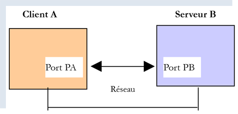

21. Funzioni Internet
Passiamo ora alle funzioni Internet di Python che ci consentono di programmare TCP / IP (Transfer Control Protocol / Internet Protocol).

21.1. Nozioni di base sulla programmazione Internet
21.1.1. Informazioni generali
Consideriamo la comunicazione tra due macchine remote A e B:

Quando un'applicazione AppA su un computer A vuole comunicare con un'applicazione AppB su un computer B in Internet, deve conoscere diverse informazioni:
- l’indirizzo IP (Internet Protocol) o il nome del computer B;
- il numero della porta su cui opera l’applicazione AppB. Infatti, il computer B può ospitare numerose applicazioni che operano su Internet. Quando riceve informazioni provenienti dalla rete, deve sapere a quale applicazione sono destinate tali informazioni. Le applicazioni del computer B accedono alla rete tramite interfacce denominate anche porte di comunicazione. Questa informazione è contenuta nel pacchetto ricevuto dal computer B affinché possa essere consegnato all’applicazione corretta;
- i protocolli di comunicazione supportati dal computer B. Nel nostro studio utilizzeremo esclusivamente i protocolli TCP-IP;
- il protocollo di dialogo accettato dall’applicazione AppB. Infatti, i computer A e B «comunicheranno» tra loro. Ciò che si scambieranno sarà incapsulato nei protocolli TCP-IP. Tuttavia, quando, alla fine della catena, l’applicazione AppB riceverà le informazioni inviate dall’applicazione AppA, dovrà essere in grado di interpretarle. Ciò è analogo alla situazione in cui due persone, A e B, comunicano al telefono: il loro dialogo viene trasportato dal telefono. La voce verrà codificata sotto forma di segnali dal telefono A, trasportata attraverso le linee telefoniche, arriverà al telefono B per essere decodificata. La persona B sente quindi le parole. È qui che entra in gioco il concetto di protocollo di dialogo: se A parla francese e B non capisce questa lingua, A e B non potranno dialogare in modo efficace;
Pertanto, le due applicazioni che comunicano tra loro devono concordare sul tipo di dialogo che adotteranno. Ad esempio, il dialogo con un servizio ftp non è lo stesso di quello con un servizio pop: questi due servizi non accettano gli stessi comandi. Hanno un protocollo di dialogo diverso;
21.1.2. Le caratteristiche del protocollo TCP
In questa sede esamineremo solo le comunicazioni di rete che utilizzano il protocollo di trasporto TCP, di cui riportiamo le caratteristiche principali:
- il processo che intende trasmettere stabilisce innanzitutto una connessione con il processo destinatario delle informazioni che sta per inviare. Tale connessione avviene tra una porta del computer mittente e una porta del computer ricevente. Tra le due porte viene così creato un percorso virtuale che sarà riservato esclusivamente ai due processi che hanno stabilito la connessione;
- tutti i pacchetti inviati dal processo sorgente seguono questo percorso virtuale e arrivano nell’ordine in cui sono stati inviati;
- Le informazioni trasmesse hanno un carattere continuo. Il processo trasmittente invia le informazioni al proprio ritmo. Queste non vengono necessariamente inviate immediatamente: il protocollo TCP attende di averne una quantità sufficiente per inviarle. Vengono memorizzate in una struttura denominata segmento TCP. Una volta riempito, questo segmento verrà trasmesso al livello IP, dove verrà incapsulato in un pacchetto IP;
- ogni segmento inviato dal protocollo TCP è numerato. Il protocollo TCP destinatario verifica di ricevere correttamente i segmenti in sequenza. Per ogni segmento ricevuto correttamente, invia una conferma di ricezione al mittente;
- quando quest’ultimo lo riceve, lo comunica al processo mittente. Quest’ultimo può quindi sapere che un segmento è giunto a destinazione;
- se, trascorso un certo tempo, il protocollo TCP che ha trasmesso un segmento non riceve una conferma di ricezione, ritrasmette il segmento in questione, garantendo così la qualità del servizio di inoltro delle informazioni;
- il circuito virtuale stabilito tra i due processi che comunicano è full-duplex: ciò significa che le informazioni possono transitare in entrambe le direzioni. In questo modo il processo di destinazione può inviare conferme di ricezione anche mentre il processo di origine continua a inviare informazioni. Ciò consente, ad esempio, al protocollo di origine TCP di inviare più segmenti senza attendere la conferma di ricezione. Se dopo un certo tempo si accorge di non aver ricevuto la conferma di ricezione di un determinato segmento n. n, riprenderà l’invio dei segmenti da quel punto;
21.1.3. Il rapporto client-server
Spesso la comunicazione su Internet è asimmetrica: il computer A avvia una connessione per richiedere un servizio al computer B, specificando che desidera aprire una connessione con il servizio SB1 del computer B. Quest’ultimo accetta o rifiuta. Se accetta, la macchina A può inviare le proprie richieste al servizio SB1. Queste devono essere conformi al protocollo di dialogo compreso dal servizio SB1. Si instaura così un dialogo domanda-risposta tra la macchina A, detta macchina client, e la macchina B, detta macchina server. Uno dei due partner chiuderà la connessione.
21.1.4. Architettura di un client
L’architettura di un programma di rete che richiede i servizi di un’applicazione server sarà la seguente:
21.1.5. Architettura di un server
L'architettura di un programma che offre servizi sarà la seguente:
Il programma server gestisce in modo diverso la richiesta di connessione iniziale di un client rispetto alle sue richieste successive volte a ottenere un servizio. Il programma non fornisce direttamente il servizio. Se lo facesse, durante la durata del servizio non sarebbe più in ascolto delle richieste di connessione e i client non verrebbero quindi serviti. Procedendo diversamente: non appena una richiesta di connessione viene ricevuta sulla porta di ascolto e quindi accettata, il server crea un'attività incaricata di fornire il servizio richiesto dal cliente. Tale servizio viene fornito su un'altra porta del server, denominata porta di servizio. In questo modo è possibile servire più clienti contemporaneamente.
Un'attività di servizio avrà la seguente struttura:
21.2. Scopri i protocolli di comunicazione di Internet
21.2.1. Introduzione
Quando un client si connette a un server, si instaura un dialogo tra i due. La natura di tale dialogo costituisce ciò che viene definito protocollo di comunicazione del server. Tra i protocolli più diffusi su Internet figurano i seguenti:
- HTTP: HyperText Transfer Protocol - il protocollo di comunicazione con un server web (server HTTP);
- SMTP: Simple Mail Transfer Protocol – il protocollo di comunicazione con un server di invio della posta elettronica (server SMTP);
- POP: Post Office Protocol - il protocollo di comunicazione con un server di archiviazione della posta elettronica (server POP). In questo caso si tratta di recuperare i messaggi di posta elettronica ricevuti e non di inviarne;
- IMAP: Internet Message Access Protocol – il protocollo di comunicazione con un server di archiviazione della posta elettronica (server IMAP). Questo protocollo ha progressivamente sostituito il precedente protocollo POP;
- FTP: File Transfer Protocol – il protocollo di comunicazione con un server di archiviazione file (server FTP);
Tutti questi protocolli hanno la particolarità di essere protocolli basati su righe di testo: il client e il server si scambiano righe di testo. Se si dispone di un client in grado di:
- creare una connessione con un server TCP;
- visualizzare sulla console le righe di testo che il server gli invia;
- inviare al server le righe di testo che un utente digiterebbe sulla tastiera;
quindi è possibile comunicare con un server TCP che utilizza un protocollo a righe di testo, purché si conoscano le regole di tale protocollo.
21.2.2. Utilità TCP

Nei codici associati a questo documento si trovano due utilità di comunicazione TCP:
- [RawTcpClient] consente di connettersi alla porta P di un server S;
- [RawTcpServer] consente di creare un server che attende i client su una porta P;
Si tratta di due programmi in C# di cui vi vengono forniti i codici sorgente. Potete quindi modificarli.
Il server TCP [RawTcpServer]viene richiamato con la sintassi [RawTcpServeur port] per creare un servizio TCP sulla porta [port] della macchina locale (il computer su cui state lavorando):
- il server può servire più client contemporaneamente;
- il server esegue i comandi digitati dall’utente tramite la tastiera. Questi sono i seguenti:
- list: elenca i client attualmente connessi al server. Questi vengono visualizzati nel formato [id=x-nom=y]. Il campo [id] serve a identificare i client;
- send x [texte]: invia un testo al client n. x (id=x). Le parentesi quadre [] non vengono inviate. Sono necessarie nel comando e servono a delimitare visivamente il testo inviato al client;
- close x: chiude la connessione con il cliente n. x;
- quit: chiude tutte le connessioni e arresta il servizio;
- le righe inviate dal cliente al server vengono visualizzate sulla console;
- tutte le comunicazioni vengono registrate in un file di testo denominato [machine-port.txt], dove
- [machine] è il nome della macchina su cui viene eseguito il codice;
- [port] è la porta del servizio che risponde alle richieste del client;
Il client TCP [RawTcpClient] viene chiamato con la sintassi [RawTcpClient serveur port] per connettersi alla porta [port] del server [serveur]:
- le righe digitate dall’utente sulla tastiera vengono inviate al server;
- le righe inviate dal server vengono visualizzate sulla console;
- tutte le comunicazioni vengono registrate in un file di testo denominato [serveur-port.txt];
Vediamo un esempio. Apriamo due finestre di terminale PyCharm e in ciascuna di esse ci posizioniamo nella cartella delle utilità:

In una delle finestre si avvia il server [RawTcpServer] sulla porta 100:
(venv) C:\Data\st-2020\dev\python\cours-2020\python3-flask-2020\inet\utilitaires>RawTcpServer.exe 100
server : Serveur générique lancé sur le port 0.0.0.0:100
server : Attente d'un client...
server : Commandes disponibles : [list, send id [texte], close id, quit]
user :
- riga 1, ci troviamo nella cartella delle utilità;
- riga 1: avviamo il server TCP sulla porta 100;
- righe 2-4: il server entra in modalità di attesa per un client TCP e visualizza un elenco di comandi che l’utente può digitare dalla tastiera;
- riga 5: il server attende un comando digitato dall’utente tramite la tastiera;
Nell’altra finestra di comando, si avvia il client TCP:
(venv) C:\Data\st-2020\dev\python\cours-2020\python3-flask-2020\inet\utilitaires>RawTcpClient.exe localhost 100
Client [DESKTOP-30FF5FB:51173] connecté au serveur [localhost-100]
Tapez vos commandes (quit pour arrêter) :
- riga 1: ci troviamo nella cartella delle utilità;
- alla riga 1 avviamo il client TCP: gli indichiamo di connettersi alla porta 100 della macchina locale (quella su cui è in esecuzione il codice di [RawTcpClient]);
- riga 2, il client è riuscito a connettersi al server. Vengono indicate le coordinate del client: si trova sulla macchina [DESKTOP-30FF5FB] (la macchina locale in questo esempio) e utilizza la porta [51173] per comunicare con il server:
- riga 3, il client attende un comando digitato dall’utente sulla tastiera;
Torniamo alla finestra del server. Il suo contenuto è cambiato:
(venv) C:\Data\st-2020\dev\python\cours-2020\python3-flask-2020\inet\utilitaires>RawTcpServer.exe 100
server : Serveur générique lancé sur le port 0.0.0.0:100
server : Attente d'un client...
server : Commandes disponibles : [list, send id [texte], close id, quit]
user : server : Client 1-DESKTOP-30FF5FB-51173 connecté...
server : Attente d'un client...
- riga 5, è stato rilevato un client. Il server gli ha assegnato il numero 1. Il server ha identificato correttamente il client remoto (macchina e porta);
- riga 6, il server torna in attesa di un nuovo client;
Torniamo alla finestra del client e inviamo un comando al server:
(venv) C:\Data\st-2020\dev\python\cours-2020\python3-flask-2020\inet\utilitaires>RawTcpClient.exe localhost 100
Client [DESKTOP-30FF5FB:51173] connecté au serveur [localhost-100]
Tapez vos commandes (quit pour arrêter) :
hello from client
- riga 4, il comando inviato al server;
Torniamo alla finestra del server. Il suo contenuto è cambiato:
(venv) C:\Data\st-2020\dev\python\cours-2020\python3-flask-2020\inet\utilitaires>RawTcpServer.exe 100
server : Serveur générique lancé sur le port 0.0.0.0:100
server : Attente d'un client...
server : Commandes disponibles : [list, send id [texte], close id, quit]
user : server : Client 1-DESKTOP-30FF5FB-51173 connecté...
server : Attente d'un client...
client 1 : [hello from client]
- riga 7, tra parentesi quadre, il messaggio ricevuto dal server;
Inviamo una risposta al cliente:
(venv) C:\Data\st-2020\dev\python\cours-2020\python3-flask-2020\inet\utilitaires>RawTcpServer.exe 100
server : Serveur générique lancé sur le port 0.0.0.0:100
server : Attente d'un client...
server : Commandes disponibles : [list, send id [texte], close id, quit]
user : server : Client 1-DESKTOP-30FF5FB-51173 connecté...
server : Attente d'un client...
client 1 : [hello from client]
send 1 [hello from server]
user :
- riga 8, la risposta inviata al client 1. Viene inviato solo il testo tra le parentesi quadre, non le parentesi stesse;
Torniamo alla finestra del cliente:
(venv) C:\Data\st-2020\dev\python\cours-2020\python3-flask-2020\inet\utilitaires>RawTcpClient.exe localhost 100
Client [DESKTOP-30FF5FB:51173] connecté au serveur [localhost-100]
Tapez vos commandes (quit pour arrêter) :
hello from client
<-- [hello from server]
- riga 5, la risposta ricevuta dal client. Il testo ricevuto è quello tra parentesi quadre;
Torniamo alla finestra del server per vedere altri comandi:
(venv) C:\Data\st-2020\dev\python\cours-2020\python3-flask-2020\inet\utilitaires>RawTcpServer.exe 100
server : Serveur générique lancé sur le port 0.0.0.0:100
server : Attente d'un client...
server : Commandes disponibles : [list, send id [texte], close id, quit]
user : server : Client 1-DESKTOP-30FF5FB-51173 connecté...
server : Attente d'un client...
client 1 : [hello from client]
send 1 [hello from server]
user : list
server : id=1-name=DESKTOP-30FF5FB-51173
user : close 1
server : Connexion client 1 fermée...
user : quit
server : fin du service
- riga 9, richiediamo l'elenco dei client;
- riga 10, la risposta;
- riga 11, chiudiamo la connessione con il cliente n. 1;
- riga 12, la conferma del server;
- riga 13, arrestiamo il server;
- riga 14, la conferma del server;
Torniamo alla finestra del client:
(venv) C:\Data\st-2020\dev\python\cours-2020\python3-flask-2020\inet\utilitaires>RawTcpClient.exe localhost 100
Client [DESKTOP-30FF5FB:51173] connecté au serveur [localhost-100]
Tapez vos commandes (quit pour arrêter) :
hello from client
<-- [hello from server]
Perte de la connexion avec le serveur...
- riga 6, il client ha rilevato la fine del servizio;
Sono stati creati due file di log, uno per il server e uno per il client:

- in [1], i log del server: il nome del file è il nome del client nella forma [machine-port]. Ciò consente di avere file di log diversi per clienti diversi;
- in [2], i log del client: il nome del file è il nome del server nel formato [machine-port];
I log del server sono i seguenti:
<-- [hello from client]
--> [hello from server]
I log del client sono i seguenti:
--> [hello from client]
<-- [hello from server]
21.3. Ottenere il nome o l'indirizzo IP di un computer su Internet

I computer su Internet sono identificati da un indirizzo IP (IPv4 o IPv6) e, nella maggior parte dei casi, da un nome. Tuttavia, in definitiva, solo l’indirizzo IP viene utilizzato dai protocolli di comunicazione di Internet. È quindi necessario conoscere l’indirizzo IP di un computer identificato tramite il proprio nome.
Lo script [ip-01.py] è il seguente:
# importazioni
import socket
# ------------------------------------------------
def get_ip_and_name(nom_machine: str):
# nom_machine: nome della macchina di cui si desidera l'indirizzo IP
try:
# nom_machine-->indirizzo IP
ip = socket.gethostbyname(nom_machine)
print(f"ip[{nom_machine}]={ip}")
except socket.error as erreur:
# viene visualizzato un errore
print(f"ip[{nom_machine}]={erreur}")
return
try:
# indirizzo IP --> nom_machine
names = socket.gethostbyaddr(ip)
print(f"names[{ip}]={names}")
except socket.error as erreur:
# viene visualizzato l'errore
print(f"names[{ip}]={erreur}")
return
# ---------------------------------------- main
# i computer connessi a Internet
hosts = ["istia.univ-angers.fr", "www.univ-angers.fr", "sergetahe.com", "localhost", "xx"]
# indirizzi IP delle macchine HOTES
for host in hosts:
print("-------------------------------------")
get_ip_and_name(host)
# fine
print("Terminé...")
Commenti
- riga 2: il modulo [socket] fornisce le funzioni necessarie alla gestione dei socket Internet. [socket] significa presa elettrica, presa di rete;
- riga 6: la funzione [get_ip_and_name] consente, a partire dal nome Internet di un computer, di ottenere:
- l'indirizzo IP del computer;
- il nome del computer ricavato dall’indirizzo IP precedente;
- riga 10: la funzione [socket.gethostbyname] consente di ottenere l'indirizzo IP di un computer a partire da uno di questi nomi (un computer Internet può avere un nome principale e degli alias);
- riga 12: le funzioni relative ai socket generano l’eccezione [socket.error] non appena si verifica un errore;
- riga 19: la funzione [socket.gethostbyaddr] consente di ottenere il nome di un computer a partire dal suo indirizzo IP. Vedremo che è possibile ottenere un nome diverso da quello passato alla riga 6;
- riga 30: un elenco di nomi di macchine. L'ultimo nome è errato. Il nome [localhost] indica la macchina su cui state lavorando e che esegue lo script;
- righe 33-35: vengono visualizzati i IP di queste macchine;
Risultati:
C:\Data\st-2020\dev\python\cours-2020\python3-flask-2020\venv\Scripts\python.exe C:/Data/st-2020/dev/python/cours-2020/python3-flask-2020/inet/ip/ip_01.py
-------------------------------------
ip[istia.univ-angers.fr]=193.49.144.41
names[193.49.144.41]=('ametys-fo-2.univ-angers.fr', [], ['193.49.144.41'])
-------------------------------------
ip[www.univ-angers.fr]=193.49.144.41
names[193.49.144.41]=('ametys-fo-2.univ-angers.fr', [], ['193.49.144.41'])
-------------------------------------
ip[sergetahe.com]=87.98.154.146
names[87.98.154.146]=('cluster026.hosting.ovh.net', [], ['87.98.154.146'])
-------------------------------------
ip[localhost]=127.0.0.1
names[127.0.0.1]=('DESKTOP-30FF5FB', [], ['127.0.0.1'])
-------------------------------------
ip[xx]=[Errno 11001] getaddrinfo failed
Terminé...
Process finished with exit code 0
21.4. Il protocollo HTTP (HyperText Transfer Protocol)
21.4.1. Esempio 1

Quando un browser visualizza un URL, funge da client di un server web o, in altre parole, di un server HTTP. È il browser a prendere l’iniziativa e a inviare per primo una serie di comandi al server. Per questo primo esempio:
- il server sarà l’utilità [RawTcpServer];
- il client sarà un browser;
Per prima cosa avviamo il server sulla porta 100:
(venv) C:\Data\st-2020\dev\python\cours-2020\python3-flask-2020\inet\utilitaires>RawTcpServer.exe 100
server : Serveur générique lancé sur le port 0.0.0.0:100
server : Attente d'un client...
server : Commandes disponibles : [list, send id [texte], close id, quit]
user :
Poi, con un browser, richiediamo URL [http://localhost:100], ovvero specifichiamo che il server HTTP interpellato opera sulla porta 100 del computer locale:

Torniamo alla finestra del server:
(venv) C:\Data\st-2020\dev\python\cours-2020\python3-flask-2020\inet\utilitaires>RawTcpServer.exe 100
server : Serveur générique lancé sur le port 0.0.0.0:100
server : Attente d'un client...
server : Commandes disponibles : [list, send id [texte], close id, quit]
user : server : Client 1-DESKTOP-30FF5FB-51438 connecté...
server : Attente d'un client...
server : Client 2-DESKTOP-30FF5FB-51439 connecté...
server : Attente d'un client...
client 1 : [GET / HTTP/1.1]
client 1 : [Host: localhost:100]
client 1 : [Connection: keep-alive]
client 1 : [DNT: 1]
client 1 : [Upgrade-Insecure-Requests: 1]
client 1 : [User-Agent: Mozilla/5.0 (Windows NT 10.0; Win64; x64) AppleWebKit/537.36 (KHTML, like Gecko) Chrome/83.0.4103.116 Safari/537.36]
client 1 : [Accept: text/html,application/xhtml+xml,application/xml;q=0.9,image/webp,image/apng,*/*;q=0.8,application/signed-exchange;v=b3;q=0.9]
client 1 : [Sec-Fetch-Site: none]
client 1 : [Sec-Fetch-Mode: navigate]
client 1 : [Sec-Fetch-User: ?1]
client 1 : [Sec-Fetch-Dest: document]
client 1 : [Accept-Encoding: gzip, deflate, br]
client 1 : [Accept-Language: fr-FR,fr;q=0.9,en-US;q=0.8,en;q=0.7]
client 1 : []
server : Client 3-DESKTOP-30FF5FB-51441 connecté...
server : Attente d'un client...
- riga 5, il client che si è connesso;
- righe 9-22: la serie di righe di testo che ha inviato:
- riga 9: questa riga ha il formato [GET URL HTTP/1.1]. Richiede il URL / e chiede al server di utilizzare il protocollo HTTP 1.1;
- riga 10: questa riga ha il formato [Host: serveur:port]. La maiuscola o minuscola del comando [Host] non ha importanza. Si ricorda che il client interroga un server locale operante sulla porta 100;
- riga 14: il comando [User-Agent] fornisce l’identità del client;
- riga 15: il comando [Accept] indica quali tipi di documento sono accettati dal client;
- riga 21: il comando [Accept-Language] indica in quale lingua si desiderano i documenti richiesti, qualora esistano in più lingue;
- riga 11: il comando [Connection] indica la modalità di connessione desiderata: [keep-alive] indica che la connessione deve essere mantenuta fino al termine degli scambi;
- riga 22: il client termina i propri comandi con una riga vuota;
Terminiamo la connessione chiudendo il server:
client 1 : []
server : Client 3-DESKTOP-30FF5FB-51441 connecté...
server : Attente d'un client...
quit
server : fin du service
21.4.2. Esempio 2
Ora che conosciamo i comandi inviati da un browser per richiedere un URL, richiederemo questo URL con il nostro client TCP [RawTcpClient]. Il server Apache di Laragon (paragrafo |Installazione di Laragon|) fungerà da nostro server web.
Avviamo Laragon e poi il server web Apache:


Ora, utilizzando un browser, accediamo all’URL [http://localhost:80]. Qui specifichiamo solo il server [localhost:80] e nessun documento URL. In questo caso viene richiesto il URL /, ovvero la radice del server web:

- in [1], ovvero il URL richiesto. Inizialmente era stato digitato [http://localhost:80] e il browser (in questo caso Firefox) l’ha semplicemente trasformata in [localhost] poiché il protocollo [http] è implicito quando non viene specificato alcun protocollo e la porta [80] è implicita quando la porta non è specificata;
- in [2], la pagina radice / del server web interpellato;
Ora visualizziamo il testo ricevuto dal browser:

- si fa clic con il tasto destro sulla pagina ricevuta e si seleziona l’opzione [2]. Si ottiene il seguente codice sorgente:
<!DOCTYPE html>
<html>
<head>
<title>Laragon</title>
<link href="https://fonts.googleapis.com/css?family=Karla:400" rel="stylesheet" type="text/css">
<style>
html, body {
height: 100%;
}
body {
margin: 0;
padding: 0;
width: 100%;
display: table;
font-weight: 100;
font-family: 'Karla';
}
.container {
text-align: center;
display: table-cell;
vertical-align: middle;
}
.content {
text-align: center;
display: inline-block;
}
.title {
font-size: 96px;
}
.opt {
margin-top: 30px;
}
.opt a {
text-decoration: none;
font-size: 150%;
}
a:hover {
color: red;
}
</style>
</head>
<body>
<div class="container">
<div class="content">
<div class="title" title="Laragon">Laragon</div>
<div class="info">
<br />
Apache/2.4.35 (Win64) OpenSSL/1.1.1b PHP/7.2.19<br />
PHP version: 7.2.19 <span><a title="phpinfo()" href="/?q=info">info</a></span><br />
Document Root: C:/MyPrograms/laragon/www<br />
</div>
<div class="opt">
<div><a title="Getting Started" href="https://laragon.org/docs">Getting Started</a></div>
</div>
</div>
</div>
</body>
</html>
Ora richiediamo l’URL [http://localhost:80] con il nostro client TCP:
(venv) C:\Data\st-2020\dev\python\cours-2020\python3-flask-2020\inet\utilitaires>RawTcpClient.exe localhost 80
Client [DESKTOP-30FF5FB:51541] connecté au serveur [localhost-80]
Tapez vos commandes (quit pour arrêter) :
- alla riga 1, ci connettiamo alla porta 80 del server localhost. È lì che opera il server web di Laragon;
Ora digitiamo i comandi che abbiamo scoperto nel paragrafo precedente:
(venv) C:\Data\st-2020\dev\python\cours-2020\python3-flask-2020\inet\utilitaires>RawTcpClient.exe localhost 80
Client [DESKTOP-30FF5FB:51544] connecté au serveur [localhost-80]
Tapez vos commandes (quit pour arrêter) :
GET / HTTP/1.1
Host: localhost:80
<-- [HTTP/1.1 200 OK]
<-- [Date: Sun, 05 Jul 2020 12:42:14 GMT]
<-- [Server: Apache/2.4.35 (Win64) OpenSSL/1.1.1b PHP/7.2.19]
<-- [X-Powered-By: PHP/7.2.19]
<-- [Content-Length: 1776]
<-- [Content-Type: text/html; charset=UTF-8]
<-- []
<-- [<!DOCTYPE html>]
<-- [<html>]
<-- [ <head>]
<-- [ <title>Laragon</title>]
<-- []
<-- [ <link href="https://fonts.googleapis.com/css?family=Karla:400" rel="stylesheet" type="text/css">]
<-- []
<-- [ <style>]
<-- [ html, body {]
<-- [ height: 100%;]
<-- [ }]
<-- []
<-- [ body {]
<-- [ margin: 0;]
<-- [ padding: 0;]
<-- [ width: 100%;]
<-- [ display: table;]
<-- [ font-weight: 100;]
<-- [ font-family: 'Karla';]
<-- [ }]
<-- []
<-- [ .container {]
<-- [ text-align: center;]
<-- [ display: table-cell;]
<-- [ vertical-align: middle;]
<-- [ }]
<-- []
<-- [ .content {]
<-- [ text-align: center;]
<-- [ display: inline-block;]
<-- [ }]
<-- []
<-- [ .title {]
<-- [ font-size: 96px;]
<-- [ }]
<-- []
<-- [ .opt {]
<-- [ margin-top: 30px;]
<-- [ }]
<-- []
<-- [ .opt a {]
<-- [ text-decoration: none;]
<-- [ font-size: 150%;]
<-- [ }]
<-- [ ]
<-- [ a:hover {]
<-- [ color: red;]
<-- [ }]
<-- [ </style>]
<-- [ </head>]
<-- [ <body>]
<-- [ <div class="container">]
<-- [ <div class="content">]
<-- [ <div class="title" title="Laragon">Laragon</div>]
<-- [ ]
<-- [ <div class="info"><br />]
<-- [ Apache/2.4.35 (Win64) OpenSSL/1.1.1b PHP/7.2.19<br />]
<-- [ PHP version: 7.2.19 <span><a title="phpinfo()" href="/?q=info">info</a></span><br />]
<-- [ Document Root: C:/MyPrograms/laragon/www<br />]
<-- []
<-- [ </div>]
<-- [ <div class="opt">]
<-- [ <div><a title="Getting Started" href="https://laragon.org/docs">Getting Started</a></div>]
<-- [ </div>]
<-- [ </div>]
<-- []
<-- [ </div>]
<-- [ </body>]
<-- [</html>]
Perte de la connexion avec le serveur...
- riga 4, il comando [GET]. Richiediamo la directory principale / del server web;
- riga 5, il comando [Host];
- questi sono gli unici due comandi indispensabili. Per gli altri comandi, il server web utilizzerà i valori predefiniti;
- riga 6, la riga vuota che deve concludere i comandi del client;
- sotto la riga 6, segue la risposta del server web;
- righe 7-12: le intestazioni HTTP della risposta del server;
- riga 13: la riga vuota che segnala la fine delle intestazioni HTTP;
- righe 14-82: il documento HTML richiesto alla riga 4;
Carichiamo il file di log [localhost-80.txt]:

--> [GET / HTTP/1.1]
--> [Host: localhost:80]
--> []
<-- [HTTP/1.1 200 OK]
<-- [Date: Sun, 05 Jul 2020 12:42:14 GMT]
<-- [Server: Apache/2.4.35 (Win64) OpenSSL/1.1.1b PHP/7.2.19]
<-- [X-Powered-By: PHP/7.2.19]
<-- [Content-Length: 1776]
<-- [Content-Type: text/html; charset=UTF-8]
<-- []
<-- [<!DOCTYPE html>]
<-- [<html>]
<-- [ <head>]
<-- [ <title>Laragon</title>]
<-- []
<-- [ <link href="https://fonts.googleapis.com/css?family=Karla:400" rel="stylesheet" type="text/css">]
<-- []
<-- [ <style>]
<-- [ html, body {]
<-- [ height: 100%;]
<-- [ }]
<-- []
<-- [ body {]
<-- [ margin: 0;]
<-- [ padding: 0;]
<-- [ width: 100%;]
<-- [ display: table;]
<-- [ font-weight: 100;]
<-- [ font-family: 'Karla';]
<-- [ }]
<-- []
<-- [ .container {]
<-- [ text-align: center;]
<-- [ display: table-cell;]
<-- [ vertical-align: middle;]
<-- [ }]
<-- []
<-- [ .content {]
<-- [ text-align: center;]
<-- [ display: inline-block;]
<-- [ }]
<-- []
<-- [ .title {]
<-- [ font-size: 96px;]
<-- [ }]
<-- []
<-- [ .opt {]
<-- [ margin-top: 30px;]
<-- [ }]
<-- []
<-- [ .opt a {]
<-- [ text-decoration: none;]
<-- [ font-size: 150%;]
<-- [ }]
<-- [ ]
<-- [ a:hover {]
<-- [ color: red;]
<-- [ }]
<-- [ </style>]
<-- [ </head>]
<-- [ <body>]
<-- [ <div class="container">]
<-- [ <div class="content">]
<-- [ <div class="title" title="Laragon">Laragon</div>]
<-- [ ]
<-- [ <div class="info"><br />]
<-- [ Apache/2.4.35 (Win64) OpenSSL/1.1.1b PHP/7.2.19<br />]
<-- [ PHP version: 7.2.19 <span><a title="phpinfo()" href="/?q=info">info</a></span><br />]
<-- [ Document Root: C:/MyPrograms/laragon/www<br />]
<-- []
<-- [ </div>]
<-- [ <div class="opt">]
<-- [ <div><a title="Getting Started" href="https://laragon.org/docs">Getting Started</a></div>]
<-- [ </div>]
<-- [ </div>]
<-- []
<-- [ </div>]
<-- [ </body>]
<-- [</html>]
- righe 11-79: il documento HTML ricevuto. Nell'esempio precedente, Firefox aveva ricevuto lo stesso;
Ora disponiamo delle basi per programmare un client TCP che richiederebbe un URL.
21.4.3. Esempio 3

Lo script [http/01/main.py] è un client HTTP configurato dal file [config.py]. Il contenuto di quest’ultimo è il seguente:
def configure():
# URLs da interrogare
urls = [
# sito: nome del sito a cui connettersi
# porta: porta del servizio web
# GET: URL richiesto
# intestazioni: intestazioni HTTP da inviare nella richiesta
# endOfLine: carattere di fine riga nelle intestazioni HTTP inviate
# codifica: codifica della risposta del server
# timeout: tempo massimo di attesa per una risposta del server
{
"site": "localhost",
"port": 80,
"GET": "/",
"headers": {
"Host": "localhost:80",
"User-Agent": "client Python",
"Accept": "text/HTML",
"Accept-Language": "fr"
},
"endOfLine": "\r\n",
"encoding": "utf-8",
"timeout": 0.5
},
{
"site": "sergetahe.com",
"port": 80,
"GET": "/",
"headers": {
"Host": "sergetahe.com:80",
"User-Agent": "client Python",
"Accept": "text/HTML",
"Accept-Language": "fr"
},
"endOfLine": "\r\n",
"encoding": "utf-8",
"timeout": 5
},
{
"site": "tahe.developpez.com",
"port": 443,
"GET": "/",
"headers": {
"Host": "tahe.developpez.com:443",
"User-Agent": "client Python",
"Accept": "text/HTML",
"Accept-Language": "fr"
},
"endOfLine": "\r\n",
"encoding": "utf-8",
"timeout": 2
},
{
"site": "www.sergetahe.com",
"port": 80,
"GET": "/cours-tutoriels-de-programmation/",
"headers": {
"Host": "sergetahe.com:80",
"User-Agent": "client Python",
"Accept": "text/HTML",
"Accept-Language": "fr"
},
"endOfLine": "\r\n",
"encoding": "utf-8",
"timeout": 5
}
]
# si restituisce la configurazione
return {
"urls": urls
}
- il contenuto del file è un elenco di URL, dove ogni elemento dell'elenco è un dizionario. Questo dizionario indica come connettersi al sito indicato dalla chiave [site];
- righe 4-10: il significato delle chiavi di ciascun dizionario;
Lo script [http/01/main.py] è il seguente:
# importazioni
import codecs
import socket
# -----------------------------------------------------------------------
def get_url(url: dict, suivi: bool = True):
# legge l'URL URL del sito url["GET"] e lo salva nel file url[site].html
# il dialogo client/server avviene secondo il protocollo HTTP indicato nel dizionario [url]
# si lascia che le eccezioni vengano segnalate
sock = None
html = None
try:
# connessione a [site] sulla porta 80 con un timeout
site = url['site']
sock = socket.create_connection((site, int(url['port'])), float(url['timeout']))
# la connessione rappresenta un flusso di comunicazione bidirezionale
# tra il client (questo programma) e il server web contattato
# questo canale viene utilizzato per lo scambio di comandi e informazioni
# il protocollo di comunicazione è HTTP
# creazione del file site.html - si sostituiscono i caratteri indesiderati con un nome di file
site2 = site.replace("/", "_")
site2 = site2.replace(".", "_")
html_filename = f'{site2}.html'
html = codecs.open(f"output/{html_filename}", "w", "utf-8")
# il client avvierà la comunicazione HTTP con il server
if suivi:
print(f"Client : début de la communication avec le serveur [{site}]")
# a seconda dei server, le righe del client devono terminare con \n o \r\n
end_of_line = url["endOfLine"]
# il client invia il comando GET per richiedere la configurazione URL ["GET"]
# sintassi GET URL HTTP/1.1
commande = f"GET {url['GET']} HTTP/1.1{end_of_line}"
# monitoraggio?
if suivi:
print(f"--> {commande}", end='')
# si invia il comando al server
sock.send(bytearray(commande, 'utf-8'))
# invio delle intestazioni HTTP
for verb, value in url['headers'].items():
# si costruisce il comando da inviare
commande = f"{verb}: {value}{end_of_line}"
# seguito?
if suivi:
print(f"--> {commande}", end='')
# si invia il comando al server
sock.send(bytearray(commande, 'utf-8'))
# si invia l'intestazione HTTP [Connection: close] per richiedere al server web
# di chiudere la connessione una volta inviato il documento richiesto
sock.send(bytearray(f"Connection: close{end_of_line}", 'utf-8'))
# le intestazioni (header) del protocollo HTTP devono terminare con una riga vuota
sock.send(bytearray(end_of_line, 'utf-8'))
#
# il server risponderà ora sul canale sock. Invierà tutti
# i propri dati, quindi chiuderà il canale. Il client legge quindi tutto ciò che arriva da sock
# fino alla chiusura del canale
#
# si leggono innanzitutto le intestazioni HTTP inviate dal server
# anche queste terminano con una riga vuota
if suivi:
print(f"Réponse du serveur [{site}]")
# lettura del socket come se fosse un file di testo
encoding = f"{url['encoding']}" if url['encoding'] else None
if encoding:
file = sock.makefile(encoding=encoding)
else:
file = sock.makefile()
# si analizza questo file riga per riga
fini = False
while not fini:
# lettura della riga corrente
ligne = file.readline().strip()
# c'è una riga non vuota?
if ligne:
if suivi:
# si visualizza l'intestazione HTTP
print(f"<-- {ligne}")
else:
# era la riga vuota - le intestazioni HTTP sono terminate
fini = True
# si legge il documento HTML che seguirà la riga vuota
# lettura della riga corrente
ligne = file.readline()
while ligne:
# registrazione nel file di log
html.write(str(ligne))
# riga successiva
ligne = file.readline()
# il ciclo termina quando il server chiude la connessione
finally:
# il client chiude la connessione
if sock:
sock.close()
# chiusura del file HTML
if html:
html.close()
# -------------------main
# si configura l'applicazione
import config
config = config.configure()
# si recuperano i URL dal file di configurazione
for url in config['urls']:
print("-------------------------")
print(url['site'])
print("-------------------------")
try:
# lettura di URL dal sito [site]
get_url(url)
except BaseException as erreur:
print(f"L'erreur suivante s'est produite : {erreur}")
finally:
pass
# fine
print("Terminé...")
Commenti al codice:
- righe 108-109: viene recuperato il dizionario [config] del modulo [config.py];
- righe 111-122: questo dizionario viene utilizzato;
- riga 118, 7: la funzione [get_url(url)] richiede un documento dal sito web url[site] e lo salva nel file di testo url[site].HTML. Per impostazione predefinita, le comunicazioni client/server vengono registrate nella console (monitoraggio=True);
- tutto avviene all'interno di un [try / finally] (righe 14-96). Non è presente alcuna clausola [except]. Le eccezioni vengono segnalate al codice chiamante, che provvede a interromperle e visualizzarle (righe 119-120);
- righe 16-17: apertura di una connessione al server web. La funzione [socket.create_connection] accetta tre parametri:
- [param1]: è il nome del computer su Internet che si desidera raggiungere;
- [param2]: è il numero di porta del servizio a cui ci si vuole connettere;
- [param3]: [socket.create_connection] restituisce un socket e [param3], se presente, indica il timeout del socket creato. Il timeout è il tempo massimo di attesa del socket mentre attende una risposta dal computer remoto;
- righe 27-28: creazione del file [site.html] in cui verrà memorizzato il documento HTML ricevuto;
- righe 34-43: il primo comando del client deve essere il comando [GET URL HTTP/1.1];
- riga 43: la funzione [sock.send] consente al client di inviare dati al server. In questo caso, la riga di testo inviata ha il seguente significato: «Voglio (GET) la pagina [URL] del sito web a cui sono connesso. Sto utilizzando il protocollo HTTP versione 1.1";
- riga 43: l’istruzione [sock.send(bytearray(commande, 'utf-8'))] invia un array di byte (bytearray). Questo array si ottiene convertendo la stringa [commande] in una sequenza di byte codificati in UTF-8;
- righe 44-52: vengono inviate le altre righe del protocollo HTTP [Host, User-Agent, Accept, Accept-Language…]. Il loro ordine non ha importanza;
- righe 53-55: si invia l'intestazione HTTP [Connection: close] per richiedere al server di chiudere la connessione una volta inviato il documento richiesto. Per impostazione predefinita, il server non lo fa. È quindi necessario richiederlo esplicitamente. Il vantaggio è che questa chiusura verrà rilevata dal lato client ed è così che quest’ultimo saprà di aver ricevuto l’intero documento richiesto;
- righe 56-57: si invia una riga vuota al server per indicare che il client ha terminato di inviare le proprie intestazioni HTTP e che ora è in attesa del documento richiesto;
- righe 68-86: il server invierà innanzitutto una serie di intestazioni HTTP che forniranno varie informazioni sul documento richiesto. Queste intestazioni terminano con una riga vuota;
- righe 69-73: per poter leggere la risposta del server, riga per riga, si utilizza il metodo [sock.makefile(encoding=encoding)]. Il parametro facoltativo [encoding] specifica la codifica del testo atteso. Dopo questa operazione, il flusso di righe inviate dal server potrà essere letto come un classico file di testo;
- riga 78: si legge una riga inviata dal server con il metodo [readline]. Si eliminano gli spazi (spazi bianchi, carattere di fine riga) all’inizio e alla fine della riga;
- righe 81-83: se la riga non è vuota e se è stato richiesto il monitoraggio, la riga ricevuta viene visualizzata sulla console;
- righe 84-86: se è stata recuperata la riga vuota che segna la fine delle intestazioni HTTP inviate dal server, si interrompe il ciclo della riga 76;
- righe 90-95: le righe di testo della risposta del server possono essere lette riga per riga con un ciclo while e salvate nel file di testo [html]. Quando il server web ha inviato l'intera pagina richiesta, chiude la connessione con il client. Dal lato client, ciò verrà rilevato come fine del file e si uscirà dal ciclo delle righe 90-95;
- righe 96-102: indipendentemente dalla presenza o meno di un errore, vengono liberate tutte le risorse utilizzate dal codice;
Risultati:
La console visualizza i seguenti log:
C:\Data\st-2020\dev\python\cours-2020\python3-flask-2020\venv\Scripts\python.exe C:/Data/st-2020/dev/python/cours-2020/python3-flask-2020/inet/http/01/main.py
-------------------------
localhost
-------------------------
Client : début de la communication avec le serveur [localhost]
--> GET / HTTP/1.1
--> Host: localhost:80
--> User-Agent: client Python
--> Accept: text/HTML
--> Accept-Language: fr
Réponse du serveur [localhost]
<-- HTTP/1.1 200 OK
<-- Date: Sun, 05 Jul 2020 16:27:46 GMT
<-- Server: Apache/2.4.35 (Win64) OpenSSL/1.1.1b PHP/7.2.19
<-- X-Powered-By: PHP/7.2.19
<-- Content-Length: 1776
<-- Connection: close
<-- Content-Type: text/html; charset=UTF-8
-------------------------
sergetahe.com
-------------------------
Client : début de la communication avec le serveur [sergetahe.com]
--> GET / HTTP/1.1
--> Host: sergetahe.com:80
--> User-Agent: client Python
--> Accept: text/HTML
--> Accept-Language: fr
Réponse du serveur [sergetahe.com]
<-- HTTP/1.1 302 Found
<-- Date: Sun, 05 Jul 2020 16:27:45 GMT
<-- Content-Type: text/html; charset=UTF-8
<-- Transfer-Encoding: chunked
<-- Connection: close
<-- Server: Apache
<-- X-Powered-By: PHP/7.3
<-- Location: http://sergetahe.com:80/corsi-tutorial-di-programmazione
<-- Set-Cookie: SERVERID68971=2620178|XwH/h|XwH/h; path=/
<-- X-IPLB-Instance: 17106
-------------------------
tahe.developpez.com
-------------------------
Client : début de la communication avec le serveur [tahe.developpez.com]
--> GET / HTTP/1.1
--> Host: tahe.developpez.com:443
--> User-Agent: client Python
--> Accept: text/HTML
--> Accept-Language: fr
Réponse du serveur [tahe.developpez.com]
<-- HTTP/1.1 400 Bad Request
<-- Date: Sun, 05 Jul 2020 16:27:45 GMT
<-- Server: Apache/2.4.38 (Debian)
<-- Content-Length: 453
<-- Connection: close
<-- Content-Type: text/html; charset=iso-8859-1
-------------------------
www.sergetahe.com
-------------------------
Client : début de la communication avec le serveur [www.sergetahe.com]
--> GET /cours-tutoriels-de-programmation/ HTTP/1.1
--> Host: sergetahe.com:80
--> User-Agent: client Python
--> Accept: text/HTML
--> Accept-Language: fr
Réponse du serveur [www.sergetahe.com]
<-- HTTP/1.1 301 Moved Permanently
<-- Date: Sun, 05 Jul 2020 16:27:45 GMT
<-- Content-Type: text/html; charset=iso-8859-1
<-- Content-Length: 263
<-- Connection: close
<-- Server: Apache
<-- Location: https://sergetahe.com/corsi-e-tutorial-di-programmazione/
<-- Set-Cookie: SERVERID68971=2620178|XwH/h|XwH/h; path=/
<-- X-IPLB-Instance: 17095
Terminé...
Process finished with exit code 0
Commenti
- riga 12: è stato trovato URL [http://localhost/] (codice 200);
- riga 29: non è stato possibile trovare URL [http://sergetahe.com/] (codice 302). Il codice 302 indica che la pagina richiesta è cambiata in URL. La nuova URL è indicata dall'intestazione HTTP [Location] della riga 36;
- riga 49: la richiesta inviata al server [http://tahe.developpez.com] non è corretta (codice 400);
- riga 65: la pagina URL [http://www.sergetahe.com/] non è stata trovata (codice 301). Il codice 301 indica che la pagina richiesta ha cambiato URL in modo definitivo. La nuova URL è indicata dall'intestazione HTTP [Location] della riga 71;
In generale, i codici 3xx, 4xx e 5xx di un server HTTP sono codici di errore.
L'esecuzione ha generato i seguenti file:

Il file [output/localhost.HTML] ricevuto è il seguente:
<!DOCTYPE html>
<html>
<head>
<title>Laragon</title>
<link href="https://fonts.googleapis.com/css?family=Karla:400" rel="stylesheet" type="text/css">
<style>
html, body {
height: 100%;
}
body {
margin: 0;
padding: 0;
width: 100%;
display: table;
font-weight: 100;
font-family: 'Karla';
}
.container {
text-align: center;
display: table-cell;
vertical-align: middle;
}
.content {
text-align: center;
display: inline-block;
}
.title {
font-size: 96px;
}
.opt {
margin-top: 30px;
}
.opt a {
text-decoration: none;
font-size: 150%;
}
a:hover {
color: red;
}
</style>
</head>
<body>
<div class="container">
<div class="content">
<div class="title" title="Laragon">Laragon</div>
<div class="info"><br />
Apache/2.4.35 (Win64) OpenSSL/1.1.1b PHP/7.2.19<br />
PHP version: 7.2.19 <span><a title="phpinfo()" href="/?q=info">info</a></span><br />
Document Root: C:/MyPrograms/laragon/www<br />
</div>
<div class="opt">
<div><a title="Getting Started" href="https://laragon.org/docs">Getting Started</a></div>
</div>
</div>
</div>
</body>
</html>
Abbiamo ottenuto lo stesso documento che avremmo ottenuto con il browser Firefox.
Il documento [output/sergetahe_com.html] ricevuto è il seguente:

La maggior parte dei server HTTP invia le risposte alle richieste ricevute in blocchi. Ogni blocco inviato è preceduto da una riga che indica il numero di byte del blocco successivo. Ciò consente al client di leggere esattamente quel numero di byte per ottenere il blocco. In questo caso, lo 0 indica che il blocco successivo ha zero byte. Si ricorda che il server aveva indicato che il documento [http://sergetahe.com/] era cambiato da URL. Pertanto, non ha inviato alcun documento.
Il documento [output/tahe_developpez_com.html] è il seguente:
<!DOCTYPE HTML PUBLIC "-//IETF//DTD HTML 2.0//EN">
<html><head>
<title>400 Bad Request</title>
</head><body>
<h1>Bad Request</h1>
<p>Your browser sent a request that this server could not understand.<br />
Reason: You're speaking plain HTTP to an SSL-enabled server port.<br />
Instead use the HTTPS scheme to access this URL, please.<br />
</p>
<hr>
<address>Apache/2.4.38 (Debian) Server at 2eurocents.developpez.com Port 80</address>
</body></html>
- righe 1-12: il server ha inviato un documento HTML nonostante la richiesta fosse errata (riga 49 dei risultati). Il documento HTML consente al server di specificare la causa dell’errore. Questa è indicata alle righe 6 e 7:
- riga 7: il nostro client ha utilizzato il protocollo HTTP;
- riga 8: il server utilizza il protocollo HTTPS (S=sicuro) e non accetta il protocollo HTTP;
Il documento [output/www_sergetahe_com.html] è il seguente:
<!DOCTYPE HTML PUBLIC "-//IETF//DTD HTML 2.0//EN">
<html><head>
<title>301 Moved Permanently</title>
</head><body>
<h1>Moved Permanently</h1>
<p>The document has moved <a href="https://sergetahe.com/cours-tutoriels-de-programmation/">here</a>.</p>
</body></html>
Anche in questo caso si è verificato un errore (riga 3). Tuttavia, il server provvede a inviare un documento HTML che descrive in dettaglio l’errore (righe 1-7).
21.4.4. Esempio 4
Gli esempi precedenti ci hanno dimostrato che il nostro client HTTP era insufficiente. Presenteremo ora uno strumento denominato [curl] che consente di recuperare documenti web gestendo le difficoltà menzionate: protocollo HTTPS, documento inviato a pezzi, reindirizzamenti… Lo strumento [curl] è stato installato con Laragon:

Apriamo un terminale PyCharm [1]:

- in [1], l’accesso ai terminali di PyCharm;
- in [2-3], i terminali già attivi;
- in [4], la cartella in cui ci si trova. Di seguito non ha importanza;
Nel terminale digitiamo il seguente comando:
(venv) C:\Data\st-2020\dev\python\cours-2020\python3-flask-2020\inet\utilitaires>curl --help
Usage: curl [options...] <url>
--abstract-unix-socket <path> Connect via abstract Unix domain socket
--anyauth Pick any authentication method
-a, --append Append to target file when uploading
--basic Use HTTP Basic Authentication
--cacert <CA certificate> CA certificate to verify peer against
…
Il fatto che il comando [curl –help] abbia prodotto dei risultati dimostra che il comando [curl] si trova nel PATH del terminale. In Windows, il PATH è l’insieme delle cartelle esplorate quando l’utente digita un comando eseguibile, in questo caso [curl]. Il valore del PATH può essere individuato:
(venv) C:\Data\st-2020\dev\python\cours-2020\python3-flask-2020\inet\utilitaires>echo %PATH%
C:\Data\st-2020\dev\python\cours-2020\python3-flask-2020\venv\Scripts;C:\Program Files (x86)\Common Files\Oracle\Java\javapath;C:\Program Files\Python38\Scripts\;C:\Program Files\Python38\;C:\windows\system32;C:\windows;C:\windows\System32\Wbem;C:\windows\System32\WindowsPowerShell\v1.0\;C:\windows\System32\OpenSSH\;C:\Program Files\Git\cmd;C:\Users\serge\AppData\Local\Microsoft\WindowsApps;;C:\Program Files\JetBrains\PyCharm Community Edition 2020.1.2\bin;
Riga 2: le cartelle di PATH separate da punti e virgola. In questo elenco non compare alcuna cartella relativa a Laragon. Indagando un po’, si scopre che nella cartella [c:\windows\system32] è presente un [curl]. È proprio questo che ha risposto in precedenza.
Se si desidera utilizzare lo strumento [curl] fornito con Laragon, è possibile procedere come segue:


- in [2], il terminale Laragon;
- in [3], questo pulsante consente di creare nuovi terminali, ciascuno dei quali viene installato in una scheda della finestra sopra riportata;
- in [4], si richiede il PATH del terminale Laragon;
- si ottiene qualcosa di molto diverso da ciò che era stato ottenuto in un terminale PyCharm. Questo PATH contiene numerose cartelle create durante l’installazione di Laragon. La cartella contenente lo strumento [curl] ne fa parte:

Successivamente, utilizzate il terminale che preferite. Tenete presente che, quando desiderate utilizzare uno strumento fornito da Laragon, è preferibile utilizzare il terminale Laragon.
Il comando [curl --help] visualizza tutte le opzioni di configurazione di [curl]. Ce ne sono diverse decine. Ne useremo pochissime. Per richiedere un URL basta digitare il comando [curl URL]. Questo comando visualizzerà sulla console il documento richiesto. Se si desidera inoltre visualizzare gli scambi HTTP tra il client e il server, si digiterà [curl --verbose URL]. Infine, per salvare il documento HTML richiesto in un file, si digiterà [curl --verbose --output fichier URL].
Per evitare di ingombrare il sistema di file del nostro computer, spostiamoci in un’altra posizione (qui utilizzo un terminale Laragon):
λ cd \Temp\
C:\Temp
λ mkdir curl
C:\Temp
λ cd curl\
C:\Temp\curl
λ dir
Le volume dans le lecteur C s’appelle Local Disk
Le numéro de série du volume est B84C-D958
Répertoire de C:\Temp\curl
05/07/2020 19:31 <DIR> .
05/07/2020 19:31 <DIR> ..
0 fichier(s) 0 octets
2 Rép(s) 892 388 098 048 octets libres
- alla riga 3, ci spostiamo nella cartella [c:\temp]. Se questa cartella non esiste, potete crearla o sceglierne un’altra;
- alla riga 6, creiamo una cartella denominata [curl];
- alla riga 9, ci si posiziona su di essa;
- alla riga 12, si visualizza il contenuto della cartella. È vuota (riga 20);
Assicurarsi che il server Apache di Laragon sia in esecuzione e, con [curl], richiedere URL e [http://localhost/] con il comando [curl –verbose –output localhost.html http://localhost/]. Si ottengono i seguenti risultati:
λ curl --verbose --output localhost.html http://localhost/
% Total % Received % Xferd Average Speed Time Time Time Current
Dload Upload Total Spent Left Speed
0 0 0 0 0 0 0 0 --:--:-- --:--:-- --:--:-- 0* Trying ::1...
* TCP_NODELAY set
* Trying 127.0.0.1...
* TCP_NODELAY set
0 0 0 0 0 0 0 0 --:--:-- 0:00:01 --:--:-- 0* Connected to localhost (::1) port 80 (#0)
0 0 0 0 0 0 0 0 --:--:-- 0:00:01 --:--:-- 0> GET / HTTP/1.1
> Host: localhost
> User-Agent: curl/7.63.0
> Accept: */*
>
< HTTP/1.1 200 OK
< Date: Sun, 05 Jul 2020 17:35:43 GMT
< Server: Apache/2.4.35 (Win64) OpenSSL/1.1.1b PHP/7.2.19
< X-Powered-By: PHP/7.2.19
< Content-Length: 1776
< Content-Type: text/html; charset=UTF-8
<
{ [1776 bytes data]
100 1776 100 1776 0 0 1062 0 0:00:01 0:00:01 --:--:-- 1062
* Connection #0 per mantenere intatto l'host localhost
- righe 10-13: righe inviate da [curl] al server [localhost]. Si riconosce il protocollo HTTP;
- righe 14-20: righe inviate in risposta dal server;
- riga 14: indica che il documento richiesto è stato ricevuto correttamente;
Il file [localhost.html] contiene il documento richiesto. È possibile verificarlo aprendo il file in un editor di testo.
Ora richiediamo il file URL [https://tahe.developpez.com:443/]. Per ottenere questo URL, il client HTTP deve essere in grado di comunicare in HTTPS. È il caso del client [curl].
I risultati della console sono i seguenti:
C:\Temp\curl
λ curl --verbose --output tahe.developpez.com.html https://tahe.developpez.com:443/
% Total % Received % Xferd Average Speed Time Time Time Current
Dload Upload Total Spent Left Speed
0 0 0 0 0 0 0 0 --:--:-- --:--:-- --:--:-- 0* Trying 87.98.130.52...
* TCP_NODELAY set
0 0 0 0 0 0 0 0 --:--:-- --:--:-- --:--:-- 0* Connected to tahe.developpez.com (87.98.130.52) port 443 (#0)
* ALPN, offering h2
* ALPN, offering http/1.1
* successfully set certificate verify locations:
* CAfile: C:\MyPrograms\laragon\bin\laragon\utils\curl-ca-bundle.crt
CApath: none
} [5 bytes data]
* TLSv1.3 (OUT), TLS handshake, Client hello (1):
} [512 bytes data]
* TLSv1.3 (IN), TLS handshake, Server hello (2):
{ [122 bytes data]
* TLSv1.3 (IN), TLS handshake, Encrypted Extensions (8):
{ [25 bytes data]
* TLSv1.3 (IN), TLS handshake, Certificate (11):
{ [2563 bytes data]
* TLSv1.3 (IN), TLS handshake, CERT verify (15):
{ [264 bytes data]
* TLSv1.3 (IN), TLS handshake, Finished (20):
{ [52 bytes data]
* TLSv1.3 (OUT), TLS change cipher, Change cipher spec (1):
} [1 bytes data]
* TLSv1.3 (OUT), TLS handshake, Finished (20):
} [52 bytes data]
* SSL connection using TLSv1.3 / TLS_AES_256_GCM_SHA384
* ALPN, server accepted to use http/1.1
* Server certificate:
* subject: CN=*.developpez.com
* start date: Jul 1 15:38:30 2020 GMT
* expire date: Sep 29 15:38:30 2020 GMT
* subjectAltName: host "tahe.developpez.com" matched cert's "*.developpez.com"
* issuer: C=US; O=Let's Encrypt; CN=Let's Encrypt Authority X3
* SSL certificate verify ok.
} [5 bytes data]
> GET / HTTP/1.1
> Host: tahe.developpez.com
> User-Agent: curl/7.63.0
> Accept: */*
>
{ [5 bytes data]
* TLSv1.3 (IN), TLS handshake, Newsession Ticket (4):
{ [281 bytes data]
* TLSv1.3 (IN), TLS handshake, Newsession Ticket (4):
{ [297 bytes data]
* old SSL session ID is stale, removing
{ [5 bytes data]
< HTTP/1.1 200 OK
< Date: Sun, 05 Jul 2020 17:39:53 GMT
< Server: Apache/2.4.38 (Debian)
< X-Powered-By: PHP/5.3.29
< Vary: Accept-Encoding
< Transfer-Encoding: chunked
< Content-Type: text/html
<
{ [6 bytes data]
100 99k 0 99k 0 0 79343 0 --:--:-- 0:00:01 --:--:-- 79343
* Connection #0 all'host tahe.developpez.com lasciato intatto
- righe 10-39: gli scambi client/server per proteggere la connessione: questa sarà crittografata;
- righe 41-44: le intestazioni HTTP inviate dal client [curl] al server;
- riga 52: il documento richiesto è stato trovato;
- riga 57: il documento viene inviato in parti;
[curl] gestisce correttamente sia il protocollo sicuro HTTPS sia il fatto che il documento venga inviato a pezzi. Il documento inviato si troverà qui nel file [tahe.developpez.com.html].
Richiediamo ora l’URL [http://sergetahe.com/cours-tutoriels-de-programmation]. Avevamo visto che per questo URL c’era un reindirizzamento verso URL e [http://sergetahe.com/cours-tutoriels-de-programmation/] (con una / alla fine).
I risultati della console sono quindi i seguenti:
C:\Temp\curl
λ curl --verbose --output sergetahe.com.html --location http://sergetahe.com/corsi-tutorial-di-programmazione
% Total % Received % Xferd Average Speed Time Time Time Current
Dload Upload Total Spent Left Speed
0 0 0 0 0 0 0 0 --:--:-- --:--:-- --:--:-- 0* Trying 87.98.154.146...
* TCP_NODELAY set
* Connected to sergetahe.com (87.98.154.146) port 80 (#0)
> GET /cours-tutoriels-de-programmation HTTP/1.1
> Host: sergetahe.com
> User-Agent: curl/7.63.0
> Accept: */*
>
< HTTP/1.1 301 Moved Permanently
< Date: Sun, 05 Jul 2020 17:44:17 GMT
< Content-Type: text/html; charset=iso-8859-1
< Content-Length: 262
< Server: Apache
< Location: http://sergetahe.com/corsi-e-tutorial-di-programmazione/
< Set-Cookie: SERVERID68971=2620178|XwIRd|XwIRd; path=/
< X-IPLB-Instance: 17095
<
* Ignoring the response-body
{ [262 bytes data]
100 262 100 262 0 0 1858 0 --:--:-- --:--:-- --:--:-- 1858
* Connection #0 per ospitare sergetahe.com lasciato intatto
* Issue another request to this URL: 'http://sergetahe.com/corsi-e-tutorial-di-programmazione/'
* Found bundle for host sergetahe.com: 0x14385f8 [can pipeline]
* Could pipeline, but not asked to!
* Re-using existing connection! (#0) con host sergetahe.com
* Connected to sergetahe.com (87.98.154.146) port 80 (#0)
> GET /cours-tutoriels-de-programmation/ HTTP/1.1
> Host: sergetahe.com
> User-Agent: curl/7.63.0
> Accept: */*
>
< HTTP/1.1 301 Moved Permanently
< Date: Sun, 05 Jul 2020 17:44:17 GMT
< Content-Type: text/html; charset=iso-8859-1
< Content-Length: 263
< Server: Apache
< Location: https://sergetahe.com/corsi-e-tutorial-di-programmazione/
< Set-Cookie: SERVERID68971=2620178|XwIRd|XwIRd; path=/
< X-IPLB-Instance: 17095
<
* Ignoring the response-body
{ [263 bytes data]
100 263 100 263 0 0 764 0 --:--:-- --:--:-- --:--:-- 764
* Connection #0 all'host sergetahe.com lasciato intatto
* Issue another request to this URL: 'https://sergetahe.com/corsi-e-tutorial-di-programmazione/'
* Trying 87.98.154.146...
* TCP_NODELAY set
* Connected to sergetahe.com (87.98.154.146) port 443 (#1)
* ALPN, offering h2
* ALPN, offering http/1.1
* successfully set certificate verify locations:
* CAfile: C:\MyPrograms\laragon\bin\laragon\utils\curl-ca-bundle.crt
CApath: none
} [5 bytes data]
* TLSv1.3 (OUT), TLS handshake, Client hello (1):
} [512 bytes data]
* TLSv1.3 (IN), TLS handshake, Server hello (2):
{ [102 bytes data]
* TLSv1.2 (IN), TLS handshake, Certificate (11):
{ [2572 bytes data]
* TLSv1.2 (IN), TLS handshake, Server key exchange (12):
{ [333 bytes data]
* TLSv1.2 (IN), TLS handshake, Server finished (14):
{ [4 bytes data]
* TLSv1.2 (OUT), TLS handshake, Client key exchange (16):
} [70 bytes data]
* TLSv1.2 (OUT), TLS change cipher, Change cipher spec (1):
} [1 bytes data]
* TLSv1.2 (OUT), TLS handshake, Finished (20):
} [16 bytes data]
0 0 0 0 0 0 0 0 --:--:-- --:--:-- --:--:-- 0* TLSv1.2 (IN), TLS handshake, Finished (20):
{ [16 bytes data]
* SSL connection using TLSv1.2 / ECDHE-RSA-AES128-GCM-SHA256
* ALPN, server accepted to use h2
* Server certificate:
* subject: CN=sergetahe.com
* start date: May 10 01:41:15 2020 GMT
* expire date: Aug 8 01:41:15 2020 GMT
* subjectAltName: host "sergetahe.com" matched cert's "sergetahe.com"
* issuer: C=US; O=Let's Encrypt; CN=Let's Encrypt Authority X3
* SSL certificate verify ok.
* Using HTTP2, server supports multi-use
* Connection state changed (HTTP/2 confirmed)
* Copying HTTP/2 data in stream buffer to connection buffer after upgrade: len=0
} [5 bytes data]
* Using Stream ID: 1 (easy handle 0x2bee870)
} [5 bytes data]
> GET /cours-tutoriels-de-programmation/ HTTP/2
> Host: sergetahe.com
> User-Agent: curl/7.63.0
> Accept: */*
>
{ [5 bytes data]
* Connection state changed (MAX_CONCURRENT_STREAMS == 128)!
} [5 bytes data]
0 0 0 0 0 0 0 0 --:--:-- 0:00:01 --:--:-- 0< HTTP/2 200
< date: Sun, 05 Jul 2020 17:44:19 GMT
< content-type: text/html; charset=UTF-8
< server: Apache
< x-powered-by: PHP/7.3
< link: <https://sergetahe.com/corsi-e-tutorial-di-programmazione/wp-json/>; rel="https://api.w.org/"
< link: <https://sergetahe.com/corsi-e-tutorial-di-programmazione/>; rel=shortlink
< vary: Accept-Encoding
< x-iplb-instance: 17080
< set-cookie: SERVERID68971=2620178|XwIRd|XwIRd; path=/
<
{ [5 bytes data]
100 49634 0 49634 0 0 26040 0 --:--:-- 0:00:01 --:--:-- 37830
* Connection #1 da ospitare sergetahe.com lasciato intatto
- riga 2: si utilizza l’opzione [--location] per indicare che si desidera seguire i reindirizzamenti inviati dal server;
- riga 13: il server indica che il documento richiesto è cambiato in URL;
- riga 18: indica il nuovo URL del documento richiesto;
- riga 31: [curl] invia una nuova richiesta, questa volta all'indirizzo URL;
- riga 36: il server risponde nuovamente che il codice URL è cambiato;
- riga 41: il nuovo URL è esattamente lo stesso di quello che è stato reindirizzato, tranne che per un dettaglio: il protocollo è cambiato. È diventato HTTPS (riga 41) mentre prima era http (riga 31);
- riga 49: viene inviata una nuova richiesta al nuovo URL. Questa è crittografata. Si avvia quindi un intero dialogo per l’impostazione della sicurezza, righe 53-91;
- riga 92: viene richiesto il nuovo URL, questa volta con il protocollo HTTP/2;
- riga 100: il documento è stato trovato;
Il documento richiesto si troverà nel file [sergetahe.com.html].
C:\Temp\curl
λ dir
Le volume dans le lecteur C s’appelle Local Disk
Le numéro de série du volume est B84C-D958
Répertoire de C:\Temp\curl
05/07/2020 19:44 <DIR> .
05/07/2020 19:44 <DIR> ..
05/07/2020 19:35 1 776 localhost.html
05/07/2020 19:44 49 634 sergetahe.com.html
05/07/2020 19:39 101 639 tahe.developpez.com.html
3 fichier(s) 153 049 octets
2 Rép(s) 892 385 628 160 octets libres
21.4.5. Esempio 5
Python dispone di un modulo denominato [pyccurl] che consente di utilizzare le funzionalità dello strumento [curl] in un programma Python. Installiamo questo modulo:

Scriveremo un nuovo script [http/02/main.py]:

Il file [http/02/config] è il seguente:
def configure():
# elenco dei URL da interrogare
urls = [
# sito: server a cui connettersi
# timeout: tempo massimo di attesa per una risposta dal server
# target: URL da richiedere
# codifica: codifica della risposta del server
{
"site": "sergetahe.com",
"timeout": 2000,
"target": "http://sergetahe.com",
"encoding": "utf-8"
},
{
"site": "tahe.developpez.com",
"timeout": 500,
"target": "https://tahe.developpez.com",
"encoding": "iso-8859-1"
},
{
"site": "www.polytech-angers.fr",
"timeout": 500,
"target": "http://www.polytech-angers.fr",
"encoding": "utf-8"
},
{
"site": "localhost",
"timeout": 500,
"target": "http://localhost",
"encoding": "utf-8"
}
]
# si restituisce la configurazione
return {
''urls': URL
}
Il file contiene un elenco di dizionari, ciascuno dei quali presenta la seguente struttura:
- site: il nome di un server web;
- encoding: il tipo di codifica del documento previsto;
- timeout: tempo massimo di attesa per la risposta del server espresso in millisecondi. Trascorso tale tempo, il client si disconnetterà;
- url: URL del documento richiesto;
Il codice dello script [http/02/main.py] è il seguente:
# importazioni
import codecs
from io import BytesIO
import pycurl
# -----------------------------------------------------------------------
def get_url(url: dict, suivi=True):
# legge l'URL URL e lo salva nel file output/url['site'].html
# se [suivi=True], allora viene registrato un log di console dello scambio client/server
# url[timeout] è il timeout delle chiamate del client;
# l'URL [encoding] indica la codifica del documento richiesto
# vengono recuperati i dati di configurazione
server = url['site']
timeout = url['timeout']
target = url['target']
encoding = url['encoding']
# monitoraggio
print(f"Client : début de la communication avec le serveur [{server}]")
# si lasciano risalire le eccezioni
html = None
curl = None
try:
# Inizializzazione di una sessione cURL
curl = pycurl.Curl()
# flusso binario
flux = BytesIO()
# opzioni di curl
options = {
# URL
curl.URL: target,
# WRITEDATA: dove verranno memorizzati i dati ricevuti
curl.WRITEDATA: flux,
# modalità verbosa
curl.VERBOSE: suivi,
# nuova connessione - nessuna cache
curl.FRESH_CONNECT: True,
# timeout della richiesta (in secondi)
curl.TIMEOUT: timeout,
curl.CONNECTTIMEOUT: timeout,
# non verificare la validità dei certificati SSL
curl.SSL_VERIFYPEER: False,
# segui i reindirizzamenti
curl.FOLLOWLOCATION: True
}
# configurazione di curl
for option, value in options.items():
curl.setopt(option, value)
# Esecuzione della richiesta CURL così configurata
curl.perform()
# creazione del file server.html - si sostituiscono i caratteri indesiderati con un nome file
server2 = server.replace("/", "_")
server2 = server2.replace(".", "_")
html_filename = f'{server2}.html'
html = codecs.open(f"output/{html_filename}", "w", encoding)
# Salvataggio del documento ricevuto nel file HTML
html.write(flux.getvalue().decode(encoding))
finally:
# liberazione delle risorse
if curl:
curl.close()
if html:
html.close()
# -------------------main
# si configura l'applicazione
import config
config = config.configure()
# recupero dei URL dal file di configurazione
for url in config['urls']:
print("-------------------------")
print(url['site'])
print("-------------------------")
try:
# lettura di URL dal sito [site]
get_url(url)
# tranne BaseException come errore:
# print(f"Si è verificato il seguente errore: {errore}")
finally:
pass
# fine
print("Terminé...")
Commenti
- riga 5: si importa il modulo [pycurl];
- riga 3: si importa la classe [BytesIO] che ci consentirà di memorizzare i dati ricevuti dal server in un flusso binario;
- righe 70-72: si recupera la configurazione dell’applicazione;
- righe 75-85: si esegue un ciclo sull’elenco dei URL presenti nella configurazione;
- riga 81: per ciascuna delle URL, si chiama la funzione [get_url] che scaricherà l’URL URL con un timeout [‘target’];
- riga 9: la funzione [get_url] riceve la configurazione dell’URL da interrogare;
- righe 16-19: si recupera la configurazione di URL in variabili separate;
- righe 26, 61: tutte le operazioni vengono eseguite all’interno di un blocco try/finally. Le eccezioni non vengono interrotte e vengono quindi segnalate al codice chiamante, che provvederà a interromperle;
- riga 28: si prepara una sessione [curl]. [pycurl.Curl()] restituisce una risorsa [curl] che effettuerà la transazione con un server;
- riga 30: istanziamento del flusso binario che memorizzerà i dati ricevuti;
- righe 32-48: il dizionario [options] configurerà la connessione [curl] al server. Il loro ruolo è indicato nei commenti;
- righe 49-51: le opzioni di connessione vengono trasmesse alla risorsa [curl];
- riga 53: viene richiesta la connessione a URL con le opzioni definite. A causa dell’opzione [curl.WRITEDATA: flux] (riga 36), la funzione [curl.perform()] memorizzerà i dati ricevuti in [flux];
- righe 54-60: viene creato il file HTML che memorizzerà il documento HTML ricevuto;
- riga 60: il flusso binario [flux.getvalue()] verrà memorizzato come stringa di caratteri nel file HTML. La codifica di questa stringa è specificata nel metodo [decode(encoding)]. È quindi necessario conoscere la codifica del documento inviato dal server. In caso di errore, l'operazione di decodifica del flusso binario fallirà. La codifica è specificata nel file di configurazione di URL (ad esempio alla riga 12). Si sarebbe potuto gestire dinamicamente questa informazione, poiché il server la invia nelle intestazioni HTTP. Sarebbe stato preferibile. Per mantenere il codice semplice, non lo abbiamo fatto. Per conoscere il tipo di codifica del documento, basta richiedere l’URL desiderato con un browser e osservare le intestazioni HTTP inviate da quest’ultimo in modalità debug del browser (F12) oppure il documento stesso, poiché anche questo specifica la codifica:


- righe 61-66: le risorse allocate vengono liberate;
Quando si esegue lo script [main.py] si ottengono i seguenti risultati nella console:
C:\Data\st-2020\dev\python\cours-2020\python3-flask-2020\venv\Scripts\python.exe C:/Data/st-2020/dev/python/cours-2020/python3-flask-2020/inet/http/02/main.py
-------------------------
sergetahe.com
-------------------------
Client : début de la communication avec le serveur [sergetahe.com]
* Trying 87.98.154.146:80...
* TCP_NODELAY set
* Connected to sergetahe.com (87.98.154.146) port 80 (#0)
> GET / HTTP/1.1
Host: sergetahe.com
User-Agent: PycURL/7.43.0.5 libcurl/7.68.0 OpenSSL/1.1.1d zlib/1.2.11 c-ares/1.15.0 WinIDN libssh2/1.9.0 nghttp2/1.40.0
Accept: */*
* Mark bundle as not supporting multiuse
< HTTP/1.1 302 Found
< Date: Mon, 06 Jul 2020 06:45:52 GMT
< Content-Type: text/html; charset=UTF-8
< Transfer-Encoding: chunked
< Server: Apache
< X-Powered-By: PHP/7.3
< Location: http://sergetahe.com/corsi-tutorial-di-programmazione
< Set-Cookie: SERVERID68971=26218|XwLIo|XwLIo; path=/
< X-IPLB-Instance: 17102
<
* Ignoring the response-body
* Connection #0 per mantenere intatto sergetahe.com
* Issue another request to this URL: 'http://sergetahe.com/corsi-e-tutorial-di-programmazione'
* Found bundle for host sergetahe.com: 0x25eacafb5d0 [serially]
* Can not multiplex, even if we wanted to!
* Re-using existing connection! (#0) con host sergetahe.com
* Connected to sergetahe.com (87.98.154.146) port 80 (#0)
> GET /cours-tutoriels-de-programmation HTTP/1.1
Host: sergetahe.com
User-Agent: PycURL/7.43.0.5 libcurl/7.68.0 OpenSSL/1.1.1d zlib/1.2.11 c-ares/1.15.0 WinIDN libssh2/1.9.0 nghttp2/1.40.0
Accept: */*
* Mark bundle as not supporting multiuse
< HTTP/1.1 301 Moved Permanently
< Date: Mon, 06 Jul 2020 06:45:52 GMT
< Content-Type: text/html; charset=iso-8859-1
< Content-Length: 262
< Server: Apache
< Location: http://sergetahe.com/corsi-e-tutorial-di-programmazione/
< Set-Cookie: SERVERID68971=26218|XwLIo|XwLIo; path=/
< X-IPLB-Instance: 17102
<
* Ignoring the response-body
* Connection #0 all'host sergetahe.com lasciato intatto
* Issue another request to this URL: 'http://sergetahe.com/corsi-e-tutorial-di-programmazione/'
* Found bundle for host sergetahe.com: 0x25eacafb5d0 [serially]
* Can not multiplex, even if we wanted to!
* Re-using existing connection! (#0) con host sergetahe.com
* Connected to sergetahe.com (87.98.154.146) port 80 (#0)
> GET /cours-tutoriels-de-programmation/ HTTP/1.1
Host: sergetahe.com
User-Agent: PycURL/7.43.0.5 libcurl/7.68.0 OpenSSL/1.1.1d zlib/1.2.11 c-ares/1.15.0 WinIDN libssh2/1.9.0 nghttp2/1.40.0
Accept: */*
* Mark bundle as not supporting multiuse
< HTTP/1.1 301 Moved Permanently
< Date: Mon, 06 Jul 2020 06:45:52 GMT
< Content-Type: text/html; charset=iso-8859-1
< Content-Length: 263
< Server: Apache
< Location: https://sergetahe.com/corsi-e-tutorial-di-programmazione/
< Set-Cookie: SERVERID68971=26218|XwLIo|XwLIo; path=/
< X-IPLB-Instance: 17102
<
* Ignoring the response-body
* Connection #0 all'host sergetahe.com lasciato intatto
* Issue another request to this URL: 'https://sergetahe.com/corsi-e-tutorial-di-programmazione/'
* Trying 87.98.154.146:443...
* TCP_NODELAY set
* ….
* Using Stream ID: 1 (easy handle 0x25eaec77010)
> GET /cours-tutoriels-de-programmation/ HTTP/2
Host: sergetahe.com
user-agent: PycURL/7.43.0.5 libcurl/7.68.0 OpenSSL/1.1.1d zlib/1.2.11 c-ares/1.15.0 WinIDN libssh2/1.9.0 nghttp2/1.40.0
accept: */*
* Connection state changed (MAX_CONCURRENT_STREAMS == 128)!
< HTTP/2 200
< date: Mon, 06 Jul 2020 06:45:53 GMT
< content-type: text/html; charset=UTF-8
< server: Apache
< x-powered-by: PHP/7.3
< link: <https://sergetahe.com/corsi-e-tutorial-di-programmazione/wp-json/>; rel="https://api.w.org/"
< link: <https://sergetahe.com/corsi-e-tutorial-di-programmazione/>; rel=shortlink
< vary: Accept-Encoding
< x-iplb-instance: 17080
< set-cookie: SERVERID68971=26218|XwLIp|XwLIp; path=/
<
* Connection #1 per ospitare sergetahe.com lasciato intatto
-------------------------
tahe.developpez.com
-------------------------
Client : début de la communication avec le serveur [tahe.developpez.com]
* Trying 87.98.130.52:443...
* TCP_NODELAY set
* Connected to tahe.developpez.com (87.98.130.52) port 443 (#0)
* ALPN, offering h2
* ALPN, offering http/1.1
* SSL connection using TLSv1.3 / TLS_AES_256_GCM_SHA384
* ALPN, server accepted to use http/1.1
* Server certificate:
* subject: CN=*.developpez.com
* start date: Jul 1 15:38:30 2020 GMT
* expire date: Sep 29 15:38:30 2020 GMT
* subjectAltName: host "tahe.developpez.com" matched cert's "*.developpez.com"
* issuer: C=US; O=Let's Encrypt; CN=Let's Encrypt Authority X3
* SSL certificate verify result: unable to get local issuer certificate (20), continuing anyway.
> GET / HTTP/1.1
Host: tahe.developpez.com
User-Agent: PycURL/7.43.0.5 libcurl/7.68.0 OpenSSL/1.1.1d zlib/1.2.11 c-ares/1.15.0 WinIDN libssh2/1.9.0 nghttp2/1.40.0
Accept: */*
* old SSL session ID is stale, removing
* Mark bundle as not supporting multiuse
< HTTP/1.1 200 OK
< Date: Mon, 06 Jul 2020 06:45:53 GMT
< Server: Apache/2.4.38 (Debian)
< X-Powered-By: PHP/5.3.29
< Vary: Accept-Encoding
< Transfer-Encoding: chunked
< Content-Type: text/html
<
* Connection #0 per ospitare tahe.developpez.com lasciato intatto
-------------------------
www.polytech-angers.fr
-------------------------
Client : début de la communication avec le serveur [www.polytech-angers.fr]
* Trying 193.49.144.41:80...
* TCP_NODELAY set
* Connected to www.polytech-angers.fr (193.49.144.41) port 80 (#0)
> GET / HTTP/1.1
Host: www.polytech-angers.fr
User-Agent: PycURL/7.43.0.5 libcurl/7.68.0 OpenSSL/1.1.1d zlib/1.2.11 c-ares/1.15.0 WinIDN libssh2/1.9.0 nghttp2/1.40.0
Accept: */*
* Mark bundle as not supporting multiuse
< HTTP/1.1 301 Moved Permanently
< Date: Mon, 06 Jul 2020 06:45:54 GMT
< Server: Apache/2.4.29 (Ubuntu)
< Location: http://www.polytech-angers.fr/fr/index.html
< Cache-Control: max-age=1
< Expires: Mon, 06 Jul 2020 06:45:55 GMT
< Content-Length: 339
< Content-Type: text/html; charset=iso-8859-1
<
* Ignoring the response-body
* Connection #0 per ospitare www.polytech-angers.fr lasciato intatto
* Issue another request to this URL: 'http://www.polytech-angers.fr/fr/index.html'
* Found bundle for host www.polytech-angers.fr: 0x25eacafb490 [serially]
* Can not multiplex, even if we wanted to!
* Re-using existing connection! (#0) con host www.polytech-angers.fr
* Connected to www.polytech-angers.fr (193.49.144.41) port 80 (#0)
> GET /fr/index.html HTTP/1.1
Host: www.polytech-angers.fr
User-Agent: PycURL/7.43.0.5 libcurl/7.68.0 OpenSSL/1.1.1d zlib/1.2.11 c-ares/1.15.0 WinIDN libssh2/1.9.0 nghttp2/1.40.0
Accept: */*
* Mark bundle as not supporting multiuse
< HTTP/1.1 200 OK
< Date: Mon, 06 Jul 2020 06:45:54 GMT
< Server: Apache/2.4.29 (Ubuntu)
< Last-Modified: Mon, 06 Jul 2020 04:50:09 GMT
< ETag: "85be-5a9be9bfcf228"
< Accept-Ranges: bytes
< Content-Length: 34238
< Cache-Control: max-age=1
< Expires: Mon, 06 Jul 2020 06:45:55 GMT
< Vary: Accept-Encoding
< Content-Type: text/html; charset=UTF-8
< Content-Language: fr
<
* Connection #0 verso l'host www.polytech-angers.fr è rimasto intatto
-------------------------
localhost
-------------------------
Client : début de la communication avec le serveur [localhost]
* Trying ::1:80...
* TCP_NODELAY set
* Connected to localhost (::1) port 80 (#0)
> GET / HTTP/1.1
Host: localhost
User-Agent: PycURL/7.43.0.5 libcurl/7.68.0 OpenSSL/1.1.1d zlib/1.2.11 c-ares/1.15.0 WinIDN libssh2/1.9.0 nghttp2/1.40.0
Accept: */*
* Mark bundle as not supporting multiuse
< HTTP/1.1 200 OK
< Date: Mon, 06 Jul 2020 06:45:54 GMT
< Server: Apache/2.4.35 (Win64) OpenSSL/1.1.1b PHP/7.2.19
< X-Powered-By: PHP/7.2.19
< Content-Length: 1776
< Content-Type: text/html; charset=UTF-8
<
* Connection #0 verso l'host localhost è rimasto intatto
Terminé...
Process finished with exit code 0
Commenti
- in blu, i comandi HTTP inviati al server;
- in verde, i dati ricevuti in risposta dal client;
- si ottengono gli stessi scambi che con lo strumento [curl];
- riga 9: viene richiesto URL [http://sergetahe.com/];
- riga 15: il server risponde che la pagina è stata spostata. Riga 21, il nuovo URL;
- riga 32: viene richiesto URL [http://sergetahe.com/cours-tutoriels-de-programmation];
- riga 38: il server risponde che la pagina è stata spostata. Riga 43, il nuovo URL;
- riga 54: viene richiesto URL [http://sergetahe.com/cours-tutoriels-de-programmation/];
- riga 60: il server risponde che la pagina è stata spostata. Riga 65, la nuova URL. Utilizza il protocollo sicuro [HTTPS];
- righe 71-75: viene stabilito il protocollo sicuro con il server;
- riga 76: viene richiesta la pagina URL [https://sergetahe.com/cours-tutoriels-de-programmation/];
- riga 82: il documento richiesto è stato trovato;
21.4.6. Conclusione
In questa sezione abbiamo scoperto il protocollo HTTP e abbiamo scritto uno script [http/02/main.py] in grado di scaricare un URL dal web.
21.5. Il protocollo SMTP (Simple Mail Transfer Protocol)
21.5.1. Introduzione

In questo capitolo:
- [Serveur B] sarà un server SMTP locale che installeremo;
- [Client A] sarà un client SMTP in diverse forme:
- il client [RawTcpClient] per scoprire il protocollo SMTP;
- uno script Python che riproduce il protocollo SMTP del client [RawTcpClient];
- uno script Python che utilizza il modulo [smtplib] per inviare ogni tipo di e-mail;
21.5.2. Creazione di un indirizzo [gmail]
Per eseguire i nostri test SMTP, avremo bisogno di un indirizzo e-mail a cui scrivere. A tal fine creeremo un indirizzo Gmail [https://www.google.com/intl/fr/gmail/about/]:

Nota: inviate alcune e-mail all’indirizzo che avete creato. Passate alla fase successiva solo quando siete sicuri che l’account creato sia in grado di ricevere e-mail.
21.5.3. Installazione di un server SMTP
Per i nostri test, installeremo il server di posta [hMailServer], che è al tempo stesso un server SMTP che consente di inviare e-mail, un server POP3 (Post Office Protocol) che consente di leggere le e-mail archiviate sul server, e un server IMAP (Internet Message Access Protocol) che, oltre a consentire la lettura delle e-mail archiviate sul server, offre funzionalità aggiuntive. In particolare, permette di gestire l’archiviazione delle e-mail sul server.
Il server di posta [hMailServer] è disponibile su URL [https://www.hmailserver.com/] (maggio 2019).

Durante l’installazione vi verranno richieste alcune informazioni:

- in [1-2], selezionate sia il server di posta che gli strumenti per la sua amministrazione;
- durante l’installazione vi verrà richiesta la password dell’amministratore: prendetene nota, poiché vi servirà;
[hMailServer] si installa come servizio Windows avviato automaticamente all’avvio del computer. È preferibile scegliere l’avvio manuale:
- in [3], digitare [services] nella casella di immissione della barra di stato;

- in [4-8], impostare il servizio in modalità [manuel] (6), quindi avviarlo (7);
Una volta avviato, il server [hMailServer] deve essere configurato. Il server è stato installato con un programma di amministrazione [hMailServer Administrator]:

- in [2], nell’area di immissione della barra di stato, digitare [hmailserver];
- in [3], avviare l’amministratore;
- in [4], connettere l'amministratore al server [hMailServer];
- in [5], digitare la password inserita durante l'installazione di [hMailServer];
Se avete dimenticato la password, procedete come segue:
- arrestare il server [hMailServer];
- aprire il file [<hmailserver>/bin/hmailserver.ini], dove <hmailserver> è la cartella di installazione del server:

- in [100], rimuovete la password dalla riga [AdministratorPassword]. In questo modo l’amministratore non avrà più una password. Digitate semplicemente [Entrée] quando vi verrà richiesta;
ValidLanguages=english,swedish
[Security]
AdministratorPassword=
[Database]
Continuiamo con la configurazione del server:

- in [1-2], aggiungete un dominio (se non esiste già);

- in [3], è possibile inserire praticamente qualsiasi cosa per i test che andremo a eseguire. In realtà, bisognerebbe inserire il nome di un dominio esistente;

Creeremo un account utente:
- fare clic con il tasto destro su [Accounts] (7) e poi (8) per aggiungere un nuovo utente;
- nella scheda [General] (9), definiamo un utente [guest] (10) con la password [guest] (11). Avrà l'indirizzo e-mail [guest@localhost] (10);
- in [12], l’utente [guest] è attivato;

- in [13-14], l’utente è stato creato;

- in [27] la porta del servizio SMTP;
- in [28], questo servizio non richiede autenticazione;
- in [30], inserite il messaggio di benvenuto che il server SMTP invierà ai propri clienti;

Si procede allo stesso modo con il server POP3:

Ripetiamo la stessa operazione per il server IMAP:

Indichiamo il dominio predefinito del server [hMailServer] (potrebbero essercene diversi) :

- in [37], specificare che il dominio predefinito del server SMTP è quello creato in [38];
Dopo aver salvato questa configurazione, è possibile testarla nel modo seguente. Aprire un terminale PyCharm nella cartella delle utilità:

Quindi digitate il seguente comando:
(venv) C:\Data\st-2020\dev\python\cours-2020\python3-flask-2020\inet\utilitaires>RawTcpClient.exe localhost 25
Client [DESKTOP-30FF5FB:50170] connecté au serveur [localhost-25]
Tapez vos commandes (quit pour arrêter) :
<-- [220 Bienvenue sur le serveur SMTP localhost.com]
- riga 1: ci si connette alla porta 25 della macchina [localhost]. È qui che opera un server SMTP non protetto del server [hMailServer];
- riga 4: si riceve il messaggio di benvenuto che abbiamo configurato nel precedente passaggio 30;
Il server SMTP è quindi correttamente configurato. Digitare il comando [quit] per terminare la connessione con il server SMTP 25.
Ora facciamo la stessa cosa con la porta 587, che è la porta predefinita del servizio SMTP di recupero della posta protetta:
(venv) C:\Data\st-2020\dev\python\cours-2020\python3-flask-2020\inet\utilitaires>RawTcpClient.exe localhost 587
Client [DESKTOP-30FF5FB:50217] connecté au serveur [localhost-587]
Tapez vos commandes (quit pour arrêter) :
<-- [220 Bienvenue sur le serveur SMTP localhost.com]
- riga 4, la risposta del server SMTP che opera sulla porta 587;
Ora facciamo la stessa cosa con la porta 110, che è la porta predefinita del servizio di relay della posta POP3:
(venv) C:\Data\st-2020\dev\python\cours-2020\python3-flask-2020\inet\utilitaires>RawTcpClient.exe localhost 110
Client [DESKTOP-30FF5FB:50210] connecté au serveur [localhost-110]
Tapez vos commandes (quit pour arrêter) :
<-- [+OK Bienvenue sur le serveur POP3 localhost.com]
- riga 4, abbiamo ricevuto il messaggio di benvenuto dal server POP3;
Ora facciamo la stessa cosa con la porta 143, che è la porta predefinita del servizio di recupero della posta IMAP:
(venv) C:\Data\st-2020\dev\python\cours-2020\python3-flask-2020\inet\utilitaires>RawTcpClient.exe localhost 143
Client [DESKTOP-30FF5FB:50212] connecté au serveur [localhost-143]
Tapez vos commandes (quit pour arrêter) :
<-- [* OK Bienvenue sur le serveur IMAP localhost.com]
- alla riga 4, abbiamo ricevuto il messaggio di benvenuto dal server IMAP;
21.5.4. Installazione di un client di posta
Per leggere l'e-mail che stiamo per inviare, abbiamo bisogno di un client di posta. Per chi non ne possiede uno, illustriamo l'installazione e la configurazione del client [Thunderbird]:
- in [1]: scaricate [thunderbird] e installatelo;

- avviate il server di posta [hMailServer] se non è già in esecuzione;
- in [2-3]: una volta avviato Thunderbird, creeremo un account di posta elettronica per l'utente [guest@localhost] del server di posta [hMailServer];


- su [7-11]: il server POP3, che ci consentirà di leggere la posta dal server di posta [hMailServer], si trova all'indirizzo [localhost] e opera sulla porta 110;
- in [12-16]: il server SMTP, che ci consentirà di inviare posta per conto degli utenti del server di posta [hMailServer], si trova all'indirizzo [localhost] e opera sulla porta 25;
- [18]: è possibile verificare la validità di questa configurazione;


- in [26]: poiché non è presente la crittografia SSL, Thunderbird ci avverte che la nostra configurazione comporta dei rischi;
- in [28]: l'account è stato creato;
Per testare l’account creato, con Thunderbird:
- inviare un’e-mail all’utente [guest@localhost.com] (protocollo SMTP);
- leggere l’e-mail ricevuta da questo utente (protocollo POP3);

- in [3]: il mittente;
- in [4]: il destinatario;
- in [5]: l'oggetto dell'e-mail;
- in [6]: il contenuto dell'e-mail;
- in [7]: per inviare l'e-mail;

- in [8-9]: si recupera la posta dell'utente [guest@localhost];
- in [10-15]: il messaggio ricevuto;
Invieremo anche una mail all'utente [pymailparlexemple@gmail.com]. Creiamo un account in Thunderbird per consentirgli di leggere la posta che riceverà:


- in [4]: inserite ciò che volete;
- in [5]: l'indirizzo è [pymailparlexemple@gmail.com];
- in [6]: inserite la password che avete assegnato a questo utente al momento della sua creazione;
- in [7]: confermate questa configurazione;

- in [8]: Thunderbird ha recuperato le seguenti informazioni dal proprio database;
- in [9]: il protocollo di lettura della posta non è più POP3 ma IMAP. La differenza principale tra i due è che [POP3] scarica la posta letta sul computer locale su cui è installato il client di posta e la elimina dal server remoto, mentre [IMAP] conserva la posta sul server remoto;
- in [10]: identificazione del server SMTP;
- in [13]: per ottenere ulteriori informazioni sui server IMAP e SMTP, si passa alla configurazione manuale;

- in [14-17]: le caratteristiche del server IMAP;
- in [18-21]: le caratteristiche del server SMTP;
- in [22]: si completa la configurazione;

- in [23-24]: il nuovo account Thunderbird;
- in [26]: si scrive un nuovo messaggio;

- in [27]: il mittente è [pymailparlexemple@gmail.com];
- in [28]: il destinatario è [pymailparlexemple@gmail.com];
- in [29-30]: il messaggio;
- in [31]: per inviarlo;

- in [32]: si scaricano i messaggi dai vari account;

- in [33-36]: la posta ricevuta dall'utente [pymailparlexemple@gmail.com]
Creiamo allo stesso modo:
- un nuovo account Gmail [pymail2parlexemple@gmail.com];
- un nuovo account Thunderbird [pymail2parlexemple@gmail.com] per scaricare i messaggi dell’utente con lo stesso nome:


Ora disponiamo degli strumenti per esplorare i protocolli SMTP, POP3 e IMAP. Iniziamo con il protocollo SMTP.
21.5.5. Il protocollo SMTP

Scopriremo il protocollo SMTP esaminando i log del server [hMailServer]. A tal fine, li attiviamo con l’outl [hmailServerAdministrator]:


- in [2], i log sono attivati;
- in [3-5]: li si attivano per i protocolli SMTP, POP3, IMAP;
- in [7], si richiede di visualizzarli;
- in [8], si apre il file di log con un editor di testo qualsiasi;
Nell'esempio seguente, il client sarà [Thunderbird] e il server sarà [hMailServer]. Con Thunderbird, fate in modo che l'utente [guest@localhost.com] si invii un messaggio a se stesso:

I log saranno quindi i seguenti:
"SMTPD" 5828 22 "2020-07-07 10:02:54.263" "127.0.0.1" "SENT: 220 Bienvenue sur le serveur SMTP localhost.com"
"SMTPD" 21956 22 "2020-07-07 10:02:54.360" "127.0.0.1" "RECEIVED: EHLO [127.0.0.1]"
"SMTPD" 21956 22 "2020-07-07 10:02:54.362" "127.0.0.1" "SENT: 250-DESKTOP-30FF5FB[nl]250-SIZE 20480000[nl]250-AUTH LOGIN[nl]250 HELP"
"SMTPD" 5828 22 "2020-07-07 10:02:54.381" "127.0.0.1" "RECEIVED: MAIL FROM:<guest@localhost.com> SIZE=433"
"SMTPD" 5828 22 "2020-07-07 10:02:54.386" "127.0.0.1" "SENT: 250 OK"
"SMTPD" 21956 22 "2020-07-07 10:02:54.470" "127.0.0.1" "RECEIVED: RCPT TO:<guest@localhost.com>"
"SMTPD" 21956 22 "2020-07-07 10:02:54.473" "127.0.0.1" "SENT: 250 OK"
"SMTPD" 21956 22 "2020-07-07 10:02:54.478" "127.0.0.1" "RECEIVED: DATA"
"SMTPD" 21956 22 "2020-07-07 10:02:54.479" "127.0.0.1" "SENT: 354 OK, send."
"SMTPD" 21860 22 "2020-07-07 10:02:54.496" "127.0.0.1" "SENT: 250 Queued (0.016 seconds)"
"SMTPD" 21568 22 "2020-07-07 10:02:54.505" "127.0.0.1" "RECEIVED: QUIT"
"SMTPD" 21568 22 "2020-07-07 10:02:54.506" "127.0.0.1" "SENT: 221 goodbye"
Le righe sopra riportate descrivono il dialogo avvenuto tra il client SMTP (il client di posta Thunderbird) e il server SMTP (hMailServer). Le righe [SENT] indicano ciò che il server SMTP ha inviato al proprio client. Le righe [RECEIVED] indicano ciò che il server SMTP ha ricevuto dal proprio client.
- riga 1: subito dopo la connessione del client al server SMTP, quest’ultimo invia il messaggio di benvenuto al proprio client;
- riga 2: il cliente invia il comando [EHLO] per identificarsi. Qui fornisce il proprio indirizzo IP [127.0.0.1], che indica la macchina [localhost], ovvero la macchina su cui è in esecuzione il client SMTP;
- riga 3: il server invia una serie di risposte [250]. [nl] significa [newline], ovvero il carattere \n. Le risposte hanno la forma [250-], tranne l'ultima che ha la forma [250 ]. È così che il client SMTP sa che la risposta del server SMTP è terminata e che può inviare un comando. La serie di comandi [250] aveva lo scopo di indicare al client SMTP una serie di comandi che poteva utilizzare;
- riga 4: il client SMTP invia il comando [MAIL FROM : adresse_mail_expéditeur] che indica chi sta inviando il messaggio;
- riga 5: il server SMTP risponde con [250 OK] indicando di aver compreso il comando;
- riga 6: il client SMTP invia il comando [RCPT TO : adresse_mail_destinataire] per indicare l’indirizzo del destinatario;
- riga 7: ancora una volta il server SMTP conferma di aver compreso il comando;
- riga 8: il server SMTP invia il comando [DATA]. Ciò significa che sta per inviare il contenuto del messaggio;
- riga 9: il server SMTP indica, tramite la risposta [354 OK], di essere pronto a ricevere il messaggio. Il testo [send .] indica che il client SMTP deve terminare il proprio messaggio con una riga contenente un solo punto;
- ciò che non si vede in seguito è che il client SMTP invia il proprio messaggio. I log non lo riportano;
- riga 10: il client SMTP ha inviato il punto che indica la fine del messaggio. Il server SMTP gli risponde di aver messo il messaggio in coda (queued);
- il client SMTP gli invia il comando [QUIT] per indicare che sta per chiudere la connessione;
- riga 12: il server gli risponde;
Ora che conosciamo il dialogo client/server del protocollo SMTP, proviamo a riprodurlo con il nostro client [RawTcpClient]. Utilizziamo un terminale PyCharm:

Esaminiamo un nuovo esempio:
- il client A sarà il client generico TCP ([RawTcpClient]);
- il server B sarà il server di posta [hMailServer];
- il client A chiederà al server B di recapitare un’e-mail inviata dall’utente [guest@localhost.com] a se stesso;
- verificheremo che il destinatario abbia effettivamente ricevuto l’e-mail inviata;
Avviamo il client nel modo seguente:
(venv) C:\Data\st-2020\dev\python\cours-2020\python3-flask-2020\inet\utilitaires>RawTcpClient.exe localhost 25 --quit bye
Client [DESKTOP-30FF5FB:53122] connecté au serveur [localhost-25]
Tapez vos commandes (quit pour arrêter) :
<-- [220 Bienvenue sur le serveur SMTP localhost.com]
- riga [1], ci si connette alla porta 25 della macchina locale, dove opera il servizio SMTP di [hMailServer]. L’argomento [--quit bye] indica che l’utente uscirà dal programma digitando il comando [bye]. Senza questo argomento, il comando di chiusura del programma è [quit]. Tuttavia, [quit] è anche un comando del protocollo SMTP. Dobbiamo quindi evitare questa ambiguità;
- riga [2], il client è correttamente connesso;
- riga [3]: il client è in attesa di comandi digitati dalla tastiera;
- riga [4]: il server gli invia il messaggio di benvenuto;
Continuiamo il dialogo nel modo seguente:
(venv) C:\Data\st-2020\dev\python\cours-2020\python3-flask-2020\inet\utilitaires>RawTcpClient.exe localhost 25
Client [DESKTOP-30FF5FB:53155] connecté au serveur [localhost-25]
Tapez vos commandes (quit pour arrêter) :
<-- [220 Bienvenue sur le serveur SMTP localhost.com]
EHLO localhost
<-- [250-DESKTOP-30FF5FB]
<-- [250-SIZE 20480000]
<-- [250-AUTH LOGIN]
<-- [250 HELP]
MAIL FROM: guest@localhost.com
<-- [250 OK]
RCPT TO: guest@localhost.com
<-- [250 OK]
DATA
<-- [354 OK, send.]
from: guest@localhost.com
to: guest@localhost.com
subject: ceci est un test
ligne1
ligne2
.
<-- [250 Queued (37.824 seconds)]
QUIT
Fin de la connexion avec le serveur
- in [5], il client invia il comando [EHLO nom-de-la-machine-client]. Il server risponde con una serie di messaggi del tipo [250-xx] (6). Il codice [250] indica che il comando inviato dal cliente è andato a buon fine;
- in [10], il client indica il mittente del messaggio, in questo caso [guest@localhost.com];
- in [11], la risposta del server;
- in [12] viene indicato il destinatario del messaggio, in questo caso l’utente [guest@localhost.com];
- in [13], la risposta del server;
- in [14], il comando [DATA] indica al server che il client sta per inviare il contenuto del messaggio;
- in [15], la risposta del server;
- in [16-22], il client deve inviare un elenco di righe di testo terminante con una riga contenente un solo punto. Il messaggio può contenere righe [Subject:, From:, To:] (16-18) per definire rispettivamente l’oggetto del messaggio, il mittente e il destinatario;
- in [19], le intestazioni precedenti devono essere seguite da una riga vuota;
- in [20-21], il testo del messaggio;
- in [22], la riga contenente un solo punto che indica la fine del messaggio;
- in [23], una volta che il server ha ricevuto la riga contenente un solo punto, mette il messaggio in coda;
- in [24], il client comunica al server di aver terminato;
- in [25], si nota che il server ha chiuso la connessione che lo collegava al client;
Ora verifichiamo con Thunderbird che l’utente [guest@localhost.com] abbia effettivamente ricevuto il messaggio:

- in [1-6], si vede che l’utente [guest@localhost.com] ha effettivamente ricevuto il messaggio;
Infine, il nostro cliente [RawTcpClient] è riuscito a inviare un messaggio tramite il server SMTP [localhost]. Ora utilizziamo lo stesso metodo per inviare un messaggio a [pymailparlexemple@gmail.com]:
(venv) C:\Data\st-2020\dev\python\cours-2020\python3-flask-2020\inet\utilitaires>RawTcpClient.exe smtp.gmail.com 587
Client [DESKTOP-30FF5FB:53210] connecté au serveur [smtp.gmail.com-587]
Tapez vos commandes (quit pour arrêter) :
<-- [220 smtp.gmail.com ESMTP w13sm643278wrr.67 - gsmtp]
EHLO localhost
<-- [250-smtp.gmail.com at your service, [2a01:cb05:80e8:b500:3c4b:2203:91fa:9b00]]
<-- [250-SIZE 35882577]
<-- [250-8BITMIME]
<-- [250-STARTTLS]
<-- [250-ENHANCEDSTATUSCODES]
<-- [250-PIPELINING]
<-- [250-CHUNKING]
<-- [250 SMTPUTF8]
MAIL FROM: pymailparlexemple@gmail.com
<-- [530 5.7.0 Must issue a STARTTLS command first. w13sm643278wrr.67 - gsmtp]
QUIT
Fin de la connexion avec le serveur
- riga 1: si utilizza il server SMTP di Gmail che opera sulla porta 587;
- riga 15: ci blocchiamo perché il server SMTP ci chiede di avviare una connessione sicura, cosa che non sappiamo fare. A differenza dell’esempio precedente, il server [smtp.gmail.com] (riga 1) richiede un’autenticazione. Accetta come clienti solo gli utenti registrati nel dominio [gmail.com]. Questa autenticazione è sicura e avviene all’interno di una connessione crittografata.
Il primo esempio ci ha fornito le basi per realizzare un client SMTP di base in Python. Il secondo ci ha mostrato che alcuni server SMTP (la maggior parte, in realtà) richiedono un’autenticazione effettuata tramite una connessione crittografata.
21.5.6. Script [smtp/01]: un client SMTP di base
Riproduciamo in Python ciò che abbiamo appreso in precedenza sul protocollo SMTP.

Il file [smtp/01/config] configura l’applicazione nel modo seguente:
def configure() -> dict:
return {
# descrizione: descrizione dell'e-mail inviata
# smtp-server: server SMTP
# smtp-port: porta del server SMTP
# da: mittente
# destinatario: destinatario
# oggetto: oggetto dell'e-mail
# messaggio: testo dell'e-mail
"mails": [
{
"description": "mail to localhost via localhost",
"smtp-server": "localhost",
"smtp-port": "25",
"from": "guest@localhost.com",
"to": "guest@localhost.com",
"subject": "to localhost via localhost",
# si invia da UTF-8
"content-type": 'text/plain; charset="utf-8"',
# si provano i caratteri accentati
"message": "aglaë séléné\nva au marché\nacheter des fleurs"
},
{
"description": "mail to gmail via gmail",
"smtp-server": "smtp.gmail.com",
"smtp-port": "587",
"from": "pymailparlexemple@gmail.com",
"to": "pymailparlexemple@gmail.com",
"subject": "to gmail via gmail",
# si invia UTF-8
"Content-type": 'text/plain; charset="utf-8"',
# si testano i caratteri accentati
"message": "aglaë séléné\nva au marché\nacheter des fleurs"
}
]
}
- righe 10-35: un elenco di email da inviare. Per ciascuna di esse vengono specificate le seguenti informazioni:
- [description]: un testo che descrive l’e-mail;
- [smtp-server]: il server SMTP da utilizzare;
- [smtp-port]: la sua porta di servizio;
- [from]: il mittente dell’e-mail;
- [to]: il destinatario dell'e-mail;
- [subject]: l'oggetto dell'e-mail;
- [content-type]: la codifica dell'e-mail;
- [message]: il testo dell’e-mail;
Il codice [01/main] del cliente SMTP è il seguente:
# importazioni
import socket
# -----------------------------------------------------------------------
def sendmail(mail: dict, verbose: bool):
# invia un messaggio al server SMTP smtpserver a nome del mittente
# per il destinatario. Se verbose=True, tiene traccia degli scambi client-server
# si lasciano risalire gli errori di sistema
connexion = None
try:
# nome del computer locale (necessario per il protocollo SMTP)
client = socket.gethostbyaddr(socket.gethostbyname("localhost"))[0]
# apertura di una connessione sulla porta 25 di smtpServer
connexion = socket.create_connection((mail["smtp-server"], 25))
# la connessione rappresenta un flusso di comunicazione bidirezionale
# tra il client (questo programma) e il server SMTP contattato
# questo canale viene utilizzato per lo scambio di comandi e informazioni
# dopo la connessione, il server invia un messaggio di benvenuto che viene letto
send_command(connexion, "", verbose, True)
# comando ehlo:
send_command(connexion, f"EHLO {client}", verbose, True)
# comando mail from:
send_command(connexion, f"MAIL FROM: <{mail['from']}>", verbose, True)
# comando rcpt to:
send_command(connexion, f"RCPT TO: <{mail['to']}>", verbose, True)
# comando data
send_command(connexion, "DATA", verbose, True)
# preparazione del messaggio da inviare
# deve contenere le righe
# Da: mittente
# A: destinatario
# riga vuota
# Messaggio
# .
data = f"{mail['message']}"
# invio del messaggio
send_command(connexion, data, verbose, False)
# invio .
send_command(connexion, "\r\n.\r\n", verbose, False)
# comando di uscita
send_command(connexion, "QUIT", verbose, True)
# fine
finally:
# chiusura connessione
if connexion:
connexion.close()
# --------------------------------------------------------------------------
def send_command(connexion: socket, commande: str, verbose: bool, with_rclf: bool):
# invia comando nel canale di connessione
# modalità verbosa se verbose=True
# se with_rclf=True, aggiunge la sequenza rclf al comando
# dati
rclf = "\r\n" if with_rclf else ""
# invio comando se il comando non è vuoto
if commande:
# si lasciano risalire gli errori di sistema
#
# invio comando
connexion.send(bytearray(f"{commande}{rclf}", 'utf-8'))
# eventuale eco
if verbose:
affiche(commande, 1)
# lettura della risposta di meno di 1000 caratteri
reponse = str(connexion.recv(1000), 'utf-8')
# eventuale eco
if verbose:
affiche(reponse, 2)
# recupero del codice di errore
codeErreur = int(reponse[0:3])
# errore restituito dal server?
if codeErreur >= 500:
# viene generata un'eccezione con l'errore
raise BaseException(reponse[4:])
# Ritorno senza errori
# --------------------------------------------------------------------------
def affiche(echange: str, sens: int):
# visualizza lo scambio sullo schermo
# se sens=1 visualizza -->scambio
# se sens=2 visualizza <-- scambio senza gli ultimi 2 caratteri rclf
if sens == 1:
print(f"--> [{echange}]")
return
elif sens == 2:
l = len(echange)
print(f"<-- [{echange[0:l - 2]}]")
return
# main ----------------------------------------------------------------
# client SMTP (SendMail Transfer Protocol) che consente di inviare un messaggio
# le informazioni vengono ricavate da un file di configurazione contenente le seguenti informazioni per ogni server
# descrizione: descrizione dell’e-mail inviata
# smtp-server: server SMTP
# smtp-port: porta del server SMTP
# da: mittente
# destinatario: destinatario
# oggetto: oggetto dell'e-mail
# messaggio: testo dell'e-mail
# protocollo di comunicazione client-server SMTP
# -> il client si connette alla porta 25 del server SMTP
# <- il server gli invia un messaggio di benvenuto
# -> il client invia il comando EHLO: nome del proprio computer
# <- il server risponde con OK oppure no
# -> il client invia il comando mail from: <mittente>
# <- il server risponde con OK oppure no
# -> il client invia il comando rcpt to: <destinatario>
# <- il server risponde con OK oppure no
# -> il client invia il comando data
# <- il server risponde con OK oppure no
# -> il client invia tutte le righe del proprio messaggio e termina con una riga contenente il solo carattere .
# <- il server risponde con OK oppure no
# -> il client invia il comando quit
# <- il server risponde con OK oppure no
# le risposte del server hanno il formato xxx testo, dove xxx è un numero a 3 cifre. Qualsiasi numero xxx >=500
# segnala un errore. La risposta può contenere più righe, tutte inizianti con xxx-, tranne l'ultima
# del formato xxx(spazio)
# le righe di testo scambiate devono terminare con i caratteri RC(#13) e LF(#10)
# configurazione dell'applicazione
import config
config = config.configure()
# le e-mail vengono elaborate una alla volta
for mail in config['mails']:
try:
# log
print("----------------------------------")
print(f"Envoi du message [{mail['description']}]")
# preparazione del messaggio da inviare
mail[
"message"] = f"From: {mail['from']}\nTo: {mail['to']}\n" \
f"Subject: {mail['subject']}\n" \
f"Content-type: {mail['content-type']}" \
f"\n\n{mail['message']}"
# invio del messaggio in modalità verbosa
sendmail(mail, True)
# fine
print("Message envoyé...")
except BaseException as erreur:
# viene visualizzato l'errore
print(f"L'erreur suivante s'est produite : {erreur}")
finally:
pass
# e-mail successiva
Commenti
- righe 134-136: si configura l'applicazione;
- righe 139-151: si archiviavano tutte le e-mail trovate nella configurazione;
- righe 141-143: si visualizza ciò che si sta per fare;
- righe 144-149: si definisce il messaggio da inviare. Il messaggio [message] è preceduto dalle intestazioni [From, To, Subject, Content-type];
- riga 151: l'invio dell'e-mail è gestito dalla funzione [sendmail], che accetta due parametri:
- [mail]: il dizionario contenente le informazioni necessarie per l'invio dell'e-mail;
- [verbose]: un valore booleano che indica se le comunicazioni client/server devono essere registrate o meno nella console;
- righe 154-156: si intercettano tutte le eccezioni generate dalla funzione [sendmail]. Queste vengono visualizzate;
- riga 6: [mail] è il dizionario che descrive l’e-mail da inviare;
- riga 14: nel protocollo SMTP, il client deve inviare il proprio nome. Qui si recupera il nome del computer locale che fungerà da client;
- riga 16: connessione al server SMTP a cui verrà inviato il messaggio;
- righe 22-23: se la connessione al server SMTP è andata a buon fine, quest’ultimo invierà un messaggio di benvenuto che viene letto qui;
- la funzione [sendmail] invia quindi i vari comandi che un client SMTP deve inviare:
- righe 24-25: il comando EHLO;
- righe 26-27: il comando MAIL FROM:;
- righe 28-29: l'ordine RCPT TO: ;
- righe 30-31: il comando DATA;
- righe 32-41: invio del messaggio (Da, A, Oggetto, Tipo di contenuto, testo);
- righe 42-43: invio del carattere di chiusura;
- righe 44-457: il comando QUIT che termina la comunicazione tra il client e il server SMTP;
- l'esecuzione di [sendmail] avviene all'interno di un [try / finally] che fa risalire tutte le eccezioni al codice chiamante. È noto che quest'ultimo le intercetta tutte per visualizzarle;
- righe 48-50: liberazione delle risorse;
- riga 54: la funzione [send_command] ha il compito di inviare i comandi del client al server SMTP. Accetta quattro parametri:
- [connexion]: la connessione che collega il client al server;
- [commande]: il comando da inviare;
- [verbose]: se TRUE, allora gli scambi client/server vengono registrati nella console;
- [with_rclf]: se TRUE, invia il comando terminato dalla sequenza \r\n. Ciò è necessario per tutti i comandi del protocollo SMTP, ma [send_command] serve anche a inviare il messaggio. In questo caso non si aggiunge la sequenza \r\n;
- riga 62: il comando viene inviato solo se non è vuoto;
- righe 65-66: il comando viene inviato al server sotto forma di una stringa di byte UTF-8;
- righe 70-71: lettura di tutte le righe della risposta. Si presume che contenga meno di 1000 caratteri. La risposta può comprendere più righe. Ogni riga ha la forma XXX-YYY, dove XXX è un codice numerico, tranne l’ultima riga della risposta che ha la forma XXX YYY (assenza del carattere -);
- riga 76: lettura del codice di errore XXX dalla prima riga;
- righe 78-80: se il codice numerico XXX è superiore a 500, allora il server ha restituito un errore. Viene quindi generata un'eccezione;
Risultati
L’esecuzione dello script produce i seguenti risultati in console:
C:\Data\st-2020\dev\python\cours-2020\python3-flask-2020\venv\Scripts\python.exe C:/Data/st-2020/dev/python/cours-2020/python3-flask-2020/inet/smtp/01/main.py
----------------------------------
Envoi du message [mail to localhost via localhost]
--> [EHLO DESKTOP-30FF5FB]
<-- [220 Bienvenue sur le serveur SMTP localhost.com]
--> [MAIL FROM: <guest@localhost.com>]
<-- [250-DESKTOP-30FF5FB
250-SIZE 20480000
250-AUTH LOGIN
250 HELP]
--> [RCPT TO: <guest@localhost.com>]
<-- [250 OK]
--> [DATA]
<-- [250 OK]
--> [From: guest@localhost.com
To: guest@localhost.com
Subject: to localhost via localhost
Content-type: text/plain; charset="utf-8"
aglaë séléné
va au marché
acheter des fleurs]
<-- [354 OK, send.]
--> [
.
]
<-- [250 Queued (0.000 seconds)]
--> [QUIT]
<-- [221 goodbye]
Message envoyé...
----------------------------------
Envoi du message [mail to gmail via gmail]
--> [EHLO DESKTOP-30FF5FB]
<-- [220 smtp.gmail.com ESMTP u1sm1364433wrb.78 - gsmtp]
--> [MAIL FROM: <pymailparlexemple@gmail.com>]
<-- [250-smtp.gmail.com at your service, [2a01:cb05:80e8:b500:3c4b:2203:91fa:9b00]
250-SIZE 35882577
250-8BITMIME
250-STARTTLS
250-ENHANCEDSTATUSCODES
250-PIPELINING
250-CHUNKING
250 SMTPUTF8]
--> [RCPT TO: <pymailparlexemple@gmail.com>]
<-- [530 5.7.0 Must issue a STARTTLS command first. u1sm1364433wrb.78 - gsmtp]
L'erreur suivante s'est produite : 5.7.0 Must issue a STARTTLS command first. u1sm1364433wrb.78 - gsmtp
Process finished with exit code 0
- righe 3-30: l’utilizzo del server SMTP [hMailServer] per inviare un’e-mail a [guest@localhost] procede correttamente;
- righe 32-46: l’utilizzo dei server SMTP e [smtp.gmail.com] per inviare un’e-mail a [pymailparlexemple@gmail.com] non va a buon fine: alla riga 45, il server SMTP invia un codice di errore 530 con un messaggio di errore. Questo indica che il client SMTP deve prima autenticarsi tramite una connessione sicura. Il nostro client non lo ha fatto e viene quindi rifiutato;
I risultati in Thunderbird sono i seguenti:

21.5.7. script [smtp/02]: un client SMTP scritto con la libreria [smtplib]

Il client precedente presenta almeno due carenze:
- non è in grado di utilizzare una connessione sicura se il server la richiede;
- non è in grado di allegare file al messaggio;
Affronteremo la prima lacuna nello script [smtp/02]. Nel nostro nuovo script utilizzeremo il modulo Python [smtplib].
Lo script [smtp/02/main] utilizzerà il seguente file di configurazione jSON [smtp/02/config]:
def configure() -> dict:
return {
# descrizione: descrizione dell'e-mail inviata
# smtp-server: server SMTP
# smtp-port: porta del server SMTP
# da: mittente
# destinatario: destinatario
# oggetto: oggetto dell'e-mail
# messaggio: testo dell'e-mail
"mails": [
{
"description": "mail to localhost via localhost avec smtplib",
"smtp-server": "localhost",
"smtp-port": "25",
"from": "guest@localhost.com",
"to": "guest@localhost.com",
"subject": "to localhost via localhost avec smtplib",
# si stanno testando i caratteri accentati
"message": "aglaë séléné\nva au marché\nacheter des fleurs",
},
{
"description": "mail to gmail via gmail avec smtplib",
"smtp-server": "smtp.gmail.com",
"smtp-port": "587",
"from": "pymail2parlexemple@gmail.com",
"to": "pymail2parlexemple@gmail.com",
"subject": "to gmail via gmail avec smtplib",
# si testano i caratteri accentati
"message": "aglaë séléné\nva au marché\nacheter des fleurs",
# SMTP con autenticazione
"user": "pymail2parlexemple@gmail.com",
"password": "#6prIlh@1QZ3TG",
}
]
}
Si ritrovano le stesse voci presenti nel file [smtp/01/config], con due voci aggiuntive quando il server SMTP richiede l'autenticazione:
- riga 31, [user]: il nome dell’utente che autentica la connessione;
- riga 32, [password]: la sua password;
Questi due campi sono presenti solo se il server SMTP contattato richiede l'autenticazione. In tal caso, l'autenticazione avviene tramite una connessione protetta.
Il codice dello script [smtp/02/main.py] è il seguente:
# importazioni
import smtplib
from email.mime.text import MIMEText
from email.utils import formatdate
# -----------------------------------------------------------------------
def sendmail(mail: dict, verbose: True):
# invia un messaggio al server SMTP smtpserver a nome del mittente
# per il destinatario. Se verbose=True, tiene traccia degli scambi client-server
# si utilizza la libreria smtplib
# si lasciano propagare le eccezioni
#
# il server SMTP
server = smtplib.SMTP(mail["smtp-server"])
# modalità verbosa
server.set_debuglevel(verbose)
# connessione sicura?
if "user" in mail:
# connessione sicura
server.starttls()
# EHLO comando + autenticazione
server.login(mail["user"], mail["password"])
# creazione di un messaggio Multipart - è questo il messaggio Multipart che verrà inviato
msg = MIMEText(mail["message"])
msg['from'] = mail["from"]
msg['to'] = mail["to"]
msg['date'] = formatdate(localtime=True)
msg['subject'] = mail["subject"]
# si invia il messaggio
server.send_message(msg)
# uscita
server.quit()
# main ----------------------------------------------------------------
# le informazioni vengono prelevate da un file di configurazione contenente le seguenti informazioni per ciascun server
# descrizione: descrizione dell'e-mail inviata
# smtp-server: server SMTP
# smtp-port: porta del server SMTP
# da: mittente
# destinatario: destinatario
# subject: oggetto dell'e-mail
# content-type: codifica dell'e-mail
# messaggio: testo dell'e-mail
# configurazione dell'applicazione
import config
config = config.configure()
# le e-mail vengono elaborate una alla volta
for mail in config['mails']:
try:
# log
print("----------------------------------")
print(f"Envoi du message [{mail['description']}]")
# invio del messaggio in modalità verbosa
sendmail(mail, True)
# fine
print("Message envoyé...")
except BaseException as erreur:
# visualizzazione dell'errore
print(f"L'erreur suivante s'est produite : {erreur}")
finally:
pass
# e-mail successiva
Commenti
- righe 8-35: viene utilizzata solo la funzione [sendmail]. D'ora in poi utilizzerà il modulo [smtplib] (riga 2);
- riga 16: connessione al server SMTP;
- riga 18: se [verbose=True], gli scambi client/server verranno visualizzati sulla console;
- righe 20-24: si esegue l'eventuale autenticazione se il server SMTP lo richiede;
- riga 22: l'autenticazione avviene tramite una connessione sicura;
- riga 24: autenticazione;
- righe 26-33: invio del messaggio. Si svolgerà quindi il dialogo previsto dallo script [smtp/01/main]. Se è avvenuta l’autenticazione, il dialogo si svolgerà all’interno di una connessione protetta;
- riga 35: si conclude la procedura client/server;
Prima di eseguire lo script [smtp/02/main], è necessario modificare la configurazione dell’account Gmail [pymailparlexemple@gmail.com]:
- accedere all’account Gmail [pymailparlexemple@gmail.com];
- modificare le seguenti impostazioni:

- in [2], autorizzare le applicazioni meno sicure ad accedere all'account;
Fai lo stesso con il secondo account Gmail [pymail2parlexemple@gmail.com].
Risultati
Quando si esegue lo script [smtp/02/main], si ottengono i seguenti risultati nella console:
C:\Data\st-2020\dev\python\cours-2020\python3-flask-2020\venv\Scripts\python.exe C:/Data/st-2020/dev/python/cours-2020/python3-flask-2020/inet/smtp/02/main.py
----------------------------------
Envoi du message [mail to localhost via localhost avec smtplib]
send: 'ehlo [192.168.43.163]\r\n'
reply: b'250-DESKTOP-30FF5FB\r\n'
reply: b'250-SIZE 20480000\r\n'
reply: b'250-AUTH LOGIN\r\n'
reply: b'250 HELP\r\n'
reply: retcode (250); Msg: b'DESKTOP-30FF5FB\nSIZE 20480000\nAUTH LOGIN\nHELP'
send: 'mail FROM:<guest@localhost.com> size=310\r\n'
reply: b'250 OK\r\n'
reply: retcode (250); Msg: b'OK'
send: 'rcpt TO:<guest@localhost.com>\r\n'
reply: b'250 OK\r\n'
reply: retcode (250); Msg: b'OK'
send: 'data\r\n'
reply: b'354 OK, send.\r\n'
reply: retcode (354); Msg: b'OK, send.'
data: (354, b'OK, send.')
send: b'Content-Type: text/plain; charset="utf-8"\r\nMIME-Version: 1.0\r\nContent-Transfer-Encoding: base64\r\nfrom: guest@localhost.com\r\nto: guest@localhost.com\r\ndate: Wed, 08 Jul 2020 08:35:39 +0200\r\nsubject: to localhost via localhost avec smtplib\r\n\r\nYWdsYcOrIHPDqWzDqW7DqQp2YSBhdSBtYXJjaMOpCmFjaGV0ZXIgZGVzIGZsZXVycw==\r\n.\r\n'
reply: b'250 Queued (0.000 seconds)\r\n'
reply: retcode (250); Msg: b'Queued (0.000 seconds)'
data: (250, b'Queued (0.000 seconds)')
send: 'quit\r\n'
reply: b'221 goodbye\r\n'
reply: retcode (221); Msg: b'goodbye'
Message envoyé...
----------------------------------
Envoi du message [mail to gmail via gmail avec smtplib]
send: 'ehlo [192.168.43.163]\r\n'
reply: b'250-smtp.gmail.com at your service, [37.172.118.130]\r\n'
reply: b'250-SIZE 35882577\r\n'
reply: b'250-8BITMIME\r\n'
reply: b'250-STARTTLS\r\n'
reply: b'250-ENHANCEDSTATUSCODES\r\n'
reply: b'250-PIPELINING\r\n'
reply: b'250-CHUNKING\r\n'
reply: b'250 SMTPUTF8\r\n'
reply: retcode (250); Msg: b'smtp.gmail.com at your service, [37.172.118.130]\nSIZE 35882577\n8BITMIME\nSTARTTLS\nENHANCEDSTATUSCODES\nPIPELINING\nCHUNKING\nSMTPUTF8'
send: 'STARTTLS\r\n'
reply: b'220 2.0.0 Ready to start TLS\r\n'
reply: retcode (220); Msg: b'2.0.0 Ready to start TLS'
send: 'ehlo [192.168.43.163]\r\n'
reply: b'250-smtp.gmail.com at your service, [37.172.118.130]\r\n'
reply: b'250-SIZE 35882577\r\n'
reply: b'250-8BITMIME\r\n'
reply: b'250-AUTH LOGIN PLAIN XOAUTH2 PLAIN-CLIENTTOKEN OAUTHBEARER XOAUTH\r\n'
reply: b'250-ENHANCEDSTATUSCODES\r\n'
reply: b'250-PIPELINING\r\n'
reply: b'250-CHUNKING\r\n'
reply: b'250 SMTPUTF8\r\n'
reply: retcode (250); Msg: b'smtp.gmail.com at your service, [37.172.118.130]\nSIZE 35882577\n8BITMIME\nAUTH LOGIN PLAIN XOAUTH2 PLAIN-CLIENTTOKEN OAUTHBEARER XOAUTH\nENHANCEDSTATUSCODES\nPIPELINING\nCHUNKING\nSMTPUTF8'
send: 'AUTH PLAIN AHB5bWFpbDJwYXJsZXhlbXBsZUBnbWFpbC5jb20AIzZwcklsaEQmQDFRWjNURw==\r\n'
reply: b'235 2.7.0 Accepted\r\n'
reply: retcode (235); Msg: b'2.7.0 Accepted'
send: 'mail FROM:<pymail2parlexemple@gmail.com> size=320\r\n'
reply: b'250 2.1.0 OK e5sm4132618wrs.33 - gsmtp\r\n'
reply: retcode (250); Msg: b'2.1.0 OK e5sm4132618wrs.33 - gsmtp'
send: 'rcpt TO:<pymail2parlexemple@gmail.com>\r\n'
reply: b'250 2.1.5 OK e5sm4132618wrs.33 - gsmtp\r\n'
reply: retcode (250); Msg: b'2.1.5 OK e5sm4132618wrs.33 - gsmtp'
send: 'data\r\n'
reply: b'354 Go ahead e5sm4132618wrs.33 - gsmtp\r\n'
reply: retcode (354); Msg: b'Go ahead e5sm4132618wrs.33 - gsmtp'
data: (354, b'Go ahead e5sm4132618wrs.33 - gsmtp')
send: b'Content-Type: text/plain; charset="utf-8"\r\nMIME-Version: 1.0\r\nContent-Transfer-Encoding: base64\r\nfrom: pymail2parlexemple@gmail.com\r\nto: pymail2parlexemple@gmail.com\r\ndate: Wed, 08 Jul 2020 08:35:40 +0200\r\nsubject: to gmail via gmail avec smtplib\r\n\r\nYWdsYcOrIHPDqWzDqW7DqQp2YSBhdSBtYXJjaMOpCmFjaGV0ZXIgZGVzIGZsZXVycw==\r\n.\r\n'
reply: b'250 2.0.0 OK 1594190139 e5sm4132618wrs.33 - gsmtp\r\n'
reply: retcode (250); Msg: b'2.0.0 OK 1594190139 e5sm4132618wrs.33 - gsmtp'
data: (250, b'2.0.0 OK 1594190139 e5sm4132618wrs.33 - gsmtp')
send: 'quit\r\n'
Message envoyé...
reply: b'221 2.0.0 closing connection e5sm4132618wrs.33 - gsmtp\r\n'
reply: retcode (221); Msg: b'2.0.0 closing connection e5sm4132618wrs.33 - gsmtp'
Process finished with exit code 0
- riga 40: il client [smtplib] avvia la negoziazione per stabilire una connessione crittografata con il server SMTP, cosa che non era riuscita nello script [smtp/main/01];
- per il resto si ritrovano i comandi noti del protocollo SMTP;
Se si consulta l'account Gmail dell'utente [pymail2parlexemple], si ottiene quanto segue:

21.5.8. script [smtp/03]: gestione degli allegati
Completiamo lo script [smtp/02/main] in modo che l’e-mail inviata possa contenere file allegati.

Lo script [smtp/03/main] viene configurato dallo script [smtp/03/config] come segue:
import os
def configure() -> dict:
# configurazione dell'applicazione
script_dir = os.path.dirname(os.path.abspath(__file__))
return {
# descrizione: descrizione dell'e-mail inviata
# smtp-server: server SMTP
# smtp-port: porta del server SMTP
# da: mittente
# destinatario: destinatario
# oggetto: oggetto dell'e-mail
# messaggio: testo dell'e-mail
"mails": [
{
"description": "mail to gmail via gmail avec smtplib",
"smtp-server": "smtp.gmail.com",
"smtp-port": "587",
"from": "pymail2parlexemple@gmail.com",
"to": "pymail2parlexemple@gmail.com",
"subject": "to gmail via gmail avec smtplib",
# test dei caratteri accentati
"message": "aglaë séléné\nva au marché\nacheter des fleurs",
# SMTP con autenticazione
"user": "pymail2parlexemple@gmail.com",
"password": "#6prIlhD&@1QZ3TG",
# qui bisogna inserire i percorsi assoluti per i file allegati
"attachments": [
f"{script_dir}/attachments/fichier attaché.docx",
f"{script_dir}/attachments/fichier attaché.pdf",
]
}
]
}
Il file [smtp/03/config] differisce dal file [smtp/02/config] utilizzato in precedenza solo per la presenza facoltativa di un elenco [attachments] (righe 30-32) che indica l’elenco dei file da allegare al messaggio da inviare.
Lo script [smtp/03/main] è il seguente:
# importazioni
import email
import mimetypes
import os
import smtplib
from email import encoders
from email.mime.audio import MIMEAudio
from email.mime.base import MIMEBase
from email.mime.image import MIMEImage
from email.mime.message import MIMEMessage
from email.mime.multipart import MIMEMultipart
from email.mime.text import MIMEText
from email.utils import formatdate
# -----------------------------------------------------------------------
def sendmail(mail: dict, verbose: True):
# invia l'e-mail [message] al server SMTP [smtp-server] a nome di [from]
# per mail[to]. Se verbose=True, tiene traccia degli scambi client-server
# si utilizza la libreria smtplib
# si lasciano passare le eccezioni
#
# il server SMTP
server = smtplib.SMTP(mail["smtp-server"])
# modalità verbosa
server.set_debuglevel(verbose)
# connessione sicura?
if "user" in mail:
server.starttls()
server.login(mail["user"], mail["password"])
# creazione di un messaggio Multipart - questo è il messaggio che verrà inviato
# fonte: https://docs.python.org/3.4/library/email-examples.html
msg = MIMEMultipart()
msg['From'] = mail["from"]
msg['To'] = mail["to"]
msg['Date'] = formatdate(localtime=True)
msg['Subject'] = mail["subject"]
# si allega il messaggio di testo in formato MIMEText
msg.attach(MIMEText(mail["message"]))
# si esegue la scansione degli allegati
for path in mail["attachments"]:
# il percorso deve essere assoluto
# si individua il tipo di file allegato
ctype, encoding = mimetypes.guess_type(path)
# se non è stato indovinato
if ctype is None or encoding is not None:
# Non è stato possibile effettuare alcuna ipotesi, oppure il file è codificato (compresso), quindi
# si utilizza un tipo generico «bag-of-bits».
ctype = 'application/octet-stream'
# si scompone il tipo in maintype/subtype
maintype, subtype = ctype.split('/', 1)
# si trattano i diversi casi
if maintype == 'text':
with open(path) as fp:
# Nota: dovremmo occuparci del calcolo del set di caratteri
part = MIMEText(fp.read(), _subtype=subtype)
elif maintype == 'image':
with open(path, 'rb') as fp:
part = MIMEImage(fp.read(), _subtype=subtype)
elif maintype == 'audio':
with open(path, 'rb') as fp:
part = MIMEAudio(fp.read(), _subtype=subtype)
# caso del tipo message / rfc822
elif maintype == 'message':
with open(path, 'rb') as fp:
part = MIMEMessage(email.message_from_bytes(fp.read()))
else:
# altri casi
with open(path, 'rb') as fp:
part = MIMEBase(maintype, subtype)
part.set_payload(fp.read())
# Codifica il payload utilizzando Base64
encoders.encode_base64(part)
# Impostare il parametro del nome file
basename = os.path.basename(path)
part.add_header('Content-Disposition', 'attachment', filename=basename)
# si allega il file al messaggio da inviare
msg.attach(part)
# tutti gli allegati sono stati inseriti - si invia il messaggio come stringa di caratteri
server.send_message(msg)
# main ----------------------------------------------------------------
..
Commenti
- righe 18-32: la funzione [sendmail] rimane invariata rispetto a quando non c'erano allegati;
- riga 35: il codice che segue è tratto dalla documentazione ufficiale di Python;
- riga 36: il messaggio che verrà inviato comprenderà diverse parti: testo e file allegati. Si tratta di un messaggio [Multipart];
- righe 37-40: nel messaggio [Multipart] si trovano i campi tipici di qualsiasi e-mail;
- riga 42: le diverse parti del messaggio [Multipart] [msg] sono allegate al messaggio tramite il metodo [msg.attach] (riga 81). Le parti allegate possono essere di qualsiasi tipo. Queste sono caratterizzate da un tipo MIME. Il tipo MIME di un testo normale è il tipo [MIMEText];
- righe 44-81: al messaggio [msg Multipart] verranno allegati tutti gli allegati del messaggio da inviare (riga 81);
- riga 44: [path] rappresenta il percorso assoluto del file da allegare;
- riga 47: per individuare il tipo MIME da utilizzare per la parte da allegare, si utilizzerà il suffisso (.docx, .php…) del file da allegare. Il metodo [mimetypes.guess_type] svolge questa operazione. Restituisce due informazioni:
- [ctype]: il tipo MIME del file;
- [encoding]: un’informazione sulla sua codifica;
- righe 49-52: nel caso in cui non sia possibile determinare il tipo MIME del file, si indica che si tratta di un file binario (riga 52);
- riga 54: il tipo MIME di un file si suddivide in tipo principale / tipo secondario, ad esempio [application/pdf]. Si separano questi due elementi;
- righe 56-76: si trattano diversi casi a seconda del valore del tipo principale MIME. Ad esempio, nel caso di un file PDF con tipo [application/pdf], si eseguono le righe 70-76:
- righe 56-59: il caso in cui il file allegato sia un file di testo. In questo caso si crea un elemento di tipo [MIMEText] con contenuto [fp.read];
- righe 60-62: il caso in cui il file contenga un'immagine. In questo caso si crea un elemento di tipo [MIMEImage] con contenuto [fp.read];
- righe 63-65: il caso in cui il file sia un file audio. In questo caso si crea un elemento di tipo [MIMEAudio] con contenuto [fp.read];
- righe 66-69: il caso in cui il file sia un’e-mail. In questo caso si crea un elemento di tipo [MIMEMessage] (riga 69) con contenuto [email.message_from_bytes(fp.read())]. A differenza dei casi precedenti, in cui il contenuto dell’elemento MIME era il contenuto binario del file associato, qui il contenuto dell’elemento MIMEMessage è di tipo [email.message.Message];
- righe 70-76: gli altri casi. Ciò include, ad esempio, i file Word e PDF del nostro esempio;
- riga 72: il file da allegare viene aperto in modalità binaria (rb=read binary);
- riga 74: [fp.read] legge l’intero file binario;
- righe 72-74: la struttura [with open(…) as file] esegue due operazioni:
- apre il file e gli assegna il descrittore [file];
- garantisce che all’uscita da [with], indipendentemente dalla presenza o meno di errori, il descrittore [file] venga chiuso. Si tratta quindi di un’alternativa alla struttura [try file=open(…)/ finally];
- riga 73: si crea un nuovo elemento [part] da incorporare nel messaggio Multipart. Qui si utilizza la classe [MIMEBase] e si passano al costruttore gli elementi [maintype, subtype] determinati alla riga 54;
- riga 74: l’elemento da incorporare nel messaggio Multipart deve avere un contenuto. Questo può essere inizializzato con il metodo [set_payload];
- righe 75-76: i file allegati devono essere sottoposti a una codifica a 7 bit. Infatti, storicamente alcuni server SMTP supportavano solo caratteri codificati a 7 bit. In questo caso viene utilizzata la codifica denominata «Base64»;
- riga 77: a partire da questa riga, l’elaborazione riguarda tutti i tipi MIME che abbiamo creato alle righe 56-76 [MIMEMessage, MIMEImage, MIMEAudio, MIMEBase, MIMEText];
- riga 79: l’elemento da aggiungere nel messaggio Multipart ha un’intestazione che lo descrive. Qui si indica che l’elemento aggiunto corrisponde a un file allegato. Il nome di questo file è il terzo parametro passato al metodo [add_header]. Il nome di questo file viene spesso utilizzato dai client di posta per salvare, con quel nome, il file allegato nel sistema di file del client. Finora abbiamo lavorato con il nome assoluto del file allegato. Qui si passa semplicemente il suo nome senza il percorso (riga 78);
- riga 81: il file binario viene incorporato nel messaggio [msg Multipart];
- riga 83: una volta che tutte le parti del messaggio sono state allegate al [msg Multipart], quest’ultimo viene inviato;
Risultati
Se si esegue lo script [smtp/03/main] con il file [smtp/02/config] già presentato, l'account [pymail2parlexemple@gmail.com] riceve quanto segue:

I file allegati sono visibili in [4, 9-11].
Vediamo ora un esempio con un’e-mail in allegato. Salveremo l’e-mail ricevuta nel file [3] sopra indicato:

Salviamo l’e-mail con il nome [mail attaché 1.eml] nella cartella [smtp/03/attachments].
Ora modifichiamo il file [smtp/03/config] nel modo seguente:
import os
def configure() -> dict:
# configurazione dell'applicazione
script_dir = os.path.dirname(os.path.abspath(__file__))
return {
# descrizione: descrizione dell'e-mail inviata
# smtp-server: server SMTP
# smtp-port: porta del server SMTP
# da: mittente
# destinatario: destinatario
# oggetto: oggetto dell'e-mail
# messaggio: testo dell'e-mail
"mails": [
{
"description": "mail to gmail via gmail avec smtplib",
"smtp-server": "smtp.gmail.com",
"smtp-port": "587",
"from": "pymail2parlexemple@gmail.com",
"to": "pymail2parlexemple@gmail.com",
"subject": "to gmail via gmail avec smtplib",
# testiamo i caratteri accentati
"message": "aglaë séléné\nva au marché\nacheter des fleurs",
# SMTP con autenticazione
"user": "pymail2parlexemple@gmail.com",
"password": "#6prIlhD&@1QZ3TG",
# qui è necessario inserire i percorsi assoluti per i file allegati
"attachments": [
f"{script_dir}/attachments/fichier attaché.docx",
f"{script_dir}/attachments/fichier attaché.pdf",
f"{script_dir}/attachments/mail attaché 1.eml",
]
}
]
}
- alla riga 33 abbiamo aggiunto un allegato;
Ora eseguiamo nuovamente lo script [smtp/03/main]. Questo produce il seguente risultato nella casella di posta dell’utente [pymail2parlexemple@gmail.com]:

- in [1], l’e-mail ricevuta;
- in [2]: il testo del messaggio;
- in [3]: il testo dell’e-mail allegata;
- in [4]: Thunderbird ha trovato 5 allegati:
- [fichier attaché.docx];
- [fichier attaché.pdf];
- [mail attaché 1.eml]. Questo allegato è a sua volta un'e-mail contenente due allegati:
- [fichier attaché.docx];
- [fichier attaché.pdf];
21.6. Il protocollo POP3
21.6.1. Introduzione
Per leggere le e-mail archiviate in un server di posta, esistono due protocolli:
- il protocollo POP3 (Post Office Protocol), storicamente il primo protocollo ma ormai poco utilizzato;
- il protocollo IMAP (Internet Message Access Protocol), più recente del POP3 e attualmente il più utilizzato;
Per scoprire il protocollo POP3, utilizzeremo la seguente architettura:

- [Serveur B] sarà, a seconda dei casi:
- un server POP3 locale, implementato dal server di posta [hMailServer];
- il server [pop.gmail.com], che è il server POP3 del gestore di posta [gmail.com];
- [Client A] sarà un client POP3 in diverse forme:
- il client [RawTcpClient] per scoprire il protocollo POP3;
- uno script Python che riproduce il protocollo POP3 del client [RawTcpClient];
- uno script Python che utilizza moduli Python per gestire gli allegati e l'uso di una connessione crittografata e autenticata quando richiesto dal server POP3;
21.6.2. Analisi del protocollo POP3
Come abbiamo fatto con il protocollo SMTP, analizzeremo il protocollo POP3 utilizzando i log del server di posta [hMailServer]. A tal fine, è necessario avviare questo server.
Con Thunderbird, procederemo a:
- inviare un’e-mail all’utente [guest@localhost.com];
- leggere la casella di posta di questo utente;


In [3-6] sopra riportato, il messaggio ricevuto dall'utente [guest@localhost.com].
Ora esaminiamo i log del server [hMailServer]. A tal fine utilizziamo lo strumento di amministrazione [hMailServer Administrator]:

I log di POP3 sono i seguenti (le ultime righe nel file di log di oggi):
"POP3D" 35084 5 "2020-07-08 14:19:46.392" "127.0.0.1" "SENT: +OK Bienvenue sur le serveur POP3 localhost.com"
"POP3D" 34968 5 "2020-07-08 14:19:46.405" "127.0.0.1" "RECEIVED: CAPA"
"POP3D" 34968 5 "2020-07-08 14:19:46.407" "127.0.0.1" "SENT: +OK CAPA list follows[nl]USER[nl]UIDL[nl]TOP[nl]."
"POP3D" 35076 5 "2020-07-08 14:19:46.410" "127.0.0.1" "RECEIVED: USER guest"
"POP3D" 35076 5 "2020-07-08 14:19:46.411" "127.0.0.1" "SENT: +OK Send your password"
"POP3D" 34968 5 "2020-07-08 14:19:46.418" "127.0.0.1" "RECEIVED: PASS ***"
"POP3D" 34968 5 "2020-07-08 14:19:46.421" "127.0.0.1" "SENT: +OK Mailbox locked and ready"
"POP3D" 34968 5 "2020-07-08 14:19:46.423" "127.0.0.1" "RECEIVED: STAT"
"POP3D" 34968 5 "2020-07-08 14:19:46.423" "127.0.0.1" "SENT: +OK 1 612"
"POP3D" 34968 5 "2020-07-08 14:19:46.426" "127.0.0.1" "RECEIVED: LIST"
"POP3D" 34968 5 "2020-07-08 14:19:46.426" "127.0.0.1" "SENT: +OK 1 messages (612 octets)"
"POP3D" 34968 5 "2020-07-08 14:19:46.426" "127.0.0.1" "SENT: 1 612[nl]."
"POP3D" 35076 5 "2020-07-08 14:19:46.427" "127.0.0.1" "RECEIVED: UIDL"
"POP3D" 35076 5 "2020-07-08 14:19:46.428" "127.0.0.1" "SENT: +OK 1 messages (612 octets)[nl]1 42[nl]."
"POP3D" 34968 5 "2020-07-08 14:19:46.435" "127.0.0.1" "RECEIVED: RETR 1"
"POP3D" 34968 5 "2020-07-08 14:19:46.436" "127.0.0.1" "SENT: ."
"POP3D" 34924 5 "2020-07-08 14:19:46.459" "127.0.0.1" "RECEIVED: QUIT"
"POP3D" 34924 5 "2020-07-08 14:19:46.459" "127.0.0.1" "SENT: +OK POP3 server saying goodbye..."
- riga 1: il server POP3 invia un messaggio di benvenuto al client (Thunderbird) che si è appena connesso;
- riga 2: il client invia il comando [CAPA] (capabilities) per richiedere l'elenco dei comandi che può utilizzare;
- riga 3: il server risponde che può utilizzare i comandi [USER, UIDL, TOP]. Il server POP inizia le sue risposte con [+OK] o [-ERR] per indicare se l’esecuzione del comando del client ha avuto esito positivo o negativo;
- riga 4: il client invia il comando [USER guest] per indicare che desidera consultare la casella di posta dell’utente [guest];
- riga 5: il server risponde con [+OK] e richiede la password di [guest];
- riga 6: il client invia il comando [PASS password] per inviare la password dell’utente [guest]. In questo caso la password è in chiaro poiché il server POP3 non ha imposto una connessione sicura. Vedremo che la situazione sarà diversa con il server POP3 di Gmail;
- riga 7: il server ha convalidato la combinazione nome utente/password. Indica che blocca la casella di posta dell’utente [guest];
- riga 8: il client gli invia il comando [STAT] che richiede informazioni sulla casella di posta;
- riga 9: il server risponde che è presente un messaggio di 612 byte. In generale, risponde che sono presenti N messaggi e fornisce la dimensione totale di tali messaggi;
- riga 10: il client invia il comando [LIST]. Questo comando richiede l’elenco dei messaggi;
- riga 11: il server invia l'elenco dei messaggi nel formato seguente:
- una riga riassuntiva con il numero di messaggi e la loro dimensione totale;
- una riga per ogni messaggio che indica il numero del messaggio e la sua dimensione;
- riga 13: il client invia il comando [UIDL] che richiede l’elenco dei messaggi con i relativi identificativi. Infatti, ogni messaggio è identificato da un numero univoco all’interno del servizio di posta elettronica;
- riga 14: la risposta del server. Si vede così che il messaggio n. 1 nell’elenco ha l’identificativo 42;
- riga 15: il client invia il comando [RETR 1] che richiede l’inoltro del messaggio n. 1 dell’elenco;
- riga 16: il server POP3 esegue l’operazione;
- riga 17: il client invia il comando [QUIT] per indicare che sta per disconnettersi dal server POP3;
- riga 18: anche il server chiuderà la connessione con il client, ma prima gli invia un messaggio di saluto;
Riproduciamo ora alcuni elementi del dialogo sopra riportato utilizzando il client [RawTcpClient] eseguito in una finestra PyCharm:

Il dialogo è il seguente:
(venv) C:\Data\st-2020\dev\python\cours-2020\python3-flask-2020\inet\utilitaires>RawTcpClient.exe localhost 110
Client [DESKTOP-30FF5FB:63762] connecté au serveur [localhost-110]
Tapez vos commandes (quit pour arrêter) :
<-- [+OK Bienvenue sur le serveur POP3 localhost.com]
USER guest
<-- [+OK Send your password]
PASS guest
<-- [+OK Mailbox locked and ready]
LIST
<-- [+OK 1 messages (612 octets)]
<-- [1 612]
<-- [.]
RETR 1
<-- [+OK 612 octets]
<-- [Return-Path: guest@localhost.com]
<-- [Received: from [127.0.0.1] (DESKTOP-30FF5FB [127.0.0.1])]
<-- [ by DESKTOP-30FF5FB with ESMTP]
<-- [ ; Wed, 8 Jul 2020 14:19:36 +0200]
<-- [To: guest@localhost.com]
<-- [From: "guest@localhost.com" <guest@localhost.com>]
<-- [Subject: protocole POP3]
<-- [Message-ID: <ca895136-25c5-411e-373a-a68cbd0eca51@localhost.com>]
<-- [Date: Wed, 8 Jul 2020 14:19:33 +0200]
<-- [User-Agent: Mozilla/5.0 (Windows NT 10.0; WOW64; rv:68.0) Gecko/20100101]
<-- [ Thunderbird/68.10.0]
<-- [MIME-Version: 1.0]
<-- [Content-Type: text/plain; charset=utf-8; format=flowed]
<-- [Content-Transfer-Encoding: 8bit]
<-- [Content-Language: fr]
<-- []
<-- [ceci est un test pour découvrir le protocole POP3]
<-- []
<-- [.]
QUIT
Fin de la connexion avec le serveur
- riga 1: si apre una connessione con la porta 110 della macchina [localhost]. È qui che opera il servizio POP3 di [hMailServer];
- alle righe 5, 7, 9, 13, 34 utilizziamo i comandi [USER, PASS, LIST, RETR, QUIT];
- riga 4: il messaggio di benvenuto del server POP3;
- riga 5: si indica che si desidera accedere alla casella di posta dell'utente [guest];
- riga 7: si invia la password dell'utente [guest] in chiaro;
- riga 9: si richiede l'elenco dei messaggi presenti nella casella di posta;
- riga 13: si richiede il messaggio n. 1;
- righe 14-33: il server POP3 invia il messaggio n. 1;
- riga 34: si termina la sessione;
Ecco una sintesi di alcuni comandi comuni accettati da un server POP3:
- il comando [USER] serve a definire l’utente di cui si desidera leggere la casella di posta;
- il comando [PASS] serve a definire la sua password;
- il comando [LIST] richiede l'elenco dei messaggi presenti nella casella di posta dell'utente;
- il comando [RETR] richiede di visualizzare il messaggio di cui si specifica il numero;
- il comando [DELE] richiede l'eliminazione del messaggio di cui si passa il numero;
- il comando [QUIT] indica al server che l'operazione è terminata;
La risposta del server può assumere diverse forme:
- una singola riga che inizia con [+OK] per indicare che il comando precedente del client è andato a buon fine;
- una singola riga che inizia con [-ERR] per indicare che il comando precedente del client non è andato a buon fine;
- più righe in cui:
- la prima riga inizia con [+OK];
- l’ultima riga è costituita da un unico punto;
21.6.3. script [pop3/01]: un client POP3 di base

Poiché il protocollo POP3 ha la stessa struttura del protocollo SMTP, lo script [pop3/01/main.py] è un adattamento dello script [smtp/01/main.py]. Avrà il seguente file di configurazione [pop3/01/config.py]:
def configure() -> dict:
# le caselle di posta da cui si recuperano le e-mail
mailboxes = [
# server: server POP3
# porta: porta del server POP3
# utente: utente di cui si desidera leggere i messaggi
# password: la sua password
# maxmails: il numero massimo di email da scaricare
# timeout: tempo massimo di attesa per una risposta dal server
# encoding: codifica delle e-mail ricevute
# delete: se True, le email vengono eliminate dalla casella di posta
# una volta scaricate in locale
{
"server": "localhost",
"port": "110",
"user": "guest",
"password": "guest",
"maxmails": 10,
"timeout": 1.0,
"encoding": "utf-8",
"delete": False
}
]
# si ripristina la configurazione
return {
"mailboxes": mailboxes
}
- righe 3-24: l'elenco delle caselle di posta da consultare. In questo caso ce n'è solo una;
- righe 4-12: significati degli elementi del dizionario che definiscono ciascuna delle caselle di posta;
- riga 15: il server POP3 interpellato è il server locale [hMailServer];
- righe 17-18: si desidera leggere la casella di posta dell’utente [guest@localhost];
- riga 19: verranno letti al massimo 10 messaggi;
- riga 20: il client attenderà una risposta dal server per un massimo di 1 secondo;
- riga 21: il tipo di codifica dei messaggi letti;
- riga 22: i messaggi scaricati non verranno eliminati;
Lo script [pop3/01/main.py] è il seguente:
# importazioni
import re
import socket
# -----------------------------------------------------------------------
def readmails(mailbox: dict, verbose: bool):
# legge la casella di posta descritta dal dizionario [mailbox]
# se verbose=True, tiene traccia degli scambi client-server
…
# --------------------------------------------------------------------------
def send_command(mailbox: dict, connexion: socket, commande: str, verbose: bool, with_rclf: bool) -> str:
# invia il comando nel canale di connessione
# modalità verbosa se verbose=True
# se with_rclf=True, aggiunge la sequenza rclf allo scambio
# restituisce la prima riga della risposta
…
# --------------------------------------------------------------------------
def affiche(echange: str, sens: int):
…
# main ----------------------------------------------------------------
# client POP3 (Post Office Protocol) che consente di leggere i messaggi da una casella di posta
# protocollo di comunicazione POP3 client-server
# -> il client si connette alla porta 110 del server SMTP
# <- il server gli invia un messaggio di benvenuto
# -> il client invia il comando USER utente
# <- il server risponde con OK oppure no
# -> il client invia il comando PASS mot_de_passe
# <- il server risponde con OK oppure no
# -> il client invia il comando LIST
# <- il server risponde con OK oppure no
# -> il client invia il comando RETR con un numero specifico per ciascuna e-mail
# <- il server risponde con OK oppure no. Se risponde con OK, invia il contenuto dell'e-mail richiesta
# -> il server invia tutte le righe dell'e-mail e termina con una riga contenente il
# unico carattere.
# -> il client invia il comando DELE n° per eliminare un’e-mail
# <- il server risponde OK oppure no
# # -> il client invia il comando QUIT per terminare la comunicazione con il server
# <- il server risponde con OK oppure no
# le risposte del server hanno il formato +OK testo oppure -ERR testo
# La risposta può comprendere più righe. In tal caso, l'ultima riga è costituita da un unico punto
# le righe di testo scambiate devono terminare con i caratteri RC(#13) e LF(#10)
#
# si recupera la configurazione dell'applicazione
import config
config = config.configure()
# si elaborano le caselle di posta una per una
for mailbox in config['mailboxes']:
try:
# visualizzazione della console
print("----------------------------------")
print(
f"Lecture de la boîte mail POP3 {mailbox['user']}@{mailbox['server']}:{mailbox['port']}")
# lettura della casella di posta in modalità verbosa
readmails(mailbox, True)
# fine
print("Lecture terminée...")
except BaseException as erreur:
# viene visualizzato l'errore
print(f"L'erreur suivante s'est produite : {erreur}")
finally:
pass
Commenti
Come già detto, [pop3/01/main.py] è un porting dello script [smtp/01/main.py] che abbiamo già commentato. Ci limiteremo a commentare solo le principali differenze:
- riga 64: la funzione [readmails] ha il compito di leggere le e-mail da una casella di posta. Le informazioni per connettersi a tale casella si trovano nel dizionario [mailbox]. Il secondo parametro [True] è il parametro [Verbose] che in questo caso richiede il monitoraggio degli scambi client/server;
La funzione [readmails] è la seguente:
# -----------------------------------------------------------------------
def readmails(mailbox: dict, verbose: bool):
# legge le e-mail dalla casella di posta descritta dal dizionario [mailbox]
# se verbose=True, tiene traccia degli scambi client-server
# vengono isolati i parametri della casella di posta
# si presume che il dizionario [mailbox] sia valido
server = mailbox['server']
port = int(mailbox['port'])
user = mailbox['user']
password = mailbox['password']
maxmails = mailbox['maxmails']
delete = mailbox['delete']
timeout = mailbox['timeout']
# si consentono gli errori di sistema
connexion = None
try:
# apertura di una connessione sulla porta [port] di [server] con un timeout di un secondo
connexion = socket.create_connection((server, port), timeout=timeout)
# la connessione rappresenta un flusso di comunicazione bidirezionale
# tra il client (questo programma) e il server POP3 contattato
# questo canale viene utilizzato per lo scambio di comandi e informazioni
# lettura del messaggio di benvenuto
send_command(mailbox, connexion, "", verbose, True)
# comando USER
send_command(mailbox, connexion, f"USER {user}", verbose, True)
# comando PASS
send_command(mailbox, connexion, f"PASS {password}", verbose, True)
# ordine LIST
première_ligne = send_command(mailbox, connexion, "LIST", verbose, True)
# analisi della prima riga per conoscere il numero di messaggi
match = re.match(r"^\+OK (\d+)", première_ligne)
nbmessages = int(match.groups()[0])
# si esegue un ciclo sui messaggi
imessage = 0
while imessage < nbmessages and imessage < maxmails:
# comando RETR
send_command(mailbox, connexion, f"RETR {imessage + 1}", verbose, True)
# comando DELE
if delete:
send_command(mailbox, connexion, f"DELE {imessage + 1}", verbose, True)
# messaggio successivo
imessage += 1
# comando QUIT
send_command(mailbox, connexion, "QUIT", verbose, True)
# fine
finally:
# chiusura connessione
if connexion:
connexion.close()
Commenti
- righe 8-14: si recuperano le informazioni di configurazione della casella di posta da consultare;
- righe 19-20: apertura di una connessione con il server POP3;
- righe 26-27: lettura del messaggio di benvenuto inviato dal server;
- righe 28-29: si invia il comando [USER] per identificare l'utente di cui si desiderano le e-mail;
- righe 30-31: si invia il comando [PASS] per fornire la password di tale utente;
- righe 32-33: si invia il comando [LIST] per sapere quanti messaggi ci sono nella casella di posta di quell'utente. La funzione [sendCommand] restituisce la prima riga della risposta del server. In essa il server indica quanti messaggi ci sono nella casella di posta;
- righe 34-36: si recupera il numero di messaggi dalla prima riga della risposta;
- righe 39-46: si esegue un ciclo su ciascuno dei messaggi. Per ciascuno di essi si inviano due comandi:
- RETR i: per recuperare il messaggio n. i (righe 40-41);
- DELE i: per eliminarlo se la configurazione richiede che i messaggi letti vengano rimossi dal server (righe 43-44);
- righe 47-48: si invia il comando [QUIT] per comunicare al server che l’operazione è terminata;
La funzione [send_command] è la seguente:
# --------------------------------------------------------------------------
def send_command(mailbox: dict, connexion: socket, commande: str, verbose: bool, with_rclf: bool) -> str:
# invia comando nel canale di connessione
# modalità verbosa se verbose=True
# se with_rclf=True, aggiunge la sequenza rclf allo scambio
# restituisce la prima riga della risposta
# segnale di fine riga
if with_rclf:
rclf = "\r\n"
else:
rclf = ""
# invia il comando se non è vuoto
if commande:
connexion.send(bytearray(f"{commande}{rclf}", 'utf-8'))
# eventuale eco
if verbose:
affiche(commande, 1)
# lettura del socket come se fosse un file di testo
encoding = f"{mailbox['encoding']}" if mailbox['encoding'] else None
file = connexion.makefile(encoding=encoding)
# si analizza questo file riga per riga
# lettura della prima riga
première_ligne = réponse = file.readline().strip()
# modalità verbosa?
if verbose:
affiche(première_ligne, 2)
# recupero del codice di errore
code_erreur = réponse[0]
if code_erreur == "-":
# si è verificato un errore
raise BaseException(réponse[5:])
# caso particolare delle risposte su più righe LIST, RETR
cmd = commande.lower()[0:4]
if cmd == "list" or cmd == "retr":
# ultima riga della risposta?
dernière_ligne = False
while not dernière_ligne:
# lettura della riga successiva
ligne_suivante = file.readline().strip()
# modalità verbosa?
if verbose:
affiche(ligne_suivante, 2)
# ultima riga?
dernière_ligne = ligne_suivante == "."
# fine - si restituisce la prima riga
return première_ligne
Commenti
- righe 13-18: il comando [command] viene inviato al server POP3 solo se non è vuoto. Questo è necessario per leggere il messaggio di benvenuto del server POP3, che viene inviato anche se il client non ha ancora inviato alcun comando;
- righe 19-21: si legge il socket come se fosse un file di testo. Questo ci consentirà di utilizzare il metodo [readline] (riga 24) e di leggere così il messaggio riga per riga. Si utilizza la chiave [encoding] del dizionario [mailbox] per specificare la codifica delle righe che verranno lette;
- riga 24: si legge la prima riga della risposta;
- righe 28-32: si gestisce il caso di un eventuale errore. Queste sono di tipo [-ERR invalid password, -ERR mailbox unknown, -ERR unable to lock mailbox…];
- riga 32: si genera un'eccezione con il messaggio di errore;
- riga 35: solo i comandi [list, retr] possono avere risposte su più righe;
- righe 36-45: in caso di risposta su più righe, si visualizzano tutte le righe ricevute (righe 42-43) fino a quando non si riceve l’ultima riga (riga 45);
- riga 46: si restituisce la prima riga letta poiché, nel caso del comando [LIST], essa contiene il numero di messaggi presenti nella casella di posta;
Risultati
Prendiamo l’esempio precedente. Con Thunderbird, avevamo inviato il seguente messaggio all’utente [guest@localhost] (è necessario che il server hMailServer sia in esecuzione):

All’esecuzione, si ottengono i seguenti risultati:
C:\Data\st-2020\dev\python\cours-2020\python3-flask-2020\venv\Scripts\python.exe C:/Data/st-2020/dev/python/cours-2020/python3-flask-2020/inet/pop3/01/main.py
----------------------------------
Lecture de la boîte mail POP3 guest@localhost:110
<-- [+OK Bienvenue sur le serveur POP3 localhost.com]
--> [USER guest]
<-- [+OK Send your password]
--> [PASS guest]
<-- [+OK Mailbox locked and ready]
--> [LIST]
<-- [+OK 1 messages (612 octets)]
<-- [1 612]
<-- [.]
--> [RETR 1]
<-- [+OK 612 octets]
<-- [Return-Path: guest@localhost.com]
<-- [Received: from [127.0.0.1] (DESKTOP-30FF5FB [127.0.0.1])]
<-- [by DESKTOP-30FF5FB with ESMTP]
<-- [; Wed, 8 Jul 2020 14:19:36 +0200]
<-- [To: guest@localhost.com]
<-- [From: "guest@localhost.com" <guest@localhost.com>]
<-- [Subject: protocole POP3]
<-- [Message-ID: <ca895136-25c5-411e-373a-a68cbd0eca51@localhost.com>]
<-- [Date: Wed, 8 Jul 2020 14:19:33 +0200]
<-- [User-Agent: Mozilla/5.0 (Windows NT 10.0; WOW64; rv:68.0) Gecko/20100101]
<-- [Thunderbird/68.10.0]
<-- [MIME-Version: 1.0]
<-- [Content-Type: text/plain; charset=utf-8; format=flowed]
<-- [Content-Transfer-Encoding: 8bit]
<-- [Content-Language: fr]
<-- []
<-- [ceci est un test pour découvrir le protocole POP3]
<-- []
<-- [.]
--> [QUIT]
<-- [+OK POP3 server saying goodbye...]
Lecture terminée...
Process finished with exit code 0
- righe 15-31: il messaggio inviato a [guest@localhost] viene recuperato correttamente.
Abbiamo qui un client POP3 di base a cui mancano alcune funzionalità:
- la possibilità di comunicare con un server POP3 protetto;
- la possibilità di leggere gli allegati di un messaggio;
Implementeremo queste due funzionalità con un nuovo script che questa volta sarà più complesso.
21.6.4. script [pop3/02]: client POP3 con i moduli [poplib] e [email]
Scriveremo un client POP3 che consenta di gestire gli allegati e la comunicazione con server protetti. Inoltre, salveremo in file i messaggi e i relativi allegati.
Utilizzeremo due moduli Python:
- [poplib]: che gestirà il protocollo POP3;
- [email]: che raggruppa numerosi sottomoduli che ci consentiranno di analizzare i messaggi ricevuti. Ogni messaggio è una stringa di caratteri strutturata in cui è possibile trovare:
- le intestazioni del messaggio [From, To, Subject, Return-Path…];
- il messaggio nelle versioni testuale ed eventualmente HTML;
- gli allegati;

Lo script [inet/pop3/02/main] [1] è configurato dal file [inet/pop3/02/config] [2] e utilizza il modulo [inet/shared/mail_parser] [3].
Il file [pop3/02/config] è il seguente:
import os
def configure() -> dict:
# configurazione dell'app
config = {
# elenco delle caselle di posta da gestire
"mailboxes": [
# server: server POP3
# porta: porta del server POP3
# utente: utente di cui si desidera leggere i messaggi
# password: la sua password
# maxmails: il numero massimo di email da scaricare
# timeout: tempo massimo di attesa per una risposta dal server
# delete: impostato su vero se si desidera eliminare dal server i messaggi scaricati
# ssl: impostato su vero se la lettura delle e-mail avviene tramite una connessione sicura
# output: la cartella di archiviazione dei messaggi scaricati
{
"server": "pop.gmail.com",
"port": "995",
"user": "pymail2parlexemple@gmail.com",
"password": "#6prIlhD&@1QZ3TG",
"maxmails": 10,
"delete": False,
"ssl": True,
"timeout": 2.0,
"output": "output"
}
]
}
# percorso assoluto della cartella dello script
script_dir = os.path.dirname(os.path.abspath(__file__))
# percorsi assoluti delle cartelle da includere nel syspath
absolute_dependencies = [
# cartella locale
f"{script_dir}/../../shared",
]
# configurazione del syspath
from myutils import set_syspath
set_syspath(absolute_dependencies)
# si esegue la configurazione
return config
Il file definisce l'elenco delle caselle di posta da consultare e imposta il Python Path dell'applicazione.
Qui è presente una sola casella di posta:
- righe 22-23: l'utente di cui si desidera leggere le e-mail;
- righe 20-21: il nome e la porta del server POP3 che archivia le e-mail di questo utente;
- riga 24: il numero massimo di email da recuperare. Infatti, se provate questo script sulla vostra casella di posta, probabilmente non vorrete recuperare le centinaia di email che vi si trovano;
- riga 25: valore booleano che indica se, dopo aver letto un’e-mail, questa debba essere eliminata (delete=True);
- riga 26: l’attributo [ssl] impostato su True indica che il server POP3 definito alle righe 20-21 utilizza una connessione crittografata;
- riga 27: il tempo massimo di attesa per le risposte del server espresso in secondi;
- riga 28: la cartella in cui archiviare le e-mail lette. Verrà creata se non esiste. Qui si utilizza un nome relativo. Al momento dell’esecuzione, sarà relativo alla cartella da cui si avvia lo script. Con [Pycharm], questa cartella sarà quella dello script [pop3/02];
Lo script [pop3/02/main] è il seguente:
# importazioni
import email
import os
import poplib
import shutil
# lettura di una casella di posta
def readmails(mailbox: dict, verbose: bool):
# legge la casella di posta descritta dal dizionario [mailbox]
# se verbose=True, tiene traccia degli scambi client-server
…
# main ----------------------------------------------------------------
# client POP3 (Post Office Protocol) che consente di leggere le e-mail
# si recupera la configurazione dell'applicazione
import config
config = config.configure()
# si elaborano le caselle di posta una per una
for mailbox in config['mailboxes']:
try:
# visualizzazione della console
print("----------------------------------")
print(
f"Lecture de la boîte mail POP3 {mailbox['user']}@{mailbox['server']}:{mailbox['port']}")
# lettura della casella di posta in modalità verbosa
readmails(mailbox, True)
# fine
print("Lecture terminée...")
except BaseException as erreur:
# viene visualizzato l'errore
print(f"L'erreur suivante s'est produite : {erreur}")
finally:
pass
- righe 17-36: la parte [main] dello script è analoga a quella dello script [pop3/01];
La funzione [readmails] è la seguente:
# lettura di una casella di posta
def readmails(mailbox: dict, verbose: bool):
# legge la casella di posta descritta dal dizionario [mailbox]
# se verbose=True, tiene traccia degli scambi client-server
# importazione di mail_parser
from mail_parser import save_message
# si isolano i parametri della casella di posta
# si presume che il dizionario [mailbox] sia valido
server = mailbox['server']
port = int(mailbox['port'])
user = mailbox['user']
password = mailbox['password']
maxmails = mailbox['maxmails']
ssl = mailbox['ssl']
timeout = mailbox['timeout']
output = mailbox['output']
# si lasciano segnalare gli errori di sistema
pop3 = None
try:
# si creano le cartelle di archiviazione se non esistono
if not os.path.isdir(output):
os.mkdir(output)
# utente
dir2 = f"{output}/{user}"
# si elimina la cartella [dir2], se presente, e poi la si ricrea
if os.path.isdir(dir2):
# eliminazione
shutil.rmtree(dir2)
# creazione
os.mkdir(dir2)
# apertura di una connessione sulla porta [port] di [server]
if ssl:
pop3 = poplib.POP3_SSL(server, port, timeout=timeout)
else:
pop3 = poplib.POP3(server, port, timeout=timeout)
# la connessione rappresenta un flusso di comunicazione bidirezionale
# tra il client (questo programma) e il server POP3 contattato
# questo canale viene utilizzato per lo scambio di comandi e informazioni
# modalità verbosa
pop3.set_debuglevel(2 if verbose else 0)
# lettura del messaggio di benvenuto
pop3.getwelcome( )
# comando USER
réponse = pop3.user(user)
# comando PASS
réponse = pop3.pass_(password)
# comando LIST
liste = pop3.list()
# le e-mail sono nell'elenco [1]
imail = 0
nb_mails = len(liste[1])
fini = imail == maxmails or imail == nb_mails
éléments = liste[1]
while not fini:
# elemento corrente
élément = éléments[imail]
# l'elemento è un elenco di byte che viene decodificato in una stringa
desc = élément.decode()
# si ha una stringa separata da spazi
# il primo elemento è il numero del messaggio
num = desc.split()[0]
# si recupera il messaggio
message = pop3.retr(int(num))
# le righe del messaggio si trovano in message [1]
str_message = ""
for ligne in message[1]:
# una riga è una sequenza di byte che viene decodificata in una stringa
str_message += f"{ligne.decode()}\r\n"
# cartella del messaggio
dir3 = f"{dir2}/message_{num}"
# se la cartella non esiste, la si crea
if not os.path.isdir(dir3):
os.mkdir(dir3)
# oggetto email.message.Message
save_message(dir3, email.message_from_string(str_message), 0)
# un'altra e-mail
imail += 1
# è stato raggiunto il limite massimo?
fini = imail == maxmails or imail == nb_mails
# ordine QUIT
pop3.quit()
finally:
# chiusura connessione
if pop3:
pop3.close()
Commenti
- righe 6-7: si importa la funzione [mail_parser.save_message] utilizzata alla riga 80;
- il codice della funzione è racchiuso in un try (riga 22)/finally (riga 88). In questo modo tutte le eccezioni vengono segnalate al codice principale, che le interrompe e le visualizza;
- righe 11-18: si recuperano le informazioni di configurazione della casella di posta;
- righe 23-33: tutti i messaggi saranno archiviati nella cartella [output/user], dove [output] e [user] sono definiti nella configurazione. Si creano quindi in successione le cartelle [output] e poi [output/user]. Per creare quest’ultima, occorre prima eliminarla dalla riga 31. [shutil] è un modulo che deve essere importato. [shutil.rmtree(dir)] elimina la cartella [dir] e tutto il suo contenuto;
- per tutte le operazioni sui file di sistema si utilizza il modulo [os], che deve essere anch’esso importato;
- righe 34-38: si apre una connessione con il server POP3. Se il server è protetto, si utilizza la classe [poplib.POP3_SSL], altrimenti la classe [poplib.POP3]. L'attributo [ssl] utilizzato alla riga 35 deriva dalla configurazione della casella di posta;
- riga 45: si imposta un livello di log:
- 0: nessun log;
- 1: i comandi inviati dal client POP3 vengono registrati;
- 2: log dettagliati. Si vede anche ciò che riceve il client POP3;
- riga 47: dopo la connessione, il server POP3 invia un messaggio di benvenuto. Lo si legge;
- righe 48-49: comando USER del protocollo POP3;
- righe 50-51: comando PASS del protocollo POP3;
- righe 52-53: comando LIST del protocollo POP3. La risposta è una tupla (response, ['mesg_num octets'…], byte), ad esempio lista=(b'+OK 3 messaggi (3859 byte)', [b'1 584', b'2 550', b'3 2725'], 22). Si nota che i primi due elementi della tupla sono byte (prefisso b). lista[1] è un array in cui ogni elemento è una sequenza di byte contenente due informazioni: il numero del messaggio e la sua dimensione in byte;
- riga 56: da quanto sopra si deduce che il numero di messaggi nella casella di posta può essere ottenuto tramite [len[liste1]];
- righe 59-84: si esegue un ciclo su ciascuno dei messaggi. Ci si ferma quando tutti sono stati letti o quando si è raggiunto il numero massimo di email impostato in configurazione;
- riga 61: elemento corrente dell’array liste[1], quindi qualcosa come b'1 584', una sequenza di byte;
- riga 63: si converte la sequenza di byte in una stringa di caratteri. Ora si ottiene la stringa '1 584';
- riga 66: si recupera il numero del messaggio, in questo caso la stringa '1';
- riga 68: si invia il comando POP3 RETR num. Si ottiene una risposta del tipo:
[message=(b'+OK 584 octets', [b'Return-Path: guest@localhost', b'Received: from [127.0.0.1] (localhost [127.0.0.1])', b'\tby DESKTOP-528I5CU with ESMTPA', b'\t; Tue, 17 Mar 2020 09:41:50 +0100', b'To: guest@localhost', b'From: "guest@localhost" <guest@localhost>', b'Subject: test', b'Message-ID: <2572d0f0-5b7c-2c31-5a70-c628293d5709@localhost>', b'Date: Tue, 17 Mar 2020 09:41:48 +0100', b'User-Agent: Mozilla/5.0 (Windows NT 10.0; WOW64; rv:68.0) Gecko/20100101', b' Thunderbird/68.6.0', b'MIME-Version: 1.0', b'Content-Type: text/plain; charset=utf-8; format=flowed', b'Content-Transfer-Encoding: 8bit', b'Content-Language: fr', b'', b'h\xc3\xa9l\xc3\xa8ne est all\xc3\xa9e au march\xc3\xa9 acheter des l\xc3\xa9gumes.', b''], 614)]
- (continua)
- message è una tupla di tre elementi;
- message[1] è un array di righe. Ogni riga è una sequenza di byte (prefisso b). Il messaggio completo è costituito da questo insieme di righe;
- [Return-Path, Received, To, Subject, Message-ID, Content-Type, Content-Transfer-Encoding, Content-Language] sono le intestazioni del messaggio. Ciascuna fornisce informazioni sul messaggio ricevuto. Queste informazioni consentiranno di recuperare il corpo del messaggio (penultimo elemento dell’array message[1]);
- righe 71-73: si crea la stringa [strMessage] formata da tutte le righe del messaggio. Ora si dispone del messaggio sotto forma di stringa di caratteri. Questo messaggio può contenere altri messaggi nonché allegati. Infatti, gli allegati sono presenti sotto forma di stringa di caratteri. Quindi, un punto da tenere presente è che un’e-mail è inizialmente una stringa di caratteri ed è proprio questa stringa di caratteri che occorre analizzare per estrarre gli allegati, eventuali altri messaggi incapsulati e, naturalmente, il corpo del messaggio, ovvero ciò che ha scritto il mittente;
- righe 74-78: salveremo il corpo del messaggio e gli allegati nella cartella [dir3];
- righe 79-80: si delega l’analisi del messaggio a una funzione [save_message]:
- il primo parametro è [dir3], la cartella in cui deve essere archiviato il contenuto del messaggio;
- Il secondo parametro è di tipo [email.message.Message]. Questo oggetto dispone dei metodi per recuperare le diverse parti del messaggio (corpo, allegati) e tutte le sue intestazioni. Per poter utilizzare questo oggetto è necessario importare il modulo [email]. La funzione [email.message_from_string] consente di creare un oggetto [email.message.Message] a partire dalla stringa di caratteri del messaggio;
La funzione [save_message] fa parte del modulo [mail_parser]:

Il modulo [mail_parser] è stato importato alle righe 6-7 della funzione [readmails];
In [mail_parser.py] la funzione [save_message] è la seguente:
# importazioni
import codecs
import email.contentmanager
import email.header
import email.iterators
import email.message
import os
# salvataggio di un messaggio di tipo email.message.Message
# questa funzione può essere chiamata in modo ricorsivo
def save_message(output: str, email_message: email.message.Message, irfc822=0) -> int:
# output: cartella di salvataggio dei messaggi
# email_message: il messaggio da salvare
# irfc822: numero corrente nella numerazione delle e-mail allegate
#
# parte del messaggio
part = email_message
# le intestazioni [From, To, Subject] si trovano in una delle parti multipart
# oppure in una parte [text/*] quando non è presente una parte [multipart]
keys = part.keys()
# "From" deve essere presente tra le intestazioni, altrimenti la parte non contiene le intestazioni che stiamo cercando
if "From" in keys:
# si recuperano alcune intestazioni
headers = [f"From: {decode_header(part.get('From'))}",
f"To: {decode_header(part.get('To'))}",
f"Subject: {decode_header(part.get('Subject'))}",
f"Return-Path: {decode_header(part.get('Return-Path'))}",
f"User-Agent: {decode_header(part.get('User-Agent'))}",
f"Date: {decode_header(part.get('Date'))}"]
# salvataggio delle intestazioni in un file di testo
with codecs.open(f"{output}/headers.txt", "w", "utf-8") as file:
# scrittura nel file
string = '\r\n'.join(headers)
file.write(f"{string}\r\n")
# tipo del file [part]
main_type = part.get_content_maintype()
…
Commenti
- riga 12: la funzione accetta al massimo tre parametri:
- [output]: la cartella in cui salvare il messaggio (2° parametro);
- [email_message]: un messaggio di tipo [email.message.Message]. Questo tipo è di tipo strutturato. Contiene il testo dell'e-mail e tutti i file allegati e offre metodi per recuperare i suoi vari elementi;
- [irfc822]: questo parametro viene utilizzato per numerare le e-mail incapsulate in [email_message];
- riga 18: l’oggetto [email_message] viene inserito in [part]. Il tipo [email.message.Message] contiene parti [part] (corpo del messaggio, allegati, e-mail incapsulate) che hanno anch'esse il tipo [email.message.Message]. Ogni parte [part] può avere delle sottoparti. Pertanto, il tipo [email.message.Message] è un albero di elementi di tipo [email.message.Message]:
- [part.ismultipart()] è uguale a [True] se la parte [part] contiene sottoparti. Queste sono quindi disponibili tramite [part.get_payload()];
- quando [part.ismultipart()] è uguale a [False], significa che si è giunti a una foglia dell'albero del messaggio iniziale: può trattarsi di:
- del corpo del messaggio sotto forma di testo normale;
- del corpo del messaggio sotto forma di testo HTML;
- di un allegato (ad eccezione di un messaggio incapsulato per il quale [part.ismultipart()] è uguale a [True]);
- data la struttura ad albero del parametro [email.message.Message], la funzione [save_message] verrà chiamata in modo ricorsivo. La ricorsività cessa quando si raggiungono le foglie dell’albero, ovvero una parte [part] per la quale [part.ismultipart()] è uguale a [False];
- riga 21: richiediamo di visualizzare le chiavi (o intestazioni) del messaggio attualmente analizzato (che, a causa della ricorsività, può essere una sottoparte del messaggio iniziale);
- righe 23-35: si desidera registrare le intestazioni:
- [From]: il mittente del messaggio;
- [To]: il destinatario del messaggio;
- [Subject]: l’oggetto del messaggio;
- [Return-Path]: il destinatario a cui si deve rispondere se si desidera rispondere. Infatti, questa informazione non è sempre presente nel campo [From];
- [User-Agent]: il client POP3 che comunica con il server POP3;
- [Date]: data di invio dell'e-mail;
- riga 23: solo una delle parti di un messaggio contiene queste intestazioni. Per le altre parti, il codice delle righe 23-35 verrà ignorato;
- righe 25-30: si crea un elenco con le sei intestazioni;
- riga 25: analizziamo la prima intestazione:
- [part.get(key)] consente di ottenere l'intestazione associata alla chiave [key];
- questa intestazione può essere codificata. Se la codifica non è UTF-8, l’intestazione viene decodificata per poi essere ricodificata in UTF-8 utilizzando la funzione [decode_header];
- la prima intestazione avrà il formato [From: pymail2lexemple@gmail.com];
- righe 31-35: le intestazioni vengono salvate nel file [output/headers.txt];
La funzione [decode_header] è la seguente (sempre all’interno di [mail_parser.py]):
# decodifica delle intestazioni
def decode_header(header: object) -> str:
# si decodifica l'intestazione
header = email.header.decode_header(f"{header}")
# il risultato è un array - in questo caso conterrà un solo elemento di tipo (intestazione, codifica)
# se encoding==None, allora header è una stringa di caratteri
# altrimenti è una lista di byte codificati con encoding
header, encoding = header[0]
if not encoding:
# se non c'è codifica
return header
else:
# se è presente la codifica, si decodifica
return header.decode(encoding)
Commenti
- riga 4: si decodifica l'intestazione:
- è necessario importare il modulo [email.header];
- si ottiene un elenco di tuple [(header1,encoding1) , (header2, encoding2)…];
- per le intestazioni [From, To, Subject, Return-Path, Date] l'elenco conterrà un solo elemento;
- riga 8: si recupera l'intestazione unica e la sua codifica:
- se [encoding==None], allora [header] è l'intestazione sotto forma di stringa di caratteri;
- altrimenti, [header] è una sequenza di byte che rappresenta l'intestazione codificata;
- righe 10-11: se non fosse presente alcuna codifica, allora si restituisce l'intestazione;
- righe 12-14: se fosse presente una codifica, allora si decodifica, in una stringa di caratteri, la sequenza di byte recuperata e la si restituisce;
Torniamo alla funzione [save_message]:
# salvataggio di un messaggio di tipo email.message.Message
# questa funzione può essere chiamata in modo ricorsivo
def save_message(output: str, email_message: email.message.Message, irfc822=0) -> int:
# output: cartella di salvataggio dei messaggi
# email_message: il messaggio da salvare
# irfc822: numero corrente nella numerazione delle e-mail allegate
#
# corpo del messaggio
part = email_message
# le intestazioni [From, To, Subject] si trovano in una delle parti multipart
# oppure in una parte [text/*] quando non è presente una parte [multipart]
keys = part.keys()
# "From" deve essere presente tra le intestazioni, altrimenti la parte non contiene le intestazioni che stiamo cercando
if "From" in keys:
# si recuperano alcune intestazioni
headers = [f"From: {decode_header(part.get('From'))}",
f"To: {decode_header(part.get('To'))}",
f"Subject: {decode_header(part.get('Subject'))}",
f"Return-Path: {decode_header(part.get('Return-Path'))}",
f"User-Agent: {decode_header(part.get('User-Agent'))}",
f"Date: {decode_header(part.get('Date'))}"]
# salvataggio delle intestazioni in un file di testo
with codecs.open(f"{output}/headers.txt", "w", "utf-8") as file:
# scrittura nel file
string = '\r\n'.join(headers)
file.write(f"{string}\r\n")
# tipo del messaggio [part]
main_type = part.get_content_maintype()
sub_type = part.get_content_subtype()
type_of_part = f"{main_type}/{sub_type}"
# se il messaggio è di tipo text/plain
if type_of_part == "text/plain":
# messaggio di testo
save_textmessage(output, part, 0)
# se il messaggio è di tipo text/html
elif type_of_part == "text/html":
# messaggio HTML
save_textmessage(output, part, 1)
# se il messaggio è un contenitore di parti
elif part.is_multipart():
…
else:
…
# le altre parti vengono ignorate (non text/plain, non text/html, non allegati)
# si restituisce il valore attuale di irfc822 (numerazione delle e-mail allegate archiviate nella cartella di output)
return irfc822
Commenti
- righe 1-26: sono state elaborate le intestazioni del messaggio iniziale;
- righe 28-31: le parti di un messaggio di tipo [email.message.Message] hanno un tipo principale e un sottotipo. Li recuperiamo;
- righe 32-35: se la parte elaborata è di tipo [text/plain], significa che si è giunti a una foglia dell'albero del messaggio iniziale. Si tratta del testo scritto dal mittente nel suo messaggio;
- riga 35: questo testo viene scritto in un file:
- il primo parametro [output] è la cartella in cui il testo deve essere salvato;
- il secondo parametro è la parte del messaggio che contiene il testo da salvare;
- il terzo parametro è pari a 0 per salvare un testo normale, a 1 per un testo HTML;
- righe 37-40: se la parte è di tipo [text/html], allora si è giunti anche a una foglia dell’albero del messaggio iniziale. Si tratta del testo scritto dal mittente nel suo messaggio, questa volta in formato HTML. Non tutti i client di posta supportano questo formato;
La funzione [save_textmessage] è la seguente:
# salvataggio di un messaggio di testo
def save_textmessage(output: str, part: email.message.Message, type_of_text: int):
# intestazioni
headers = []
# set di caratteri del messaggio
charset = part.get_content_charset()
if charset is not None:
charset = part.get_content_charset().lower()
headers.append(f"Charset: {charset}")
# modalità di codifica del contenuto
content_transfer_encoding = part.get("Content-Transfer-Encoding")
if content_transfer_encoding is not None:
headers.append(f"Transfer-Content-Encoding: {content_transfer_encoding}")
# la modalità a 8 bit ha causato un problema
if content_transfer_encoding == "8bit":
# si recupera il messaggio dall'e-mail
msg = part.get_payload()
else:
# si recupera il messaggio e-mail
msg = email.contentmanager.raw_data_manager.get_content(part)
# a seconda dei tipi di testo
filename = None
if type_of_text == 0:
# salvataggio delle intestazioni
with codecs.open(f"{output}/headers.txt", "a", "utf-8") as file:
# scrittura nel file
string = '\r\n'.join(headers)
file.write(f"{string}\r\n")
# file di testo per il contenuto
filename = f"{output}/mail.txt"
elif type_of_text == 1:
# file HTML per il contenuto
filename = f"{output}/mail.html"
# salvataggio del messaggio
with codecs.open(filename, "w", "utf-8") as file:
# scrittura nel file
file.write(msg)
Commenti
- come le intestazioni, anche il testo del messaggio può essere codificato. Possono esserci due codifiche:
- la codifica iniziale del testo (utf-8, iso-8859-1…). Si tratta della codifica utilizzata dal client di posta che ha inviato il messaggio. È identificata dall’intestazione [Content-Type] del messaggio ricevuto;
- una seconda codifica a cui il testo precedente potrebbe essere stato sottoposto per poter essere inviato. È identificata dall’intestazione [Transfer-Content-Encoding] del messaggio ricevuto;
- riga 6: la codifica iniziale del testo;
- riga 11: la seconda codifica a cui è stato sottoposto il testo per il trasferimento al destinatario;
- righe 9, 13: queste due informazioni vengono inserite nell’elenco [headers]. Verranno aggiunte alle informazioni del file [headers.txt] che registra alcune intestazioni del messaggio;
- riga 20: [email.contentmanager.raw_data_manager.get_content] consente di ottenere il messaggio con la sua codifica iniziale 1. La codifica 2 è stata eliminata. Tuttavia, l’oggetto [email.contentmanager.raw_data_manager] gestisce solo due tipi di [Transfer-Content-Encoding]:
- [quoted-printable];
- [base64];
Ignora gli altri. Tuttavia, Thunderbird, ad esempio, utilizza il [Transfer-Content-Encoding] denominato "8bit". Questa codifica viene ignorata e i messaggi con caratteri accentati risultano alterati. Il messaggio può quindi essere recuperato tramite il metodo [part.get_payload()] (righe 15-17);
- riga 21: a questo punto, si dispone del messaggio privo della codifica di trasferimento, ovvero del messaggio così come è stato scritto dal mittente;
- righe 22-37: ci troviamo nel caso in cui sia necessario salvare un messaggio di testo;
- righe 24-28: si salvano le due intestazioni create alle righe 9 e 13 nel file [headers.txt]. Questo file esiste già e contiene delle intestazioni. Si utilizza quindi la modalità "a" (riga 25) per aprire questo file. "a" significa "append" e le nuove intestazioni vengono aggiunte (alla fine del file) al contenuto esistente del file [headers.txt];
- riga 30: il nome del file in cui salvare il messaggio di testo;
- riga 33: il nome del file in cui salvare il messaggio HTML;
- righe 34-37: si salva il testo UTF-8 in un file;
Torniamo alla funzione [save_message]:
# salvataggio di un messaggio di tipo email.message.Message
# questa funzione può essere chiamata in modo ricorsivo
def save_message(output: str, email_message: email.message.Message, irfc822=0) -> int:
# output: cartella di salvataggio dei messaggi
# email_message: il messaggio da salvare
# irfc822: numero corrente nella numerazione delle e-mail allegate
#
# corpo del messaggio
part = email_message
# le intestazioni [From, To, Subject] si trovano in una delle parti multipart
# oppure in una parte [text/*] quando non è presente una parte [multipart]
keys = part.keys()
# "From" deve essere presente tra le intestazioni, altrimenti la parte non contiene le intestazioni che stiamo cercando
if "From" in keys:
# si recuperano alcune intestazioni
headers = [f"From: {decode_header(part.get('From'))}",
f"To: {decode_header(part.get('To'))}",
f"Subject: {decode_header(part.get('Subject'))}",
f"Return-Path: {decode_header(part.get('Return-Path'))}",
f"User-Agent: {decode_header(part.get('User-Agent'))}",
f"Date: {decode_header(part.get('Date'))}"]
# salvataggio delle intestazioni in un file di testo
with codecs.open(f"{output}/headers.txt", "w", "utf-8") as file:
# scrittura nel file
string = '\r\n'.join(headers)
file.write(f"{string}\r\n")
# tipo del messaggio [part]
main_type = part.get_content_maintype()
sub_type = part.get_content_subtype()
type_of_part = f"{main_type}/{sub_type}"
# se il messaggio è di tipo text/plain
if type_of_part == "text/plain":
# messaggio di testo
save_textmessage(output, part, 0)
# se il messaggio è di tipo text/html
elif type_of_part == "text/html":
# messaggio HTML
save_textmessage(output, part, 1)
# se il messaggio è un contenitore di parti
elif part.is_multipart():
# caso particolare dell'e-mail con allegato
if type_of_part == "message/rfc822":
# creazione di una nuova cartella output2 per l'e-mail allegata
irfc822 += 1
output2 = f"{output}/rfc822_{irfc822}"
os.mkdir(output2)
# salvataggio delle sottoparti del messaggio irfc822 in output2
for subpart in part.get_payload():
# nella nuova cartella irfc822 si ricomincia da 0
save_message(output2, subpart, 0)
else:
# non si tratta di un'e-mail con allegato
# salvataggio delle sottoparti nella cartella corrente output
# irfc822 deve quindi essere incrementato per ogni sottosezione message/rfc822
for subpart in part.get_payload():
# save_message restituisce l'ultimo valore di irfc822
# incrementato di 1 se subpart="message/rfc822", altrimenti non incrementato
irfc822 = save_message(output, subpart, irfc822)
else:
# altri casi (non text/plain, non text/html, non multipart)
# allegato?
disposition = part.get('Content-Disposition')
if disposition and disposition.startswith('attachment'):
save_attachment(output, part)
# si ignorano le altre parti (non text/plain, non text/html, non allegato)
# si restituisce il valore attuale di irfc822 (numerazione delle e-mail allegate archiviate nella cartella di output)
return irfc822
Commenti
- righe 33-40: abbiamo trattato due possibili casi di un messaggio a un'estremità dell'albero del messaggio iniziale (senza sottoparti). Ci restano ancora due casi da trattare:
- righe 43-62: il caso in cui la parte analizzata contenga a sua volta delle sottoparti (part.ismultipart()==True);
- righe 63-68: per i casi rimanenti, trattiamo solo il caso in cui la parte analizzata sia un allegato;
Trattiamo quest’ultimo caso. Ci troviamo ancora una volta a un’estremità del messaggio iniziale (senza sottoparti). Abbiamo già incontrato due casi di questo tipo: i tipi text/plain e text/html. Trattiamo ora il caso del file allegato.
- riga 66: l'allegato è identificato dalla chiave [Content-Disposition];
- riga 67: se questa chiave esiste e inizia con la stringa [attachment], allora si tratta di un allegato al messaggio;
- riga 68: l'allegato viene salvato nella cartella [output];
La funzione [save_attachment] è la seguente:
# salvataggio di un allegato
def save_attachment(output: str, part: email.message.Message):
# nome del file allegato
filename = os.path.basename(part.get_filename())
# il nome del file può essere codificato
# ad esempio =?utf-8?Q?Corsi-Tutorial-Serge-Tah=C3=A9-1568x268=2Ep
filename = decode_header(filename)
# si salva il file allegato
with open(f"{output}/{filename}", "wb") as file:
file.write(part.get_payload(decode=True))
- riga 4: se [part] è un allegato, allora il nome del file allegato viene ottenuto tramite [part.get_filename]. Si conserva solo il nome del file, non il suo percorso;
- riga 8: i nomi dei file sono generalmente codificati, allo stesso modo delle intestazioni del messaggio. Si utilizza quindi la funzione [decode_header] per decodificarli;
- riga 11: il contenuto del file allegato è, per il momento, una stringa di caratteri generata dalla codifica (spesso base64) del contenuto iniziale del file. Per ottenere tale contenuto iniziale si utilizza la funzione [part.get_payload(decode=True)]. Il parametro [decode=True] indica che il contenuto dell’allegato deve essere decodificato. Si ottiene così una sequenza di byte;
- riga 10: questa sequenza di byte viene salvata nel file [output/filename]. La modalità di apertura del file “wb” significa “write binary”;
Torniamo al codice della funzione [save_message]:
def save_message(output: str, email_message: email.message.Message, irfc822=0) -> int:
# output: cartella di salvataggio dei messaggi
# email_message: il messaggio da salvare
# irfc822: numero progressivo dei messaggi allegati
#
# corpo del messaggio
part = email_message
# le intestazioni [From, To, Subject] si trovano in una delle parti multipart
# oppure in una parte [text/*] quando non è presente una parte [multipart]
keys = part.keys()
# "From" deve essere presente tra le intestazioni, altrimenti la parte non contiene le intestazioni che stiamo cercando
if "From" in keys:
# si recuperano alcune intestazioni
headers = [f"From: {decode_header(part.get('From'))}",
f"To: {decode_header(part.get('To'))}",
f"Subject: {decode_header(part.get('Subject'))}",
f"Return-Path: {decode_header(part.get('Return-Path'))}",
f"User-Agent: {decode_header(part.get('User-Agent'))}",
f"Date: {decode_header(part.get('Date'))}"]
# salvataggio delle intestazioni in un file di testo
with codecs.open(f"{output}/headers.txt", "w", "utf-8") as file:
# scrittura nel file
string = '\r\n'.join(headers)
file.write(f"{string}\r\n")
# tipo del messaggio [part]
main_type = part.get_content_maintype()
sub_type = part.get_content_subtype()
type_of_part = f"{main_type}/{sub_type}"
# se il messaggio è di tipo text/plain
if type_of_part == "text/plain":
# messaggio di testo
save_textmessage(output, part, 0)
# se il messaggio è di tipo text/html
elif type_of_part == "text/html":
# messaggio HTML
save_textmessage(output, part, 1)
# se il messaggio è un contenitore di parti
elif part.is_multipart():
# caso particolare dell'e-mail con allegato
if type_of_part == "message/rfc822":
# creazione di una nuova cartella output2 per l'e-mail allegata
irfc822 += 1
output2 = f"{output}/rfc822_{irfc822}"
os.mkdir(output2)
# salvataggio delle sottoparti del messaggio irfc822 in output2
for subpart in part.get_payload():
# nella nuova cartella irfc822 ricomincia da 0
save_message(output2, subpart, 0)
else:
# non si tratta di un'e-mail con allegato
# salvataggio delle sottoparti nella cartella corrente output
# irfc822 deve quindi essere incrementato per ogni sottosezione message/rfc822
for subpart in part.get_payload():
# save_message restituisce l'ultimo valore di irfc822
# incrementato di 1 se subpart="message/rfc822", altrimenti non incrementato
irfc822 = save_message(output, subpart, irfc822)
else:
# altri casi (non text/plain, non text/html, non multipart)
# allegato?
disposition = part.get('Content-Disposition')
if disposition and disposition.startswith('attachment'):
save_attachment(output, part)
# si ignorano le altre parti (non text/plain, non text/html, non allegato)
# si restituisce il valore attuale di irfc822 (numerazione delle e-mail allegate archiviate nella cartella di output)
return irfc822
Commenti
- abbiamo trattato i casi delle terminazioni dell’albero del messaggio iniziale: le parti [text/plain, text/html et Content-Disposition=attachment;…] Resta da trattare il caso in cui la parte analizzata sia un contenitore di parti, ovvero contenga sottoparti [part.is_multipart()==True], riga 41. Per arrivare alle terminazioni dell’albero del messaggio, è quindi necessario analizzare queste sottoparti;
- riga 43: si tratta in modo particolare il caso in cui la parte analizzata abbia un tipo [message/rfc822]. Si tratta del tipo di un’e-mail. È quindi il caso in cui un’e-mail abbia come allegato un’altra e-mail;
Il codice è il seguente:
# se il messaggio è un contenitore di parti
elif part.is_multipart():
# caso particolare dell'e-mail allegata
if type_of_part == "message/rfc822":
# creazione di una nuova cartella output2 per l'e-mail allegata
irfc822 += 1
output2 = f"{output}/rfc822_{irfc822}"
os.mkdir(output2)
# salvataggio delle sottoparti del messaggio irfc822 nella cartella output2
for subpart in part.get_payload():
# nella nuova cartella irfc822 si ricomincia da 0
save_message(output2, subpart, 0)
else:
# non si tratta di un'e-mail con allegato
# salvataggio delle sottoparti nella cartella corrente output
# irfc822 deve quindi essere incrementato per ogni sottosezione message/rfc822
for subpart in part.get_payload():
# save_message restituisce l'ultimo valore di irfc822
# incrementato di 1 se subpart="message/rfc822", altrimenti non incrementato
irfc822 = save_message(output, subpart, irfc822)
…
return irfc822
- la differenza tra una parte [message/rfc822] e le altre parti multipart è che cambia la cartella di salvataggio;
- righe 6-8: per la parte [message/rfc822], la cartella di salvataggio diventa quella della riga 7 [output/rfc822_x], dove x è il numero dell’e-mail allegata, 1 per la prima, 2 per la seconda…;
- riga 21: per le altre parti multipart, la cartella di salvataggio continua a essere la cartella [output] del messaggio iniziale. Non si cambia cartella;
- righe 10-12: ogni sottoparte viene salvata tramite una chiamata ricorsiva a [save_message]. Il terzo parametro è l’indice di numerazione delle e-mail incapsulate in [subpart]. Inizialmente questo indice è pari a 0;
- riga 21: stessa spiegazione della riga 12, ma il valore del terzo parametro [irfc822] cambia. Se nel ciclo delle righe 18-21 sono presenti più e-mail incapsulate, queste devono essere archiviate nelle cartelle […/rfc822-1…/rfc822_2…]. Pertanto, il terzo parametro della funzione [save_message] deve assumere in successione i valori 1, 2, 3… A tal fine, [save_message] restituisce il valore di [irfc822] (riga 21).
Facciamo un esempio e supponiamo che l'elenco delle sottosezioni della riga 18 sia [subpart1, subpart2, subpart3, subpart4, subpart5] e che [subpart1, subpart3, subpart5] siano delle e-mail allegate, [subpart2] una parte text/plain e [subpart4] un allegato, e che nel messaggio [irfc822=0] non sia ancora stata rilevata alcuna e-mail allegata. In questo caso:
- (continua)
- [subpart1] viene salvato dalla riga 21: la funzione [saveMessage] viene eseguita con irfc822=0;
- [subpart1] è un’e-mail allegata, quindi irfc822 passa a 1 (riga 6 del codice). Viene creata una cartella [output/irfc822_1]. Il valore restituito da [saveMessage(ouput,subpart1,0)] è quindi 1 (riga 23);
- [subpart2] viene salvato alla riga 21: la funzione [saveMessage] viene eseguita con irfc822=1;
- [subpart2] non è un allegato e-mail. Pertanto, irfc822 rimane pari a 1. Questo è il valore recuperato alla riga 21;
- [subpart3] viene salvato alla riga 21: la funzione [save_message] viene eseguita con irfc822=1;
- [subpart3] è un'e-mail con allegato, quindi irfc822 passa a 2 (riga 6 del codice). Viene creata una cartella [output/irfc822_2]. Il valore restituito da [save_message(ouput,subpart1,1)] è quindi 2 (riga 21);
- [subpart4] viene salvato alla riga 21: la funzione [save_message] viene eseguita con irfc822=2;
- [subpart4] non è un allegato e-mail. Pertanto, irfc822 rimane pari a 2. Questo è il valore recuperato alla riga 21;
- [subpart5] viene salvato alla riga 21: la funzione [save_message] viene eseguita con irfc822=2;
- [subpart5] è un'e-mail con allegato, quindi irfc822 passa a 3 (riga 6 del codice). Viene creata una cartella [output/irfc822_3]. Il valore restituito da [save_message(ouput,subpart1,2)] è quindi 3 (riga 21);
Esempi di esecuzione
Inviamo 4 e-mail a [pymail2parlexemple@gmail.com] da: [Gmail, Outlook, em Client, Thunderbird]
- [Gmail]: [https://mail.google.com/];
- [Outlook]: [https://outlook.live.com/owa/];
- [em Client]: [https://www.emclient.com/];
- [Mozilla Thunderbird]: [https://www.thunderbird.net/fr/];
Tutte le e-mail avranno come oggetto [hélène va au marché] e come testo [acheter des légumes]. Vogliamo verificare come vengono recuperati i caratteri accentati.
Li leggiamo con lo script [pop3/02/main] configurato con il seguente file [pop3/02/config]:
import os
def configure() -> dict:
# configurazione dell'applicazione
config = {
# elenco delle caselle di posta da gestire
"mailboxes": [
# server: server POP3
# porta: porta del server POP3
# utente: utente di cui si desidera leggere i messaggi
# password: la sua password
# maxmails: il numero massimo di email da scaricare
# timeout: tempo massimo di attesa per una risposta dal server
# delete: impostato su vero se si desidera eliminare dal server i messaggi scaricati
# ssl: impostato su vero se la lettura delle e-mail avviene tramite una connessione sicura
# output: la cartella di archiviazione dei messaggi scaricati
{
"server": "pop.gmail.com",
"port": "995",
"user": "pymail2parlexemple@gmail.com",
"password": "#6prD&@1QZ3TG",
"maxmails": 10,
"delete": False,
"ssl": True,
"timeout": 2.0,
"output": "output"
}
]
}
# percorso assoluto della cartella dello script
script_dir = os.path.dirname(os.path.abspath(__file__))
# percorsi assoluti delle cartelle da includere nel syspath
absolute_dependencies = [
# cartella locale
f"{script_dir}/../../shared",
]
# configurazione del syspath
from myutils import set_syspath
set_syspath(absolute_dependencies)
# si esegue la configurazione
return config
Il risultato è il seguente:

Il messaggio 1 è quello inviato da Thunderbird:

- in [5], Thunderbird [3] utilizza un [Transfer-Content-Encoding] di tipo [8bit];
- in [4]: il messaggio è codificato in UTF-8;
Il messaggio 2 è quello inviato da em Client:


Si noti che [em Client] codifica i testi in UTF-8 [4] e li trasferisce in [quoted-printable] [5]. Ha inoltre inviato una copia del messaggio in formato HTML e [7-8]. Tutti i client di posta elettronica qui testati sono in grado di farlo. Si tratta di un'impostazione di configurazione.
Il messaggio 3 è quello inviato da Gmail:

Si noti che Gmail codifica i testi in utf-8 [3] e li trasferisce in [quoted-printable] [4]. In [6], la versione HTML del messaggio.
Il messaggio 4 è quello inviato da Outlook:

Si noti che Outlook codifica i testi in iso-8859-1 [3] e li trasferisce in [quoted-printable] e [4].
Gli esempi precedenti evidenziano due aspetti:
- il nostro client [pop3/02] ha funzionato correttamente;
- i client di posta hanno modi diversi di inviare un’e-mail;
Vediamo ora i file allegati. Con Thunderbird, svuotiamo la casella di posta dell’utente [pymail2parlexemple@gmail.com]. Quindi utilizziamo lo script [smtp/03/main] per inviare un’e-mail con la seguente configurazione [smtp/03/config]:
import os
def configure() -> dict:
# configurazione dell'applicazione
script_dir = os.path.dirname(os.path.abspath(__file__))
return {
# descrizione: descrizione dell'e-mail inviata
# smtp-server: server SMTP
# smtp-port: porta del server SMTP
# da: mittente
# destinatario: destinatario
# oggetto: oggetto dell'e-mail
# messaggio: testo dell'e-mail
"mails": [
{
"description": "mail to gmail via gmail avec smtplib",
"smtp-server": "smtp.gmail.com",
"smtp-port": "587",
"from": "pymail2parlexemple@gmail.com",
"to": "pymail2parlexemple@gmail.com",
"subject": "to gmail via gmail avec smtplib",
# testiamo i caratteri accentati
"message": "aglaë séléné\nva au marché\nacheter des fleurs",
# SMTP con autenticazione
"user": "pymail2parlexemple@gmail.com",
"password": "#6prIlhD&@1QZ3TG",
# qui è necessario inserire i percorsi assoluti per i file allegati
"attachments": [
f"{script_dir}/attachments/fichier attaché.docx",
f"{script_dir}/attachments/fichier attaché.pdf",
f"{script_dir}/attachments/mail attaché 1.eml",
]
}
]
}
- righe 31-33: alleghiamo all’e-mail:
- un file Word;
- un file PDF;
- un’e-mail contenente gli stessi due file allegati;
Una volta inviata l’e-mail, eseguiamo lo script [pop3/02] per leggere la casella di posta dell’utente [pymail2parlexemple@gmail.com]. I risultati sono i seguenti:

- in [1]: il messaggio con i suoi due file allegati;
- in [2]: l’e-mail allegata stessa con i suoi due file allegati;
Conclusione
Il modulo [mail_parser.py] è particolarmente complesso. Ciò è dovuto alla complessità delle e-mail stesse. Riutilizzeremo questo modulo per il protocollo IMAP.
21.7. Il protocollo IMAP
21.7.1. Introduzione
Per leggere le e-mail archiviate in un server di posta, esistono due protocolli:
- il protocollo POP3 (Post Office Protocol), storicamente il primo protocollo ma ormai poco utilizzato;
- il protocollo IMAP (Internet Message Access Protocol), più recente del POP3 e attualmente il più utilizzato;
Per scoprire il protocollo IMAP, utilizzeremo la seguente architettura:

- [Serveur B] sarà, a seconda dei casi:
- un server IMAP locale, implementato dal server di posta [hMailServer];
- il server [imap.gmail.com:993], che è il server IMAP del gestore di posta [Gmail];
- [Client A] sarà uno script Python che utilizza moduli Python per la gestione degli allegati e per l’utilizzo di una connessione crittografata e autenticata quando richiesto dal server IMAP;
Il protocollo IMAP va oltre il protocollo POP3:
- le e-mail vengono conservate sul server IMAP e possono essere organizzate in cartelle;
- il client IMAP può inviare comandi di creazione / modifica / eliminazione di tali cartelle;
Vediamo un esempio con Thunderbird. Nella seguente architettura:

- Thunderbird è il client A;
- [imap.gmail.com] è il server B (Gmail);
Creiamo una cartella nelle e-mail dell’utente [pymail2parlexemple@gmail.com] con Thunderbird:

- in [1-6], creiamo la cartella [dossier1];

- in [7-8], spostiamo (con il mouse) tutti i file dalla cartella [Courrier entrant] alla cartella [dossier1];
Ora accediamo al sito web di Gmail e effettuiamo l'accesso come utente [pymail2parlexemple@gmail.com]:

- in [2-3], la posta in arrivo è vuota;
- con [1], la cartella [dossier1] che è stata creata;

- in [4-6]: le e-mail che sono state spostate nella cartella [dossier1];
Ci troviamo di fronte alla seguente architettura:

- Il client A è l’applicazione Thunderbird;
- Il client C è l'applicazione web di Gmail;
- Il server B è il server IMAP di Gmail;
L'albero delle cartelle dell'utente è gestito dal server IMAP. Successivamente, tutti i client IMAP si sincronizzano con esso per mostrare all'utente le cartelle del proprio account. In questo caso, Thunderbird ha inviato diversi comandi per:
- creare la cartella [dossier1];
- trasferire i messaggi in questa cartella;
21.7.2. script [imap/main]: client IMAP con il modulo [imaplib]

Lo script [imap/main] è configurato dallo script [imap/config] come segue:
import os
def configure() -> dict:
# configurazione dell'applicazione
config = {
# elenco delle caselle di posta da gestire
"mailboxes": [
# server: server IMAP
# porta: porta del server IMAP
# utente: utente di cui si desidera leggere i messaggi
# password: la sua password
# maxmails: il numero massimo di email da scaricare
# timeout: tempo massimo di attesa per una risposta dal server
# delete: impostato su vero se si desidera eliminare dal server i messaggi scaricati
# ssl: impostato su vero se la lettura delle e-mail avviene tramite una connessione sicura
# output: la cartella di archiviazione dei messaggi scaricati
{
"server": "imap.gmail.com",
"port": "993",
"user": "pymail2parlexemple@gmail.com",
"password": "#6prIlhD&@1QZ3TG",
"maxmails": 10,
"ssl": True,
"timeout": 2.0,
"output": "output"
}
]
}
# percorso assoluto della cartella dello script
script_dir = os.path.dirname(os.path.abspath(__file__))
# percorsi assoluti delle cartelle da includere nel syspath
absolute_dependencies = [
# cartella locale
f"{script_dir}/../shared",
]
# configurazione del syspath
from myutils import set_syspath
set_syspath(absolute_dependencies)
# si esegue la configurazione
return config
Commenti
- righe 8-29: la chiave [mailboxes] è associata all'elenco delle caselle di posta da consultare;
- riga 20: il server IMAP;
- riga 21: la sua porta di servizio;
- righe 22-23: l'utente di cui si desidera leggere le e-mail;
- riga 24: il numero massimo di email che si desidera leggere;
- riga 25: indica se è necessario stabilire una connessione sicura con il server IMAP (True) oppure no (False);
- riga 26: il tempo massimo di attesa per una risposta dal server;
- riga 27: cartella in cui salvare le email lette;
Lo script [imap/main] è il seguente:
# importazioni
import email
import imaplib
import os
import shutil
# -----------------------------------------------------------------------
def readmails(mailbox: dict):
…
# main ----------------------------------------------------------------
# client IMAP che consente di leggere le e-mail
# si recupera la configurazione dell'applicazione
import config
config = config.configure()
# si elaborano le caselle di posta una per una
for mailbox in config['mailboxes']:
try:
# visualizzazione della console
print("----------------------------------")
print(
f"Lecture de la boîte mail POP3 {mailbox['user']} / {mailbox['server']}:{mailbox['port']}")
# lettura della casella di posta
readmails(mailbox)
# fine
print("Lecture terminée...")
# tranne BaseException come errore:
# # visualizza l'errore
# print(f"Si è verificato il seguente errore: {errore}")
finally:
pass
Commenti
- righe 14-36: ritroviamo l'approccio già visto nello script |pop3/02/main|;
La funzione [readmails] è la seguente:
def readmails(mailbox: dict):
# si lascia che le eccezioni vengano propagate
#
# modulo di analisi delle e-mail
from mail_parser import save_message
# si recuperano le informazioni di configurazione
output = mailbox['output']
user = mailbox['user']
password = mailbox['password']
timeout = mailbox['timeout']
server = mailbox['server']
port = int(mailbox['port'])
maxmails = mailbox['maxmails']
ssl = mailbox['ssl']
#
# si parte
imap_resource = None
try:
# si creano le cartelle di archiviazione se non esistono
if not os.path.isdir(output):
os.mkdir(output)
# utente
dir2 = f"{output}/{user}"
# si elimina la cartella [dir2], se presente, e poi la si ricrea
if os.path.isdir(dir2):
# eliminazione
shutil.rmtree(dir2)
# creazione
os.mkdir(dir2)
# connessione al server IMAP
if ssl:
imap_resource = imaplib.IMAP4_SSL(server, port)
else:
imap_resource = imaplib.IMAP4(server, port)
# timeout delle comunicazioni del client
sock = imap_resource.socket()
sock.settimeout(timeout)
# autenticazione
imap_resource.login(user, password)
# si seleziona la cartella INBOX (posta in arrivo)
imap_resource.select('INBOX')
# vengono recuperati tutti i messaggi di questa cartella: criterio ALL
# nessuna codifica specifica: None
typ1, data1 = imap_resource.search(None, 'ALL')
# print(f"typ={typ1}, data={data1}")
# data1[0] è un array di byte contenente i numeri di tutti i messaggi separati da uno spazio
nums = data1[0].split()
imail = 0
fini = imail >= maxmails or imail >= len(nums)
# si leggono le e-mail una alla volta
while not fini:
# num è un numero di messaggio in binario
num = nums[imail]
# print(f"messaggio n. {num}")
# si recupera il messaggio n. num
typ2, data2 = imap_resource.fetch(num, '(RFC822)')
# print(f"type={typ2}, data={data2}")
# data è una lista che contiene tuple, in questo caso una sola
# data[0] è la tupla, dataQZXW2HTMLBWzBdZQXQZXW2HTMLBWzFdZQX è il secondo elemento della tupla
# dataQZXW2HTMLBWzBdZQXQZXW2HTMLBWzFdZQX contiene una sequenza di byte che rappresenta tutte le righe del messaggio
# per «messaggio» si intende il testo del messaggio più tutti i file allegati
# il messaggio viene recuperato come tipo email.message.Message
message = email.message_from_bytes(data2[0][1])
# cartella del messaggio
dir3 = f"{dir2}/message_{int(num)}"
# se la cartella non esiste, la si crea
if not os.path.isdir(dir3):
os.mkdir(dir3)
# si salva
save_message(dir3, message)
# messaggio successivo
imail += 1
fini = imail >= maxmails or imail >= len(nums)
finally:
if imap_resource:
# si chiude la connessione con la casella di posta
imap_resource.close()
# ci si disconnette dal server IMAP
imap_resource.logout()
Commenti
- righe 7-15: si recuperano gli elementi della configurazione;
- righe 19, 79: il codice è controllato da un try / finally. Non si intercettano quindi le eccezioni (assenza della clausola except), che vengono quindi segnalate al codice chiamante, il quale le interrompe e le visualizza;
- righe 23-30: si crea la cartella di salvataggio delle e-mail;
- righe 31-35: ci si connette al server IMAP. La classe utilizzata varia a seconda che si tratti di un server IMAP protetto (IMAP4_SSL) o meno (IMAP4);
- righe 36-38: si imposta il timeout delle comunicazioni client/server;
- righe 39-40: si effettua l'autenticazione presso il server IMAP;
- righe 41-42: abbiamo visto che la casella di posta di un utente IMAP può essere organizzata in cartelle. La cartella [INBOX] è quella della posta in arrivo. Per selezionare la cartella [dossier1] si scriverebbe [imapResource.select('dossier1')];
- righe 43-45: si richiede l’elenco di tutti i messaggi presenti in [INBOX]:
- il primo parametro di [imapResource.search] è un tipo di codifica. [None] significa «nessun filtro sulla codifica»;
- il secondo parametro è un criterio. Esistono diversi modi per esprimerlo. Il criterio [ALL] indica che si desiderano tutti i messaggi della cartella;
Il risultato di [imapResource.search] è simile a questo:
typ=OK, data=[b'1 2']
[data] è un elenco che contiene i numeri dei messaggi recuperati. Questi sono in formato binario. Nell'esempio sopra riportato, sono stati trovati due messaggi nella cartella [INBOX];
- riga 49: si recuperano i numeri dei messaggi. In questo caso si otterrà l'elenco [b'1' b'2'], un elenco di numeri codificati in binario;
- righe 53-78: si esegue un ciclo per leggere i messaggi della cartella [INBOX];
- righe 54-55: numero del messaggio;
- righe 58-59: il messaggio n. [num] viene richiesto al server IMAP;
- il primo parametro è il numero del messaggio desiderato;
- il secondo parametro è una stringa "(part1)(part2)…" dove [parti] è il nome di una parte del messaggio. Non ho approfondito questo punto. Il nome (RFC822) indica l'intero messaggio e-mail;
Si riceve qualcosa del seguente tipo:
type=OK, data=[(b'1 (RFC822 {614}', b'Return-Path: guest@localhost\r\nReceived: from [127.0.0.1] (localhost [127.0.0.1])\r\n\tby DESKTOP-528I5CU with ESMTPA\r\n\t; Tue, 17 Mar 2020 09:41:50 +0100\r\nTo: guest@localhost\r\nFrom: "guest@localhost" <guest@localhost>\r\nSubject: test\r\nMessage-ID: <2572d0f0-5b7c-2c31-5a70-c628293d5709@localhost>\r\nDate: Tue, 17 Mar 2020 09:41:48 +0100\r\nUser-Agent: Mozilla/5.0 (Windows NT 10.0; WOW64; rv:68.0) Gecko/20100101\r\n Thunderbird/68.6.0\r\nMIME-Version: 1.0\r\nContent-Type: text/plain; charset=utf-8; format=flowed\r\nContent-Transfer-Encoding: 8bit\r\nContent-Language: fr\r\n\r\nh\xc3\xa9l\xc3\xa8ne est all\xc3\xa9e au march\xc3\xa9 acheter des l\xc3\xa9gumes.\r\n\r\n'), b')']
L’elemento [data] è qui un elenco con un solo elemento e questo unico elemento è una tupla di tre elementi:
data = [
(b'1 (RFC822 {614}',
b'Return-Path: guest@localhost\r\nReceived: from [127.0.0.1] (localhost [127.0.0.1])\r\n\tby DESKTOP-528I5CU with ESMTPA\r\n\t; Tue, 17 Mar 2020 09:41:50 +0100\r\nTo: guest@localhost\r\nFrom: "guest@localhost" <guest@localhost>\r\nSubject: test\r\nMessage-ID: <2572d0f0-5b7c-2c31-5a70-c628293d5709@localhost>\r\nDate: Tue, 17 Mar 2020 09:41:48 +0100\r\nUser-Agent: Mozilla/5.0 (Windows NT 10.0; WOW64; rv:68.0) Gecko/20100101\r\n Thunderbird/68.6.0\r\nMIME-Version: 1.0\r\nContent-Type: text/plain; charset=utf-8; format=flowed\r\nContent-Transfer-Encoding: 8bit\r\nContent-Language: fr\r\n\r\nh\xc3\xa9l\xc3\xa8ne est all\xc3\xa9e au march\xc3\xa9 acheter des l\xc3\xa9gumes.\r\n\r\n'),
b')'
]
Il secondo elemento di questa tupla è una stringa binaria che rappresenta l’intero messaggio richiesto. Si riconoscono qui sopra alcuni elementi già presentati durante lo studio del modulo [mail_parser].
data[0] rappresenta una tupla a due elementi. data[0][1] rappresenta le righe del messaggio in forma binaria.
- riga 68: la funzione [email.message_from_bytes(data2[0][1])] costruisce un oggetto di tipo [email.message.Message] a partire dalle righe del messaggio. Il tipo [email.message.Message] è il tipo del parametro del modulo [mail_parser] che abbiamo scritto in precedenza;
- righe 69-73: creiamo la cartella di salvataggio del messaggio n. [num];
- riga 75: chiamiamo la funzione [save_message] del modulo [mail_parser] della riga 5. Questa funzione è stata descritta nel paragrafo |pop3/02/main|;
- righe 76-78: si torna al ciclo per elaborare il messaggio successivo;
- righe 79-84: indipendentemente dal fatto che si sia verificato un errore o meno:
- riga 82: si chiude la connessione con la cartella interrogata;
- riga 84: ci si disconnette dal server IMAP;
I risultati ottenuti sono identici a quelli ottenuti con lo script [pop3/02/main]. Ciò è normale poiché viene utilizzato lo stesso parser di posta [mail_parser].